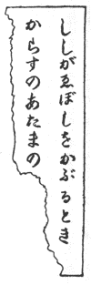
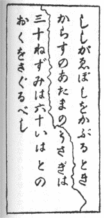

恐怖の一夜
小学校六年生の
宮瀬君のおうちは、東京の西北のはずれにあたる
このおうちを建てたおじさんというのは、ひどくふうがわりな人で、一生お嫁さんももらわないですごし、そのうえ人づきあいもあまりしないで、自分で建てた大きな家にとじこもって、こっとういじりばかりして暮らしていたのですが、このおうちも、そのおじさんが建てただけあって、いかにもふうがわりな、古めかしい建て方でした。
全体で十二
おうちの中もみょうな
なかにも階下にある広い客間なんかは、まるで美術陳列室といってもよいくらい、高価な美しい品物でいっぱいになっていました。
宮瀬不二夫君は、そのりっぱなおうちの寝室で、今ベッドにはいったばかりのところなのです。
おとうさまは会社のご用で、どうしても一晩、家をるすにされねばならなかったものですから、不二夫君は、広いおうちに、ひとりでるす番をしていたのです。もっとも書生や女中たちが、遠くの部屋にいることはいたのですが、それはみな
では、おかあさまはといいますと、そのやさしいおかあさまは、四年ほどまえに亡くなられて、今では、宮瀬家の家族は、おとうさまと不二夫君のただふたりだけなのでした。
春の夜もふけて、ベッドのまくらもとの置き時計は、もう十時をすぎていました。不二夫君は、いつもならば、もうとっくにねむっている時刻なのに、今夜はどうしたわけか、みょうに寝つかれないのです。寒くもないのに、なんだか背中がぞくぞくするようで、さびしくて、こわくてしかたがないのです。六年生にもなっていて、こんなおくびょうなことではだめだと、いくら元気をだそうとしても、なぜかすぐに気がくじけて、びくびくしながら、窓の外の物音に、耳をすますというありさまです。
ベッドにはいるまえに、本を読んだのがいけなかったのです。それはおそろしい
窓には厚い織り物のカーテンがしめきってあって、外を見ることはできませんが、そのカーテンのむこうのガラス窓の外は、広い庭になっていて、大きな木がこんもりとしげっているのです。もしかしたら、その木の下を、あやしげな黒い影が、しのび足で、こちらに近よっているのじゃないだろうか。不二夫君はそんなことまで考えて、毛布の中で身をちぢめているのでした。
広いおうちの中は、あき家のように、しいんと静まりかえっています。ただ、まくらもとの置き時計の秒をきざむ音が、コチコチ、コチコチ鳴っているばかりです。それをじっと聞いていますと、みょうな
不二夫君は、どうかしてねむろうと、目をかたくとじてみました。でも、いくら目をとじても、心はねむらないのですから、いろいろな考えがうかんできます。
「ああ、そうだ。あの本のお話には賊のおそろしい手紙が、しめきった部屋の中へ、どこからともなくまいこんでくるところがあったっけ。お話の中のおじょうさんも、やっぱりぼくみたいにベッドに寝ていたんだ。すると、ちょうどその顔のあたりへ、ひらひらと白い紙が落ちてきたんだ。」
そう考えますと、不二夫君は、今、自分の顔の上にも、同じようなことが起こっているのではあるまいかと、ゾウッとしました。気のせいか、天井の方から、何かひらひらとまいおりてくるような、空気のかすかな動きが感じられます。
「ばかな、そんなばかなことがあるもんか。」
不二夫君は、自分のおくびょうを笑ってやりたいような気持ちになって、パッと目をひらきました。そして、
「ほうら、どうだ、なんにも落ちてきやしないじゃないか。」
と、自分自身にいい聞かせてやろうと思ったのです。
ところが、そうして目をひらいて、天井のほうを見あげたせつな、不二夫君は、あまりのおそろしさに、アッとさけびそうになりました。
ごらんなさい。本のお話に書いてあったとおりのことが、いま、目の前に起こっているのです。天井から、寝ている不二夫君の顔の上へ、ひらひらと、一枚の白い紙がまいおりてくるのです。
不二夫君は夢ではないかと思いました。心の中で思っていたことが、そっくりそのまま、じっさいに起こるなんて、こんなふしぎな、きみの悪いことがあるものでしょうか。
しかし、夢でもまぼろしでもありません。白い紙はかすかな風を起こして、スウッと顔の上を通りすぎたかと思うと、ベッドの毛布の上に、ふわっと落ちたのです。
不二夫君は、しばらくのあいだは、身をすくめて、じっとその紙を見つめていましたが、きみが悪ければ悪いほど、それがどういう紙だか、たしかめてみないでは安心ができません。
「もしやお話のように、おそろしい賊の脅迫状ではあるまいか。」
と考えますと、もうからだじゅうが、じっとりとつめたく
すると、その紙には字が書いてあることがわかりました。鉛筆でなんだか書いてあるのです。
不二夫君は読みたくないと思いました。読むのがこわかったのです。でも、読むまいとしても、目はかってに文字の上を走っていました。そして、またたくまにその文章をすっかり読んでしまったのです。そして、不二夫君は、まっさおな顔になってしまいました。
それもむりではありません。そこには、こんなおそろしいことが書いてあったのです。
不二夫君
どんなことが起こっても、きみは朝までけっしてベッドをはなれてはいけない。声をたててはいけない。ただ目をつむって寝ていればいいのだ。もし、さわいだりすると、きみはどんなめにあうかもしれないよ。それがこわかったら、ただじっとしているのだ。じっとしてさえいれば、きみは安全なのだ。いいかね、命がおしかったら、そのままじっとしているのだよ。
どんなことが起こっても、きみは朝までけっしてベッドをはなれてはいけない。声をたててはいけない。ただ目をつむって寝ていればいいのだ。もし、さわいだりすると、きみはどんなめにあうかもしれないよ。それがこわかったら、ただじっとしているのだ。じっとしてさえいれば、きみは安全なのだ。いいかね、命がおしかったら、そのままじっとしているのだよ。
読みおわっても、あまりのこわさに、しばらくはものを考える力もなく、ただぼんやりしていましたが、やがて心が静まるにつれて、なんともいえぬきみの悪いうたがいが起こってきました。
「いったい、これはどういうわけなんだろう。なぜ、じっとしていなければならないのだろう。きっと、じっとしていられないほど、みょうなことが起こるのにちがいない。ああ、どんなおそろしいことが起こるのかしら。……それにしても、この手紙は、どこから落ちてきたんだろう。天井には、そんなすきなんかないのだし、窓はしめきってあるのだし……。」
考えながら、ふと気がつきますと、どこからか、部屋の中へ、つめたい風がスウッと吹きこんでくるような感じがしました。
「おや、窓があいていたのかしら。」
思わずその窓のほうへ目をむけましたが、そして、あの庭に面した窓の、厚いカーテンをひと目見たかと思うと、不二夫君のかわいらしい目が、とびだすばかり、いっぱいにみひらかれ、顔が今にも泣きだしそうにゆがみました。
おお、ごらんなさい。その窓のカーテンの合わせめから、ピストルのつつ口が、じっとこちらをねらって、つきだされているではありませんか。長いカーテンの下からは、二本の長ぐつがのぞいているではありませんか。
悪者です。悪者が窓からしのびこんで、カーテンのうしろにかくれながら、さわげばうつぞと、不二夫君をおどかしているのです。手紙を投げこんだのも、この悪者のしわざにちがいありません。
悪者は息をころし、身動きもしないで、だまりこんでいます。顔も見えなければ、姿も見えません。ただ、ピストルと、カーテンのふくらみと、下から見えている長ぐつで、それと、わかるばかりです。
でも顔形が見えないだけに、いっそうぶきみな感じがします。相手が、どんなやつとわかっていれば、まだいいのです。それがまったくわからないものですから、なんだかお化けにでも出あったような、いうにいわれない、心の底から寒くなるようなおそろしさです。
お話の本には、悪漢におそわれたおじょうさんが、歯の根も合わぬほどふるえていたと書いてありました。それを読んだときには、「歯の根が合わぬって、どんなことかしら。」と、ふしぎに思ったのですが、今こそ、その気持ちがはっきりわかりました。ほんとうに上下の歯が、しっかりと、合わないのです。からだじゅうが小きざみにぶるぶるふるえ、歯がガチガチ鳴って、いくらとめようとしてもとまらないのです。
不二夫君は、ざんねんながら、そうしてふるえながら、毛布の中に身をちぢめて、かたくなっているほかはありませんでした。賊のいいつけにそむいて、たすけを呼んだり、部屋から逃げだしたりすることは思いもよりません。そんなことをすれば、むろん命がないのです。あのカーテンのあいだから出ているピストルが火を吹くのです。
その部屋は、おとうさまといっしょの寝室でしたから、すぐむこうがわに、おとうさまのからっぽのベッドが見えているのです。そのベッドのまくらもとの壁には、書生や女中を呼ぶベルのボタンがあるのです。ただ二メートルか三メートル走れば、それをおして人を呼ぶことができるのです。
でも、不二夫君は、そのベルのボタンのところまでさえ行けません。そこへ行くのには、どうしても自分のベッドをおりて、床の上を歩かなければならないからです。歩けば、賊のピストルが火をふくにきまっているからです。
不二夫君がそうして、生きたここちもなく、目をふさいで、わなわなふるえていますと、やがて、どこからか、みょうな物音が聞こえてきました。
ゴトゴト、ゴトゴト、テーブルだとかイスだとかを動かしている音です。壁をたたくような音も聞こえます。人の歩きまわるけはいもします。
「おや、あれは客間じゃないかしら。客間へ賊がしのびこんで、あのたいせつな油絵や道具などをぬすみだしているんじゃないかしら。」
寝室の壁ひとえとなりが、あの広いりっぱな広間なのです。そこには、まえにしるしたとおり、いろいろな美しいかざりものや道具などが、たくさんおいてあるのです。このおうちで、賊が目ぼしをつけるものといっては、さしずめ、あの高価な絵や道具類のほかにはありません。
壁のむこうがわの物音は、だんだんひどくなってくるばかりでした。まるで大掃除か引っ越しのようなさわぎです。書生や女中の部屋は遠いのですし、不二夫君はピストルでおどしつけているから、だいじょうぶと思ったのでしょう。賊たちは、人の住んでいないあき家をでも荒らすように、かってほうだいにあばれまわっています。物音のようすでは賊はひとりではありません。ふたりも三人もいるらしいのです。
あんな大きな物音をたてているほどですから、絵や置き物ばかりでなく、イスもテーブルも、じゅうたんも、
不二夫君は、それを思うと、おとうさまに申しわけないようで、気が気ではないのですが、ざんねんながら、どうすることもできません。カーテンのあいだからは、あのピストルが
奇々怪々
ああ、それはどんなに長い長い一夜だったでしょう。不二夫君は、まるでひと月もたったように感じました。あまりのことに、こわさを通りこして、心がしびれたようになって、ボウッとなってしまって、今にも気をうしなうのではないかとあやぶまれたほどでした。
ピストルをかまえた怪人物は、一晩中カーテンのかげから動かなかったのです。ですから、かわいそうな不二夫君は、朝までまんじりともせず、カーテンとにらめっこしていなければならなかったのです。
しかし、その長い長い一夜がすぎて、やっと、夜が明けはじめました。部屋の中がなんとなく、ボウッとうす白くなって、表の道路を牛乳屋さんの車が走る音、なっとう売りの呼び声などが聞こえてきました。
「ああ、うれしい。とうとう朝になった。でも、賊は客間のものを、根こそぎ持っていったにちがいないが、ああ、ほんとうに、ぼくが子どもで、どうにもできなかったのがざんねんだ。」
不二夫君は、ざんねんはざんねんでしたけれど、それでも、ホッとした気持ちで、れいのカーテンのほうを見ますと、ああ、なんという執念ぶかい、ずうずうしいやつでしょう。あいつは、まだじっと立っているのです。ピストルをかまえて、カーテンの下から長ぐつの足を見せて、だまりこくって、立っているのです。
それを見ますと、不二夫君はぞっとして、また首を毛布の中へちぢめてしまいました。
いったい、この怪人物は何をしようとしているのでしょう。となりの客間をガタガタいわせていた同類たちは、とっくに立ちさってしまったのに、こいつだけが、なんのためにいつまでも居残っているのでしょう。
外はだんだん明かるくなってきたらしく、カーテンの上のすきまから、ほの白い光がさしこんできました。でも、カーテンの織り物が厚いのと窓の外に木がしげっていますので、賊の影がすいて見えるほどではありません。カーテンのひだのふくらみで、それとわかるばかりです。
まくらもとの置き時計がもう六時十分まえをしめしています。やがて、書生の
おお、廊下にそれらしい足音が聞こえてきました。喜多村です。喜多村らしい、かっぱつな歩き方です。
不二夫君は、その足音を聞きつけて、あんどするよりも、かえってドキドキしました。
「もし喜多村がふいにはいってきたなら、カーテンのかげのやつは、まさか、じっとしていやしない。逃げだしてくれればいいけれど、もし、いきなり喜多村めがけてピストルをうつようなことがあれば、それこそ、たいへんだ。」
そう思うと気が気ではありません。
しかし、何も知らぬ書生は、もう部屋の入り口まで来て、コツコツとドアをたたいておいて、いきなり寝室の中へはいってきました。
「喜多村、いけない。はいってきちゃいけない。」
不二夫君は、書生に、もしものことがあってはいけないと、何もかもわすれて、するどくさけびました。
「え、ぼっちゃん、なんです。」
喜多村は、びっくりしたように、戸口に立ちどまりましたが、目早いかれは、その瞬間、カーテンのうしろの人影を見つけてしまいました。
「あ、そこにいるのは、だれだ。」
逃げるどころか、喜多村は、いきなり賊のほうへかけよったではありませんか。不二夫君が喜多村を気づかうように、喜多村のほうでも、ぼっちゃんの一大事とばかり、われをわすれてしまったのです。
「喜多村、いけない。」
不二夫君は思わずベッドをとびおりて、書生のうしろから、その手を取って、引きとめようとしました。
でも、喜多村は、もうむちゅうです。ピストルのつつ先も目にとまらぬかのように、カーテンのほうへつめよっていきました。喜多村は勇敢な青年でした。それに柔道初段の免状を持っているほどで、腕におぼえがあるのです。
「やい、返事をしないか。……さては、きさま、どろぼうだな。うぬ、逃がすものか。」
喜多村は、まるで
「あ、あぶない、賊がピストルを……。」
不二夫君は、今にもパンというピストルの音が聞こえ、喜多村が血を流してたおれやしないかと、息もできないほどでした。
ところが、ピストルの音ではなくて、バリバリというおそろしい音がしたかと思うと、おや、これはどうしたというのでしょう。書生はカーテンにとびついた勢いで、そのむこうの窓ガラスをやぶってしまったのです。そして、その場にころがってしまいました。
しばらくは、何がなんだかわけがわからず、喜多村も不二夫君も、キョロキョロそのへんを見まわすばかりでしたが、やがて気がつきますと、今のさわぎでめくれたカーテンのはしに、一ちょうのピストルが、ひもでくくって、ぶらんぶらんとゆれながらさがっていました。カーテンの下には、二つの長ぐつが、横だおしになってころがっていました。
不二夫君はそれを見て、思わず顔をまっかにしてしまいました。ひもでぶらさげたピストルと、長ぐつにおびえて、一晩中、息もたえだえの思いをしたのかと考えると、はずかしくてしかたがなかったのです。
「なあんだ。人かと思ったら、長ぐつばっかりか。まんまといっぱいくわされてしまった。……これ、ぼっちゃんのいたずらですか。」
喜多村は、指をけがしたらしく、それをチュウチュウ口ですいながら、顔をしかめて、不二夫君をにらみつけました。
「そうじゃないよ。やっぱり、どろぼうなんだよ。」
不二夫君は、まだ赤い顔をしたまま、気のどくそうに書生をながめて、ゆうべからのできごとを、手みじかに話して聞かせました。
「え、なんですって。じゃ、客間の家具を――。」
「そうだよ。あんなひどい音をたてていたんだから、きっと、何もかも持っていったにきまっているよ。」
「じゃ、行ってしらべてみましょう。ぼっちゃんもいらっしゃい。」
大学生服の喜多村と、パジャマ姿の不二夫少年とは、まだうすぐらい廊下をまわって、客間へ急ぎました。
客間の入り口には、左右に開く彫刻のある大きなドアがしまっているのですが、ふたりはそれを開くのがこわいような気がして、しばらくは、顔見あわせてつっ立っていました。やがて、喜多村は思いきったように、静かにドアを開いて、そのすきまから、そっと室内をのぞきこみました。ところが、どうしたのか、ちょっとのぞいたかと思うと、喜多村はびっくりしたような顔で、不二夫君を見かえりました。
「おや、ぼっちゃん、へんですよ、あなた夢をみたんじゃないの？」
「エッ、なんだって？ 夢なもんか。あんなにはっきり聞いたんだもの。でも、どうかしたの、へんな顔して。」
「へんですとも、見てごらんなさい。客間のものは、なんにも、なくなってやしないじゃありませんか。」
「おや、そうかい。」
そこでふたりは、急いで客間にはいり、窓のカーテンを開いて、あたりを見まわしました。
じつにふしぎです。壁の油絵も、暖炉のかざりだなの上の銀のかびんも、銀製の置き時計も、何もかもすっかりそろっているのです。イスやテーブルも、いつものとおりにならんでいますし、じゅうたんをめくったあともなければ、だいいち、窓を開いたらしい
不二夫君は、あっけにとられてしまいました。あんな引っ越しのようなさわぎだったのに、客間の中のものが、何一つ動かされたらしいようすもないとは、まるで、キツネにでもばかされたような気持ちです。
もしかすると、客間でなくて、ほかの部屋だったかもしれないというので、ふたりは部屋部屋を一つ一つまわり歩いてみましたが、どこにも異状はないのです。ふたりはまたもとの客間にもどって、ひじかけイスにぐったりともたれこんで、何がなんだかわからないというように、あきれかえった顔を見あわせるばかりでした。
「だって、きみ、夢のはずはないよ。これごらん。こんな手紙がぼくのベッドの上へまいこんできたんだもの。これが夢でないしょうこだよ。たしかに悪者が大ぜいしのびこんだのだよ。」
不二夫君は、
「そうですよ。だから、ぼくもふしぎでしようがないのですよ。ぼっちゃん、こりゃなんだかへんな事件ですね。探偵小説にでもありそうな、えたいのしれない怪事件ですね。」
「ぼく、さっきから考えているんだけど、これは名探偵の
不二夫君は、ちゃんと名探偵の名を知っていて、さも、しさいらしく、パジャマの腕をくみながらつぶやくのでした。
さて、読者諸君、このなんとも説明のできない、怪談のようなできごとは、いったい何を意味するのでしょうか。大ぜいのどろぼうがはいったことはあきらかなのです。しかも家の中の品物は、何一つなくなっていないのです。まさか、そんな、ばかばかしいことがあろうとは考えられません。では、不二夫君や喜多村は、何かたいせつなものが、うばいさられたのを、見おとしているのでしょうか。もしかしたら、それは客間の
獅子 のあご
そうしているところへ、おりよく表に自動車の音がして、不二夫君のおとうさまが、帰ってこられました。朝早く東京駅につく汽車で、旅からお帰りになったのです。
不二夫君と喜多村とは、玄関へとびだしていって、おとうさまをむかえましたが、不二夫君はお帰りなさいというあいさつもろくろくしないで、息を切らしながら、ゆうべのみょうなできごとを、おとうさまにお知らせしました。
おとうさまの
宮瀬氏は不二夫君の話を聞くと、なぜか、ひどくびっくりされたようすで、すぐさま客間にはいって、そこにおいてある品物を念入りにおしらべになりましたが、やっぱり何一つ紛失していないことがわかりました。
「ね、おとうさま、いったいどうしたっていうんでしょう。ぼく、ふしぎでしようがないんです。」
「うん、わしにもわけがわからないよ。だがね、ひょっとすると……。」
宮瀬氏は、不二夫君がめったに見たことのないような、心配そうな顔をして、何かしきりと考えておいでになるのです。
「え、ひょっとするとって？」
「わしの家にとっては、何よりもたいせつなものをぬすまれたかもしれないのだよ。」
「たいせつなものって、なんです。」
「ある書類なのだ。」
「じゃ、その書類をしらべてみたらいいじゃありませんか。なくなっているかどうか。」
「ところがね、おとうさまも、その書類が、どこにしまってあったか知らないのだよ。」
「え、おとうさまも知らないんですって？ おわすれになったのですか？」
不二夫君は、なんだかへんだというような顔をして、じっと、おとうさまの顔を見つめました。
「いや、わすれたんじゃない。はじめから知らないのだよ。しかし、この家のどこかに、その書類がかくしてあることはわかっていたのだ。この家を建てたおじさんが、そのかくし場所をわしにいわないで亡くなってしまわれたのでね。あんなふうに急な病気で、遺言をするひまがなかったものだからね。」
「じゃ、そんなたいせつなものが、この客間のどこかにかくしてあったのですね。それを、どろぼうがさぐりだしてぬすんでいったのでしょうか。」
「どうもそうとしか考えられない。そんな大さわぎをして、何もぬすんでいかなかったはずはないからね。」
それ以上は、いくらたずねても、おとうさまは、何もおっしゃいませんでした。何か秘密があるのです。子どもの不二夫君などには、うっかり話せないほどの、大きな秘密があるのに、ちがいありません。
宮瀬氏はさも心配そうなようすで、しきりと考えごとをしながら、客間の中を、あちこちと歩きまわっておられましたが、やがて、何か
「おい、喜多村君、きみは明智小五郎っていう名探偵を知っているだろうね。」
「ええ、名まえは聞いています。さっきぼっちゃんと、その明智探偵のことを話していたのです。」
喜多村は明智と聞いて、何かうれしそうに答えました。
「うん、不二夫も知っていたのか。不二夫、おまえはどう考えるね。おとうさまは、このわけのわからない事件を、あの明智探偵にたのんだらと思うのだが。」
「ええ、ぼくもそう思っていたのです。明智さんならきっと、なぞをといてくださると思います。」
不二夫君もうれしそうに、目をかがやかせて、おとうさまを見あげました。
「ふん、ひどく信用したもんだね。小学生のおまえにまで、そんなに信用されているとすると、よほどえらい男にちがいない。よし、たのむことにしよう。おい、喜多村君、明智探偵事務所の電話番号をしらべるんだ。そして、明智さんに電話に出てもらえ。用件はわしが直接お話するからね。」
そして、電話がかけられ、明智小五郎は、宮瀬氏のていちょうな依頼を
一時間ほどのち、明智探偵の西洋人のように背の高い洋服姿が、客間にあらわれました。よく光る目、高い鼻、引きしまったかしこそうな顔が、今、不二夫君たちの前にあらわれたのです。頭はもじゃもじゃにみだれています。ちょうど絵にある古代ギリシアの勇士のような頭なのです。
宮瀬氏は明智探偵をイスに
「よくわかりました。それだけの手数をかけて、何もぬすまないで帰ったとは考えられません。わたしもこの部屋の中に、かならずなくなったものがあると思います。では、さっそく、この部屋をしらべてみたいと思いますから、しばらくのあいだ、わたしをひとりきりにしておいてくださいませんでしょうか。」
明智はにこにこ笑いながら、歯ぎれのよい口調でいいました。
そこで、宮瀬氏は不二夫君や書生の喜多村をつれて、別の部屋にしりぞきましたが、三十分もたったころ、客間の呼びリンが鳴って、しらべがすんだという知らせがありました。
宮瀬氏と不二夫君とが、急いで客間へはいっていきますと、明智は手に小さな紙きれを持って、部屋のまん中につっ立っていました。
「これをごぞんじですか。むこうの長イスの下にこんな紙きれが落ちていたのです。わたしは部屋のすみからすみまで、一センチも残さずしらべたのですが、賊はよほどかしこいやつとみえて、なんの手がかりも発見することができませんでした。ただ、こんな小さな、みょうな紙きれのほかには。」
宮瀬氏はそれを受けとってしらべてみましたが、いっこう見おぼえのないものでした。
それは長さ五センチ、はば一センチほどの、小さな紙きれで、それに左のようなみょうな数字が書いてあるのです。
５＋３・13−２
「いいえ、ぼくじゃありません。ぼくの字とまるでちがいます。」
書生も知らぬといいますし、女中たちを呼んでたずねても、だれもおぼえがないという答えでした。
「みなさんが、だれもごぞんじないとすると、これはゆうべの賊が、うっかり落としていったものと考えるほかはありませんね。」
「そうかもしれません。しかし、そんな紙きれなんか、べつに賊の手がかりになりそうもないじゃありませんか。」
宮瀬氏がつまらなそうにいいますと、明智は長い指で、もじゃもじゃの髪の毛をいじくりながら、意味ありげに、にっこり笑いました。
「いや、わたしはそう思いません。もし賊が落としていったものとすると、ここに書いてある数字に何か意味があるのかもしれません。」
「数字といっても、小学生の一年生にでもわかるような、つまらない、たし算とひき算じゃありませんか。そんな数字にどんな意味があるとおっしゃるのです。」
「まあ、待ってください。ええと、五に三たす八ですね。十三から二ひく十一ですね。八と十一と……アッ、そうかもしれない。」
何を思いついたのか、明智はそういいながら、つかつかと部屋のいっぽうの壁に近づきました。
その壁には、旧式な、石炭をたく大きな暖炉が切ってあって、暖炉の上の大理石のたなに、金の彫刻のあるりっぱな置き時計がおいてあります。
明智はその暖炉の前にあゆみよって、両手で置き時計を持ちあげ、その裏がわや底をねっしんにしらべていましたが、べつになんの発見もなかったとみえて、がっかりしたように、それをもとの場所におきました。
「そうじゃない。もっとほかのものだ。八と十一、八と十一……。」
明智はきちがいのように、わけのわからぬことをつぶやきながら、また部屋のまん中にもどって、くわしくあたりを見まわしています。
不二夫君は、おとうさまのうしろに立って、明智のようすをねっしんに見まもっていました。あの有名な探偵が知恵をしぼっているありさまを、まのあたり見ているのかと思うと、なんだかぞくぞくするほどうれしくなってくるのです。
しばらく部屋の中をぐるぐる見まわしていた明智の目が、また、暖炉のたなにもどって、そのまま動かなくなってしまいました。
「うん、あれだ。あれにちがいない。」
明智はもう、そばに人のいるのもわすれたように、むちゅうになってつぶやくと、暖炉の前にかけより、そこにしゃがんで、みょうなことをはじめました。
れいの大理石のたなは、額ぶちのように暖炉をかこんだ、木製のりっぱなわくの上に乗っているのですが、そのわくの大理石の板を受けている部分に、横に長く、まるいうきぼりの彫刻が、いくつもいくつも、ずっとならんでいるのです。
不二夫君は、いつかかぞえたことがあって、そのまるい彫刻が十三あることを知っていました。ちょうど小さな茶わんを十三ならべて
明智は、そのまるいうきぼりを右からかぞえたり左からかぞえたり、一つ一つ、ねじでもまわすようにいじくりまわしたり、まるで、子どものいたずらのようなまねをはじめたのです。
でも、なかなか思うようにならぬとみえて、しばらく手を休めて、
「わかりました。ここにしかけがあったのです。今、どこかしらこの部屋の中に、みょうなことが起こりますから、注意していてください。」
そして、もう一度、暖炉の前にしゃがんで、左から五番めのまるい彫刻を、ぐいぐいと右にねじまわし、つぎに十三番めのを左にまわしたかと思いますと、どこかべつの方角でカタンとみょうな音がしました。
「アッ、獅子が口をひらいた。おとうさま、ごらんなさい。あの柱の獅子が口をひらきましたよ。」
いち早くそれを発見して、とんきょうな声でさけんだのは不二夫君でした。
その声に一同が不二夫君の指さすところをながめますと、いかにも獅子が口をひらいているのです。
暖炉と同じがわの壁に、はば三十センチほど、柱のように出っぱった部分があって、その上のほうに
「アッ、それじゃ、あの獅子のあごにしかけがあったのか。」
宮瀬氏は、あきれたようにつぶやきました。
「そうです。この暖炉のまるい彫刻を、この紙きれの数字のとおりにまわしますと、壁のうしろにしかけがあって、獅子が口をひらくようになっていたのです。むろん、あの獅子の口の奥が秘密のかくし場所になっていて、賊はそこから、何かたいせつなものをぬすんでいったのにちがいありません。こうしてあれをひらく暗号の紙きれを、ちゃんと用意していたくらいですからね。」
明智は説明しながら、つかつかとその獅子の前に近づき、背のびをして、ひらいた口の中へ右手をさし入れました。
「からっぽです。何もありません。」
「おお、それじゃ、やっぱり賊は、その中のものをぬすんでいったのですね。」
宮瀬氏は、青ざめた顔で、がっかりしたようにためいきをつくのでした。
ねこめ石の指輪
ややあって、宮瀬氏は何を思ったのか、明智探偵に内密の話があるからといって、不二夫君と喜多村とを立ちさらせ、ぴったりドアをしめて、探偵とただふたり、テーブルをはさんで、さしむかいとなりました。
「さいぜんも、ちょっとお話したように、わたしは、そのかくし場所を少しも知らなかったのです。しかし、どこかしらこの家の中に、あるたいせつな書きものが、かくしてあることは、よく知っておりました。亡くなったわたしの兄がかくしておいたのです。
わたしは、それを手をつくしてさがしました。兄がこの家をわたしにゆずって、亡くなってから一年ほどになるのですが、そのあいだ、わたしは毎日のように、この家のすみからすみまでさがしまわったのです。しかし、秘密のかくし場所は、どうしても見つかりませんでした。
それを、あなたは、たった一時間のあいだに、見つけてしまわれた。いったい、どうしてこの秘密がわかったのですか。」
宮瀬氏は、ほとほと感じいったように、明智の顔を見つめるのでした。
「いや、何もわたしのてがらではありませんよ。この紙きれです。この紙きれが、教えてくれたのです。」
明智はやっぱり、にこやかに笑いながら、少しも高ぶらないで答えました。
「それはわかっています。むろんその紙きれが手がかりになったことはわかっていますが、どうして暖炉の彫刻にお気づきになったのか、まるで手品のようで、わたしなどには、さっぱりわけがわかりません。」
「いや、なんでもないことなのですよ。」
明智は、むぞうさに説明しました。
「ぼくもはじめは、たいへんな思いちがいをしていたのです。五に三たす八、十三から二ひく十一というふうに、たし算とひき算をするのだとばかり思っていたのです。
それで、この部屋の中に八とか十一とかいう数のものが、何かないかと、そのへんを見まわしていますと、あの置き時計が目につきました。時計の文字盤には、一から十二までの数字がきざんであるのですからね。
わたしは、ふと、あの時計の針を、八時のところへまわしたり、十一時のところへまわしたりすれば、秘密のかくし場所がひらくようなしかけになっているのではないかと考えました。
しかし、あの時計をよくしらべてみますと、どうもそんなしかけがあるらしくも思えません。そこで、わたしはまた部屋のまん中に立って、心をしずめて、四方を見まわしたのです。すると、こんどはあのたなの下の彫刻が目にはいりました。
そこで、あのまるい彫刻の左から八番めと十一番めを動かしてみたり、右から八番めと十一番めを動かしてみたりしましたが、これも失敗でした。少しも動かないのです。
わたしは、とほうにくれて、紙きれをもう一度ながめました。そして数字を見ているうちに、ふとべつの考えがうかんできたのです。
この＋や−の
そこで、まず左からかぞえて五番めのまるい彫刻を、動かしてみました。すると、なんだか少し動くような気がするのです。ためしに右へねじってみますと、ぐるぐるまわるじゃありませんか。
ひょっとしたら、五にたす三は、三回まわせという意味かもしれない。そう考えて右へ三回まわしますと、何か、かすかな手ごたえがあって、そこでぴたりととまって、動かなくなりました。
こんどは左からかぞえて十三番めの彫刻です。動かしてみますと、やっぱりまわるのです。右へではなくて、左へまわるのです。
そこで、わたしは、すっかり、紙きれの数字のわけがわかりました。＋のほうは右へまわせという印で、−のほうはその反対の左へまわせという印なのです。13−２ですから、十三番めの彫刻を左へ二回まわせばいいのです。
そのとおりにしますと、あんのじょう、あの獅子の口がひらいたというわけですよ。」
「ああ、そうでしたか。その紙きれの数字は、金庫をひらく暗号と同じものだったのですね。それにしても、あの暖炉のかざりの彫刻にお気づきになるとは、やっぱり専門家はちがったものです。われわれには思いもおよばぬことですよ。」
宮瀬氏は感じいって、探偵の知恵をほめたたえたのでした。
「しかし、わたしはまだ、あの獅子の口の中に、何がはいっていたかということを知らないのですが、それほどにして、賊がぬすんでいったところをみますと、よほどたいせつなものだったのでしょうね。」
「そうです。ばくだいな金額のものです。今のねうちにすれば、おそらく一億円をくだるまいと思います。」
宮瀬氏は、人に聞かれるのをおそれるように、さも一大事らしく、ささやき声になって、いいました。
「エッ、一億円？ それは、たいへんな金額ですね。いったいどういう書類なのです。」
さすがの明智探偵も、金額があまりに大きいのに、びっくりしたおももちでした。
「暗号文書なのです。一億円の金塊のかくし場所をしるした暗号なのです。とつぜんこんなことをいったのでは、おわかりにならないでしょうが、これには深いわけがあるのです。あなたには、その暗号文書を賊の手から、取りもどしていただかねばなりませんから、だれにも打ちあけたことのない秘密を、お話するのですが、それはこういうわけなのです。
わたしの祖父にあたる宮瀬
その重右衛門という人が、まあおくびょう者とでもいうのでしょうね。維新のさわぎで、江戸に大戦争が起こるといううわさを聞きますと、そうなれば自分のような商人なぞは、どんなめにあうかしれないというので、たくわえていた百万両以上の金銀のほかに、
さっき金塊と申しましたが、じつは大判小判のかたまりなのです。いや、大判小判の山なのです。それをわたしの兄は、『大金塊、大金塊』と申していたのです。
それから重右衛門は、一家のものを引きつれて、山梨県の片いなかにひっこみ、そこで亡くなったのですが、亡くなるときに、その子ども――というのは、つまりわたしには父なのですが――そのわたしの父に宮瀬家の宝もののかくし場所をしるした、暗号文書をのこしていったのです。
重右衛門も、わたしの兄と同じように、急病で亡くなったので、くわしいことをいいつたえるひまがなかったのだと申します。
ですから、わたしの父は暗号文書を持っていても、それをとくことができなかったのです。なんでも、ひどくむずかしい暗号で、
父が亡くなりますと、その暗号は兄につたわりました。兄とわたしとは東京に出て、いろいろ苦労をしまして、ふたりとも、まあ人なみの暮らしをするようになったのですが、その兄というのが、また、かわりものでした。少し財産ができますと、こんな、みょうな洋館を建てて、世間づきあいをいっさいやめて、こっとういじりをはじめたものです。
かわりものの兄は、たいせつな暗号文書をぬすまれてはたいへんだというので、知恵をしぼって、みょうなことを考えつきました。それは、暗号の紙を二つにさいて、兄とわたしとがその半分ずつを、めいめいに、どこか秘密のかくし場所へかくしておくという、きばつな考えなのです。
それと申すのも、宮瀬家の大金塊といううわさが、いつとなく世間に知れて、暗号文書を高価にゆずってくれというものがあったり、あるときには、兄の家にどろぼうまではいったものですから、なんとなく危険を感じだしたのですね。
兄はその暗号の半分を、ひじょうな苦心をして、兄が建てたこの家の中の、だれにもわからぬ場所へかくしたと申しておりました。そして、
『わしが生きているあいだは、おまえにもそのかくし場所をいわない。死ぬときに遺言としておまえにうちあける。』というのです。
ところが、一年ほどまえ、その兄が急病で亡くなりましたが、わたしがかけつけたときには、もう息を引きとっていて、遺言をするひまもなく、とうとうそのかくし場所を聞かずにしまったのです。
それから、なんどもこの建物の中だということを聞いていたものですから、わたしはすぐさま、兄のこの家へ引っ越しをして、一年のあいだというもの、すみからすみまでさがしまわったのですが、どうしても、その暗号の半分を発見することができませんでした。まさか、獅子の口の中とは気がつかないものですからね。」
「すると、賊は暗号をぬすんでも、なんの役にもたたないわけですね。」
明智はそれに気づいて、ことばをはさみました。
宮瀬氏は、にわかに、さもおかしそうに笑いだすのでした。
「ははは……、そうですよ。せっかくぬすんでいっても、なんにもならないのですよ。その半分の暗号というのはね、ほら、こうして、たえずわたしが身につけているのですよ。」
宮瀬氏はそういいながら、右手のくすり指にはめていた、大きな指輪をぬきとって、明智の前へさしだしました。
「暗号の半分はこの指輪の中にしこんであるのですよ。わたしが考えたわけじゃありません。それも兄の知恵なのです。この指輪の石は、ねこめ石という宝石ですが、その石がはずれるようになっているのです。」
そのねこめ石を、よりをもどすように、ぐるぐるまわしますと、石は台座をはなれて、その下にもう一つ、直径三ミリほどの、水晶のような透明な、小さな石がはめこんであるのが、あらわれてきました。
「これですよ。このけし
明智はいわれるままに、その指輪のガラス玉のところを目にあてて、窓の光にかざして見ました。すると、これはどうでしょう。まるで顕微鏡でものぞくように、そのわずか三ミリのガラス玉の中にはっきりと左のような文字が読めたではありませんか。

「かなばかりですね。なんだか意味がよくわかりませんが……。」
「わたしは何度も見ているので、文句は読めますよ。『獅子が
「ふうん、なるほど、『獅子が烏帽子をかぶる時』ですか。みょうな文句ですね。」
明智はひごろから暗号には、ひじょうに興味をもっているものですから、むちゅうになって、けし粒のようなガラス玉をのぞきつづけるのでした。
「獅子が烏帽子をかぶる」とはいったい何を意味するのでしょう。烏帽子をかぶった獅子なんて、絵にかかれたのも見たことがないではありませんか。そのうえ、あとの文句が「カラスの頭の」です。なんという、ぶきみな暗号でしょう。どこかしら深い山の奥にうずめられた、一億円の金貨のそばには、烏帽子をかぶった獅子や、おばけカラスが、じっと見はり番をつとめている、とでも、いうのでしょうか。
電話の声
宮瀬氏と明智探偵とが、そのふしぎな暗号文のことについて、話しあっているところへ、あわただしく書生がはいってきて、主人に電話がかかってきたことを知らせました。
「だれからだね。」
鉱造氏は書生のほうをふりかえって、めんどうくさそうにたずねました。
「名まえはいわないでも、わかっているとおっしゃるのです。ご用をうかがっても、ひじょうに重大な用件だから、ご主人でなければ話せないとおっしゃるのです。」
「へんだねえ。ともかく、この卓上電話へつないでごらん。わしが聞いてみるから。」
そして、鉱造氏は、その応接室の片すみにある、小さい机の前へ行って、そこにおいてある受話器を取りました。
「もしもし、わたし宮瀬ですが、あなたは？」
なにげなく話しかけますと、電話のむこうからは、なんだかひどくうすきみの悪い、しわがれ声がひびいてきました。
「ほんとうに宮瀬さんでしょうね。まちがいありますまいね。」
「宮瀬ですよ。早く用件をおっしゃってください。いったいあなたはだれです。」
鉱造氏はかんしゃくを起こして、少し強い声でたずねました。
「あ、そうですか。では申しますがね。わたしは、昨晩、あなたのおるすちゅうに、お宅へおじゃましたものです。ウフフ……、こういえば、べつに名を名のらなくても、よくおわかりでしょうな。」
電話の声は、おそろしいことをいって、きみ悪く笑いました。ああ、なんということでしょう。どろぼうから電話がかかってきたのです。ゆうべ暗号の半分をぬすみだしていった悪者が、
宮瀬氏は、あまりのことに、なんと答えてよいのか考えもうかばず、ちょっとためらっていますと、先方はあわてたように、またしゃべりだしました。
「もしもし、電話を切ってはいけませんよ。たいせつな相談があるのだから。……あなたは、びっくりしているようですね。フフフ……、ごもっともです。どろぼうが電話をかけるなんて、あまり世間にためしのないことですからね。しかし、まあ聞いてください。きょうはあなたと商売上の取り引きをしようというのです。けっしてらんぼうな話ではないのです。聞いてくれますか。」
名探偵明智小五郎は、宮瀬氏の顔色がかわったのを見て、すぐ、卓上電話のそばへ近づいてきました。そして、宮瀬氏の持っている受話器に耳をよせて、そこからかすかにもれてくる、先方の話し声を聞きとってしまったのです。
宮瀬氏は明智の顔を見て、「どうしたものでしょう。」と、目でたずねました。探偵は「かまわないから先方のいうことを聞いてごらんなさい。」という意味を目で答えました。
「ともかく、その用件をいってみたまえ。」
宮瀬氏が、しかたなく返事をしますと、きみの悪いしわがれ声は、さっそく、用件にとりかかりました。
「もうお気づきでしょうが、わたしは、ゆうべあなたの家につたわっている、暗号文をちょうだいするために参上したのです。そして、暗号文の半分だけは、しゅびよく手に入れましたが、どうも半分ではしかたがありません。あとの半分は、あなたがどこかへかくしているにちがいないと思いますが、わたしは、そのあなたの持っている半分の暗号を買いたいのです。
どうです。売る気はありませんか。わたしは金持ちですよ。百万円で買いましょう。あの小さな紙きれが百万円なら、いいねだんじゃありませんか。
暗号文の半分は、わたしが手に入れたのです。だから、あなたの手もとにのこっている半分は、紙くずも同様になってしまったのです。半分では暗号がとけっこありませんからね。どうです。その紙くず同様のものを百万円で買おうというのです。売りませんか。」
なんという虫のよいいいぐさでしょう。半分はぬすんでおいて、あとの半分が紙くず同然になったからといって、一億円のねうちのものを、たった百万円でゆずり受けようというのです。
宮瀬氏は、明智探偵と目で話しあって、売ることはできないと答えました。
「じゃ、もう百万円ふんぱつしましょう。二百万円出します。それでゆずってください。
二百万円では安いというのですか。一億円の金塊のかくし場所をしるした暗号だから、二百万円ぐらいではゆずれないというのですか。しかし、よく考えてごらんなさい。あの暗号はあなたのおじいさんが書いたものですよ。それからきょうまで、何十年という月日がたっています。そんな長いあいだ、あなた方は、あの暗号文をとくことができなかったじゃありませんか。たとえ、暗号の紙がぜんぶそろっていても、あなた方の知恵ではきゅうにとけるはずはありません。
とけない暗号なんか、だいじそうに持っていたって、なんにもならないじゃありませんか。まして、今ではそれが半分になってしまったのですから、あなたにとっては、まったく、なんのねうちもないのです。
その紙くず同然のものを、わたしは二百万円で買おうというのです。お売りなさい。お売りになったほうが、あなたのためですよ。」
賊が、あまりばかばかしい相談を持ちかけてきますので、宮瀬氏は少しおかしくなってきました。こちらも、相手をからかってやりたいような、気持ちになってきました。
「ハハハ……、だめだめ、そんなねだんで売れるものか。それよりも、きみのぬすんでいった半分を買いもどしたいくらいだ。どうだね、きみのほうこそ、暗号文の半分をわしに売る気はないかね。」
「フフフ、おいでなすったな。よろしい。売ってあげましょう。そのかわり、わたしのほうのは少し高いですよ。一千万円です。一千万円がびた一文かけてもだめです。どうです。買う気がありますか。フフフ……、買えますまい。だいいち、あなたの家には一千万円なんてお金はありゃしない。それよりも、悪いことはいわない。わたしにお売りなさい。二百万円でいやなら、三百万円出しましょう。え、まだ安いというのですか。じゃ、もうひとふんぱつしましょう。五百万円だ。さあ、五百万円で売りますか、売りませんか。」
賊はまるで、じょうだんのように、だんだんねだんをせり上げてきました。
「つまらない話はよしたまえ。五百万円であろうと八百万円であろうと、わしがどろぼうなんかと取り引きをするような人間だと思っているのか。それよりも、きみはつかまらない用心をするがいい。わしも、たいせつな暗号をぬすまれて、だまっているつもりはないからね。」
宮瀬氏は、きっぱりと賊の申し出をはねつけました。
「フフン、それがあなたの最後の返事ですか。せっかくしんせつにいってやっているのに、それじゃあなたは、元も子もなくなってしまいますよ。売らないといえば買わぬまでです。そのかわりに、こんどは少し手荒らいことをはじめるかもしれませんよ。あなたこそ用心するがいいのだ。わたしは、どんなことをしても、あなたの持っている暗号の半分を手に入れてみせますからね。」
「とれるものなら、とってみるがいい。わしのほうには、きみたち盗賊が鬼のようにおそれている名探偵がついているのだからね。」
「フフン、名探偵ですって？ 明智小五郎ですか。相手にとって不足はありませんよ。ひとつ明智探偵と知恵くらべをやりますかね。
じゃ、せいぜいご用心なさいよ。今にどんなことが起こるか、そのときになって泣きっつらをしないようにね。念のためにいっておきますがね。電話を切ったあとで、交換局へぼくの住所をたずねてもむだですよ。ぼくは公衆電話で話しているのですからね。」
そして、ぷっつり電話は切れてしまいました。
さあ、いよいよ戦いです。
どろぼうはまだ何者ともわかりませんが、ぬすみをはたらいた家へ、ずうずうしく電話をかけてくるほどのやつですから、よほどきものすわった悪漢にちがいありません。
賊は宮瀬氏に「今にどんなことが起こるか、そのときになって泣きっつらをしないように。」と、さも自信ありげにいいましたが、いったい、どんなおそろしいてだてを考えているのでしょう。
賊は暗号の半分が、宮瀬氏の指輪の中にかくしてあることは、まだ、少しも気づいていないはずです。では、どうしてそのありかを見つけだすつもりなのでしょう。賊のほうには何か、暗号そのものを見つけだすよりも、もっと別のうまいてだてがあるのではないでしょうか。
賊がしゅびよく目的をはたすか、名探偵明智小五郎が勝利を得るか、いよいよ死にものぐるいの知恵くらべがはじまろうとするのです。
かえ玉少年
「明智さん、だいじょうぶでしょうか。わたしはあんな強いことをいったものの、なんだか心配でしかたがありません。あいつは長いあいだ暗号をつけねらっていたらしいようすです。おそろしく執念ぶかいやつです。このつぎには、いったいどんなたくらみをするかと思うと、気が気ではありません。明智さん、何かうまいお考えはないでしょうか。」
宮瀬氏は、青ざめた顔で、名探偵の知恵にすがるようにいうのでした。
「ぼくも今、それを考えているのです。あいつはもう一度、ここへやってくると思います。この家へ近づかなくては、暗号の半分を、手に入れることはできないのですからね。
われわれはそれを待っていればいいのです。そして、ぎゃくにあいつのかくれ家をつきとめて、ぬすまれた暗号を取りもどせばいいのです。しかし、あいつもなかなか悪がしこいやつですから、たとえこの家へやってくるにしても、われわれのゆだんを見すまして、何か思いもよらないやりかたで、不意うちをするつもりにちがいありません。
われわれは、それをふせぐことを考えなければなりません。相手のてだてにのらない用心をしなければなりません。」
明智はもじゃもじゃの頭に、指をつっこみながら、しきりと考えていましたが、やがて何か思いついたらしく、にこにこしていいだしました。
「ああ、こいつは妙案だ。宮瀬さん、ぼくはうまいことを思いつきましたよ。これならばだいじょうぶ、相手にさとられる気づかいはありません。ちょっと電話を拝借します。ぼくの助手の小林という子どもを、ここへ呼びよせたいのです。」
宮瀬氏があっけにとられて、ながめているあいだに、明智はもう卓上電話機をとって、明智探偵事務所を呼びだしていました。
「ああ、きみ、小林君だね。すぐここへ来てもらいたいんだ。宮瀬さんのお宅、わかっているね。あ、それから、れいの化粧箱を持ってきてくれたまえ。自動車で、急いでね。じゃ、待っているよ。」
その電話が切れるのを待って、宮瀬氏はいぶかしげにたずねました。
「明智さん、その妙案というのは、どんなことなんです。わたしには、聞かせてくださってもいいでしょう。」
「それは、こういうわけなのです。」
明智はあいかわらず、にこにこしながら説明をはじめました。
「賊が何かたくらみをするために、もう一度ここへやってくるとすれば、それをふせがなければなりません。いちばんいいのは、ぼくがお宅へとまりこんで、見はりをつとめることですが、それでは相手が用心をして近づかないかもしれません。
たとえ変装するにしても、家族がひとりふえたとなると、あんな悪がしこいやつですから、きっとあやしむにちがいありません。それにしても、さいぜんあなたが、ぼくの名を賊におっしゃったのはまずかったですよ。ぼくが、この事件に関係しているとわかっては、賊はいよいよ用心ぶかくなりますからね。
それで、ぼくのかわりにだれかと考えたのですが、けっきょく、ぼくの助手の小林に、この役をつとめさせることを思いついたのです。
小林を使うというのには、わけがあります。じつはお宅へうかがったときから、気づいていたのですが、こちらのぼっちゃん、不二夫君といいましたね。あのぼっちゃんがからだのかっこうから、顔のまるいところなんか、ぼくの助手の小林と、ひじょうによく似ているのです。年は小林のほうが上でしょうが、ぼっちゃんは大がらなので、せいの高さなども同じぐらいなのです。
そこで、ぼくはへんなことを考えついたのですよ。少しとっぴな考えですから、おおどろきになるかもしれませんが、助手の小林を不二夫君のかえ玉にして、しばらくここへ、とまらせていただくことにしたいと思うのです。」
それを聞きますと、あんのじょう、宮瀬氏は目をまるくしました。
「へえ、うちの不二夫のかえ玉ですって？ で、いったいそれは、どういうお考えなのです。」
「小林を不二夫君に変装させて、不二夫君の部屋に住まわせるのです。夜も不二夫君のベッドに寝させるのです。まさか、そのかえ玉を学校へ通わせることはできませんが、かぜをひいたていにして、休ませておけばいいのです。そして、賊のやってくるのを待つのです。小林はまだ子どもですが、探偵の仕事にかけては、じゅうぶん、ぼくのかわりがつとまるほどの腕まえを持っています。けっしてへまをやるようなことはありません。」
「なるほど、そういうわけですか。しかし、それじゃほんとうの不二夫のほうはどうするのです。不二夫がふたりもいては、おかしいじゃありませんか。」
「ほんとうの不二夫君は、しばらくぼくがおあずかりしたいのです。助手の小林に変装させて、ぼくの家にいていただくことにしたいのです。学校のほうは、少しのあいだ休ませなければなりませんが、そのかわりに、ぼくなり、ぼくの家内なりが先生になって、みっちり勉強させますよ。
なぜ、そんな手数のかかるまねをするかといいますとね、これにはもう一つ別のわけがあるのですよ。というのは、ぼくは不二夫君の身のうえに、何か危険なことが起こりはしないかと、心配するからです。
賊は、あなたの指輪の秘密を知りませんから、暗号そのものをぬすみだすことはできません。何か、あなたにひどい苦しみをあたえて、あなたががまんしきれなくなるように、しむけるにちがいありません。
それには、さしあたって、不二夫君がいちばん目をつけられやすいと思うのです。子どもをかどわかして、その身のしろとして、暗号の半分をよこせという、よくある手です。ぼくは、賊がそれを考えているんじゃないかとおそれるのです。さっきの電話の口ぶりが、なんだかそんなふうに感じられましたからね。」
「ふうん、なるほど、おもしろい考えですね。そうすれば不二夫も安全だし、あなたの少年助手も、だれにもうたがわれないで、わたしの家にとまりこめるというわけですね。なるほど、こいつは名案ですね。」
宮瀬氏はしきりに感心するのでした。目の中へ入れてもいたくないほどかわいがっている不二夫君を、賊にかどわかされでもしたら、それこそたいへんです。それを、明智探偵が、あらかじめふせいでくれるというのですから、これほど安心なことはありません。宮瀬氏は、喜んで明智の考えにしたがうことになりました。
それからまもなく、
明智探偵は、小林君を宮瀬氏にひきあわせてから、小型トランクを受けとって、その中をちょっとしらべていましたが、何かうなずきながら、パタンとふたをしめて、
「宮瀬さん、これはぼくの変装用の化粧箱ですよ。この中にいろいろな絵の具やはけなどがはいっているのです。」
と説明しました。
それから、明智は、別の部屋にいた不二夫君を呼んでもらい、小林少年とふたりをつれて、化粧室へはいりました。
不二夫君は、小林少年に変装するのだと聞かされて、いやがるどころか、うちょうてんになって喜んでしまいました。あの有名な少年助手にばけて、日本一の名探偵の事務所で暮らせるのだと思うと、もう、うれしくてしようがないのです。
それから三十分ほどしますと、明智探偵は、変装させたふたりの少年を左右にしたがえて、もとの応接間へもどってきました。
「ほう、これはどうだ。おまえが不二夫かい。すっかり少年探偵になってしまったね。それに、小林君も、そうして小学生服を着ると、不二夫とそっくりですよ。明智さん、あなたのお手なみが、これほどとは思いませんでした。じつにおどろきましたよ。」
宮瀬氏はすっかり感心して、ふたりの少年を見くらべるのでした。
それから、いろいろなうちあわせがすみますと、明智探偵は、不二夫君になりすました小林助手をあとにのこし、少年助手にばけた不二夫君をつれて、宮瀬邸を立ちさりましたが、探偵のそばによりそって、玄関の石段をおりていく不二夫君は、中学生のように長いズボンをはいて、りんごのようにつやつやした顔を、さもうれしそうにほころばせ、どこからながめても、名探偵の少年助手としか見えないのでした。
さて、読者諸君、こうして世にもふしぎな取りかえっこの計略は、しゅびよくなしとげられたのですが、それにしても、明智探偵の考えは、はたしてあたったでしょうか。賊はもう一度、宮瀬邸へやってくるのでしょうか。来るとすれば、いったいどんなふうにして、何をしに来るのでしょう。
その夜のことです。不二夫君にばけた小林少年は、かりのおとうさまの宮瀬氏に「おやすみなさい。」をいって、さきにベッドにはいったのですが、なれぬ部屋、なれぬベッドのことですから、なんとなく目がさえて、きゅうには寝つかれないのです。
寝つかれぬままに、まじまじと窓のほうをながめていますと、ひるま明智先生から聞かされた、ゆうべのできごとが思いだされます。
ああ、あのカーテンのあいだから、ピストルのつつ口がのぞいていたんだな。そして、この天井から、賊の脅迫状がひらひらとまいおりてきたんだな。そのときの不二夫君の気持ちはどんなだったろう、などと考えると、いよいよ目がさえるばかりです。
ゆうべとはちがって、そのカーテンが少しひらいているので、窓のガラス戸が見えています。そしてその外は
ハッと気がつくと、そのやみの中に、何か白いものが動いていました。人の顔です。鳥打ち帽をまぶかにかぶった、あやしげな人の顔です。
小林君は、思わずベッドをとびおりました。そして、窓とは反対の入り口のほうへかけより、ドアをひらくと、いきなり「喜多村さあん。」と、書生の名を呼びたてました。
それから家中の大さわぎになって、宮瀬氏はもちろん、書生も、小林君も、手に懐中電灯を持って庭におり、あやしい人影の見えたあたりを、あちこちとさがしまわりましたが、いち早く逃げさったものとみえて、どこにも人のけはいさえないのでした。
やっぱり明智探偵の心配はあたっていたのです。賊は案にたがわず、不二夫少年をねらいはじめたのです。その夜はさいわい、なにごともなく終わりましたが、このぶんでは、いつどんな手段で、賊は不二夫君を、いや不二夫君にばけた小林少年を、かどわかさないともかぎりません。
そして、その心配は、まもなくじっさいとなってあらわれました。賊は、じつにふしぎな手段によって、小林君をかどわかしたのです。まるで考えもおよばないような、
ああ、それはいったいどのような手段だったのでしょう。そして賊のために、まんまとかどわかされた小林君は、どこへつれさられ、どんなめにあうのでしょうか。
魔法の長イス
それから二日のあいだは、なにごともなくすぎましたが、さて、三日めの午後のことです。宮瀬家の門のそとに、一台のトラックがとまって、ふたりの職人みたいな男が、大きな荷物をかつぎこんできました。
書生の喜多村が、玄関へ出てみますと、職人みたいな男のひとりが、何か書きつけを見ながら、
「
というのです。書生はそんな長イスが注文してあるということを、ご主人から聞いていませんでしたが、大門という店の名は、まえにイスや机を注文したことがあるので、よく知っていました。
「今、ご主人がおるすだし、ぼくは何も聞いていないので、わからないが、たしかにうちから注文したのでしょうね。」
と、たしかめますと、男はにこにこ笑って、
「まちがいありませんよ。こちらのだんなが、わざわざ店へおいでになって、おあつらえになったのですからね。ぼっちゃんの部屋へおかれるというので、すこし小型につくったのです。」
といいながら、長イスの上にかぶせてあった白い布を取りのけて見せましたが、なかなかりっぱな長イスです。
「それじゃ、ともかくおいていってください。しかし、玄関へおきっぱなしにされてもこまるが……。」
といいますと、職人は、またなれなれしい笑顔になって、
「ぼっちゃんの部屋へはこんでおきましょうか。ぼっちゃんにも一度見ていただくほうがいいでしょうからね。」
というのです。書生は深い考えもなく、それもよかろうと思いましたので、さきに立って不二夫君の勉強部屋へ案内しました。ふたりの男は、そのあとから、おもい長イスを、えっちらおっちらと、はこぶのでした。
不二夫君にばけた小林少年は、ふいに大きな長イスがはこびこまれましたので、めんくらってしまいました。きっと、ほんものの不二夫君が、おとうさまに、こんな長イスをおねだりしたんだろうと考えましたが、かえ玉のことですから、そういう事情が少しもわかりません。ですから、小林少年としては、不二夫君ならきっとこんな顔をするだろうというような、うれしそうな顔をしてみせるほかはないのでした。
「ぼっちゃん、お気に入りましたか。この上でいくらあばれてもいいように、うんとじょうぶにこしらえておきましたよ。へへへ……さて、どのへんにおきましょうかね。」
職人は顔に似あわず、なかなかおせじがうまいのです。
そこで、小林君は、書生の喜多村君と、ここがいいだろう、あすこがいいだろうと、長イスのおき場所の相談をはじめたのですが、すると、ちょうどそのとき、玄関のほうで、何かわめくような大声がしたかと思いますと、女中が顔色をかえて走ってきて、
「喜多村さん、みょうなよっぱらいがはいってきて、動かないのよ。早く来てください。」
と知らせました。泣きだしそうな女中の顔を見ては、ほうっておくわけにいきません。柔道初段の喜多村君は「ようし。」と答えながら、肩をいからせて、女中といっしょに玄関へ出ていきました。
イスをはこんできた男たちは、それを見おくって、なぜか顔を見あわせて、にやりと笑いました。そして、ひとりがすばやくドアをしめて通せんぼうをするように、そこに立ちふさがったかと思うと、もうひとりの男が、ゆだんをしている小林君のうしろからとびかかってきました。
小林君はおどろいて、声をたてようとしましたが、アッと思うまに、手ぬぐいをまるめたようなものを、口の中へおしこまれ、声をたてるどころか、息もできなくなってしまったのです。
「さあ、おれがつかまえているから、早くしばってしまえ。」
うしろから小林君をだきかかえて、ささやき声でいいますと、ドアの前に立っていた男が、ポケットから長いなわをとりだして、サッとかけより、もがきまわる小林君の手足を、たちまち、ぐるぐるまきにしばりあげてしまいました。
いうまでもなく、このふたりの男は、暗号の半分をぬすんでいったあの悪者の手下だったのです。家具屋にばけて、まんまと不二夫君の部屋へはいったのです。そして、まさかかえ玉とは知らないものですから、小林少年を不二夫君と思いこんで、かどわかそうとしているのです。
しかし、男たちは、小林君を、いったいどうしてこの部屋からつれだそうというのでしょう。玄関には書生や女中がいますし、うらのほうから逃げるにしても、昼間のことですから、町にはたくさんの人が通っています。交番にはおまわりさんも見はりをしているのです。その中を、手足をしばった子どもをかついで通りぬけるなんて、思いもよらぬことではありませんか。
ところが、賊は、じつにおそろしい悪知恵を持っていたのです。まるで奇術のような、ふしぎなことを考えていたのです。
ふたりの男は、小林少年にさるぐつわをはめ、ぐるぐるまきにしばってしまいますと、その部屋にはこんであった、れいの長イスに近よって、みょうなことをはじめました。
男たちは、その長イスのクッション（腰かけるところ）に両手をかけて、うんと持ちあげますと、おどろいたことには、そのクッションだけが、すっぽりとはずれて、その下に、人間ひとり横になれるほどの、すきまがこしらえてあったのです。それが賊の手品の種だったのです。
ふたりの男は、しばりあげた小林少年を、わけもなくそのすきまの中へとじこめ、上から、またクッションをはめこみました。すると、長イスはもとのとおりになって、その中に人間がかくされているなんて、外からは少しもわからなくなってしまったのです。
仕事をすませたふたりは、にやにやと笑いかわして、そのまま、長イスを部屋の外へはこびだし、えっちらおっちら、玄関のほうへ歩いていきました。
書生の喜多村は、やっとよっぱらいの男を追いかえして、もとの不二夫君の部屋へ引っかえそうとしていたのですが、見ると、ふたりの男が、せっかく持ちこんだ長イスを、また、そとへはこびだしてくるようすなので、びっくりして声をかけました。
「おや、どうしたんです。なぜ、それを持ちだすのです。」
すると、さきに立った男が、きまりわるそうに笑いながら、こんなことをいうのです。
「へへへ……、どうも申しわけのないことをしちまいました。書きつけの読みちがいですよ。念のために、今よくしらべてみましたら、書きつけには
ああ、なんといううまいいいぬけでしょう。相手がさも、まことしやかに、わびるものですから、喜多村は、すっかりごまかされてしまいました。
「なあんだ、宮田さんだったのか。道理でどうもへんだと思ったよ。ご主人がイスを注文しておいて、ぼくにだまっていられるはずはないんだからね。宮田さんなら、きみ、この裏手のほうだよ。」
「そうですか。へへへ……、とんだおさわがせをして、どうもすみません。」
ふたりの男はペコペコおじぎをしながら、長イスをはこびだし、門の前にとめてあったトラックにつみこんで、そのまま大いそぎで出発しました。
そして、百メートルも走ったかと思うと、なぜかトラックをとめて、そこに待ちうけていたひとりの男を、車の上に乗せて、また全速力で、走りさってしまいました。
その道ばたに待ちうけていた男というのは、さいぜん宮瀬家の玄関をさわがせた、あのよっぱらいだったのです。おどろいたことには、あのよっぱらいも、やっぱり賊の手下だったのです。
つまり、その男が、よっぱらいのまねをして、書生や女中を玄関へ引きよせているあいだに、小林少年をしばって、長イスの中へとじこめようという、最初からのたくらみなのでした。
ああ、なんということでしょう。昼日なか、女中や書生の目の前で、賊はまんまと小林少年をかどわかしてしまったのです。
それにしても、長イスにとじこめられた小林少年は、いったい、どこへつれていかれるのでしょうか。そして、どんなおそろしいめにあうのでしょうか。
地底の牢獄
さすがの名探偵助手小林少年も、賊の手下が家具屋にばけてくるなどとは、少しも考えていなかったものですから、ついゆだんして、思わぬ失敗をしてしまいました。
長イスにとじこめられて、さけぼうにも、さるぐつわのために、息もできないほどですし、あばれようにも、手足にくい入るなわのいたさに、身動きさえできないのです。
みすみす、書生や女中の前を、はこびだされながら、「ここにぼくがいるんだ。」ということを、外へ知らせることができません。小林君は、まっくらなイスのなかで、どんなに、ざんねんがったことでしょう。
長イスが
「いよいよぼくは、賊のかくれがへつれていかれるのだ。賊は、ぼくを不二夫君だと思いこんでいるので、ぼくを人質にして、宮瀬さんにあとの半分の暗号をよこせと、
小林君は明智探偵から、そういう事情を、すっかり聞かされて、よく知っていたのです。いや、そればかりか、もし賊にかどわかされるようなことがあったら、あくまで不二夫君になりすまして、あべこべに賊の秘密をさぐり、あわよくば、ぬすまれた半分の暗号を取りもどすようにと、教えられていたのです。
「フフン、おもしろくなってきたぞ。こんなときこそ、うんと頭をはたらかせて、先生にほめられるようなてがらをたてなくっちゃ。さあ、小林助手、心をおちつけるんだ。びくびくするんじゃないぞ。賊の手下が何人いようとも、ちっともこわいことなんかありゃしない。ぼくには明智先生が、ちゃんとついていてくださるんだから。いざといえば、きっと先生がたすけにきてくださるんだから。」
小林君は、はげしくゆれるトラックの上でそんなことを考えながら、賊のかくれがにつくのを、今やおそしと待ちかまえていました。こんなひどいめにあっても、少しも気をおとさないのは、さすがに名助手といわれる小林少年です。
トラックは、三十分あまりも、全速力で、どこかへ走っていましたが、やがて、ぴったりとまったかと思うと、長イスがおろされて、どこかの家の中へはこびこまれるようすでした。
「いよいよ来たんだな。」
と思いながら、目をふさいで、じっと考えていますと、長イスはゴトゴトと階段をはこばれているらしいのですが、みょうなことに、それが上へのぼるのでなくて、下へ下へとくだっているのです。
「おや、地下室へおりていくんだな。」
地底の穴ぐらへつれこまれるのかと思うと、いくらかくごしていても、なんだか、うすきみ悪くなってきます。
階段をおりて、少し行ったところで、ガタンと長イスがおろされ、やっとクッションが取りのけられ、小林君は手あらくイスの中から引きだされました。
長いあいだくらいところに入れられていたので、パッと目をいる光が、まぶしいほどでしたが、よく見れば、昼間だというのに、それは電灯の光なのです。やっぱり、どこともしれぬ地の底の、陰気な部屋だったのです。
「さあ、小僧、少しらくにしてやるぞ。ここなら、いくら泣いたって、わめいたって、人に聞かれる心配はないからな。」
ふたりの荒らくれ男は、そんなことをいいながら、小林君のさるぐつわを取り、からだじゅうのなわをといて、ただ、うしろ手にしばるだけにしてくれました。そして、そのなわじりをとって、
「こっちへくるんだ。首領が、おまえのかわいらしい顔が見たいといって、お待ちかねだからね。」
と、地下室の廊下のようなところを、ぐんぐん奥へ引っぱっていくのです。
いよいよ悪者の首領にあうのかと思うと、小林君はさすがに胸がドキドキしてきましたが、ぐっと心をおちつけて、敵に弱みを見せないように、わざと肩をいからせながら、平気な顔をして歩いていきました。
「さあ、こっちへはいるんだ。」
がんじょうなドアをひらいて、つれこまれたのは、二十畳じきほどの広い地下室で、壁も床もねずみ色のコンクリートでしたが、そこにおいてある机やイスなどは、目をおどろかすばかり、りっぱなものです。さすがに首領の居間だとうなずかれるのでした。
部屋の正面には、大きな
その黒ビロードの袋の、両方の目のところに、三角の小さな穴があいていて、その奥からするどい目が、ぎろぎろと光っているのですが、ちょっと見るとまっ黒な顔のおばけみたいな感じです。
あとでわかったのですが、この悪者の首領は、ひじょうに用心ぶかいやつで、自分の部下のものにさえ、一度も顔を見せたことがないのだそうです。人にあうときは、かならずそのみょうな黒ビロードの
ふたりのあらくれ男は、まずその首領にていねいにおじぎをして、
「宮瀬不二夫をつれてきました。」
といいながら、小林君をそこへすわらせました。
「うん、ごくろうだった。長イスの手品が、うまくいったとみえるね。ははは……。」
黒覆面の首領は、さもゆかいらしく、若々しい元気な声で笑いましたが、こんどは小林少年を見おろしながら、思ったよりやさしい口調で、
「不二夫君、気のどくだったね。おどろいただろう。だが心配しなくてもいい。べつに、きみをどうしようというのじゃない。ただ、しばらくこの地下室にいてもらえばいいんだ。きみのおとうさんに少し相談があるのでね。おとうさんが『うん』といってくだされば、いつでもきみは家へ帰れるんだ。わかったかね。ははは……、きみはきょうから、ぼくのだいじなお客さまというわけだよ。ハハハハ……。」
首領はビロードの覆面の中で、さもここちよげに笑うのでした。
小林君は、あまり平気な顔をしていて、かえってうたがわれてはいけないと考え、不二夫君なら、きっとこんな顔をするだろうと思われるような、こわくて心配でたまらないという顔をして、じっとうつむいていました。
「わかったかね。よしよし、わかったら、きみの部屋が、あちらにちゃんと用意してある。部屋へいってゆっくり休むがいい。」
首領はそういって、ふたりの男になにかあいずしました。すると、男のひとりが、小林君のなわじりを取って、どこかへつれていくのです。
首領の部屋を出て、くらい廊下を少し行きますと、むこうに、動物園のおりのような鉄ごうしが、見えてきました。おや、この地下室には
「さあ、小僧、ここがおまえの部屋だ。どうだ気にいったかね。へへへ……、居ごこちのよさそうな部屋じゃねえか。」
と、にくにくしくいいながら、小林君のなわをとって、その鉄ごうしのすみにある開き戸から、中へおしこんでしまいました。
それは、おりではなくて、地底の牢獄だったのです。小林君のための客間というのは、つまりこの鉄ごうしの牢だったのです。
男は小林君をそこに入れますと、ポケットからかぎを出して、開き戸についている
「へへへ……、まあ、そこでゆっくり休むがいい。すみにはわらぶとんもおいてあるからね。それから、食いものは、三度三度ちゃんと持ってきてやるから、心配しないがいいよ。おまえをうえ死にさせちゃいけないって、首領のいいつけだからね。」
男は鉄ごうしの外から、牢の中をのぞきこみながら、さもおもしろそうにいうのです。
見ると、牢というのは、三畳じきほどのコンクリートの部屋で、くさくて、きたないわらぶとんのベッドがおいてあるほかは、ライオンやトラのおりと少しもかわりがありません。小林君は、つめたいコンクリートの床の上にすわったまま、こんなところに、しばらく住まなければならないのかと思うと、うんざりしてしまいました。
「へへへ……、いやにだまりこんでいるね。あんまり、部屋がりっぱなので、びっくりしているのかい。へへへ……、だが、おまえ小さいくせになかなか感心だねえ、ちっとも泣かないねえ。いい子だよ。ごほうびに、何か持ってきてやろうか。え、腹はへらないかね。それとも水でものむかね。」
男はいつまでも、小林君をからかっているのです。鉄ごうしに顔をくっつけるようにして、目をむいたり、口をゆがめたり、へんな顔を見せて、おもしろがっているのです。
小林君は腹がたちましたが、心の中で、
「今にみろ、ひどいめにあわせてやるから。」とつぶやきながら、じっとこらえていました。それにしても、いわれてみると、おなかは、それほどでもありませんが、のどがかわいてしかたがないのです。そこで、
「ぼく、のどがかわいたから、牛乳をください。」
と、ぶっきらぼうにいいますと、男は笑いだして、
「へへへ……、はじめて口をきいたね。牛乳をくださいか。なかなかぜいたくなことをいうねえ。よしよし、それじゃ、牛乳を持ってきてやるよ。」
といいすてたまま、どこかへ立ちさりましたが、やがて、牛乳を入れたコップを持って、もどってきました。
「さあ、ご注文の牛乳だ。毒なんかはいっていないよ。安心してのむがいい。おまえは、だいじな人質なんだからね。」
そして、小林君が牛乳をのんでいるあいだ、男はまたみょうな顔をしたり、へんなしゃれをいったりして、さんざんからかっていましたが、やがて、それにもあきたのか、開き戸の錠まえをねんいりにしらべたうえ、どこかへ行ってしまいました。
腕時計を見ますと、さいわい、こわれもせず動いていましたが、時間はもう午後の六時でした。
「よし、今のうちにねむっておこう。そして、夜中になったら、ひとはたらきするんだ。見ているがいい。きっと悪者たちの秘密をあばいてやるから。」
小林君はこんなことを考えながら、すみのわらぶとんのベッドの上に、ごろりと横になりました。春のことですから、そんなに寒いというほどでもないのです。
大胆な小林君は、やがてそのかたいわらぶとんの上で、ぐっすりねむってしまいました。しばられたり、長イスの中にとじこめられたりして、つかれていたものですから、八時間ほどもぶっとおしにねむって、目をさましたのは、もう夜中の二時でした。
やみの階段
「ああ、よくねむった。これなら仕事ができそうだぞ。賊のやつら、今に見るがいい。」
小林君はそんなことをつぶやいて、にっこり笑いながら、きたないわらのベッドから、起きあがりました。
そして、ポケットから、なにか銀色の針金のようなものを取りだして、牢の鉄ごうしの開き戸に近づいていきました。
その開き戸には大きな錠がついていて、かぎがなくては開くことができないようになっています。
「ふふん、こんな錠なんか、なんでもないや。ぼくは明智先生の発明された、
小林君は、こうしのあいだから手を出して、銀色の針金のようなものを、錠のかぎ穴に入れて、しばらくコチコチやっていました。すると、これはどうでしょう。あのがんじょうな錠まえがカチンと音をたててあいてしまったではありませんか。
万能かぎというのは、その針金のようなものが一本あれば、どんなかぎ穴にでもあてはまるというおそろしい力を持っているのです。
明智探偵は、いつのまにか、こんなふしぎな道具を発明していました。でも、もし、どろぼうなどが、この万能かぎの作り方を知ってはたいへんだというので、そのかぎは、どんなしたしい人にも見せない、明智探偵と小林君だけの秘密になっているのでした。
さて、なんなく、牢をぬけだした小林君は、開き戸をもとのとおりにしめておいて、うすぐらい廊下を、賊の部屋と思われるほうへ、足音をしのばせて、進んでいきました。
「覆面の首領がいた部屋は、たしかこっちのほうだった。」
と考え考え、廊下を歩いていきますと、一つのドアの前に出ました。立ちどまって、耳をすませていますと、中から大きないびきの音が聞こえてきました。
「ああ、この部屋には、手下のやつらが寝ているんだな。」
昼間、あんなにいばっていたやつが、正体もなく寝こんでいるかと思うと、おかしくなって、ちょっと、その寝顔をのぞいてやりたくなりました。
ドアのとってをそっとねじってみると、かぎをかけてないとみえて、わけもなく開きましたので、そこから顔を出してのぞいてみますと、部屋の中には五つのベッドがならんでいて、五人の大男が、前後もしらず寝こんでいました。
いちばん大きないびきをかいているのは、昼間、小林君を牢にとじこめて、外からみょうな顔をして見せてからかった男でした。口をとんがらかして、息をするたびに、ふうふうとほおをふくらましています。
小林君はそれを見て、思わずふきだしそうになりました。
ねむっている手下の男などを、いくら見ていてもしかたがありません。めざすのは賊の首領の部屋です。ぐずぐずしているときではないと、ドアをしめようとしましたが、ふと見ますと、入り口に近いたなの上に、丸型の懐中電灯がおいてあります。
「ああ、いいものがあった。これをしばらく借りていこう。」
小林君は、そっとその懐中電灯を取って、ドアをしめました。探偵七つ道具の一つの、万年筆型の懐中電灯は、ちゃんと、ポケットに用意していたのですが、それよりも大型の懐中電灯が手にはいれば、いっそう、つごうがよいからです。
それからまた、廊下を進んでいきますと、二つのあき部屋を通りすぎて、そのむこうに、見おぼえのある首領の部屋がありました。
ここもドアにかぎがかかっていないで、やすやすと中にはいることができましたが、ここは電灯が消してあって、まっくらなのです。
入り口にうずくまって、息をころして、じっとようすをうかがっていましたが、広い部屋の中はひっそりとして、まるで死んだように、なんの物音もありません。
人がいれば、たとえ寝ていても、息づかいの音が、するはずですが、それも聞こえないところをみますと、ここはだれもいないのかもしれません。
小林君は思いきって、パッと懐中電灯をつけて、大急ぎでグルッと部屋中をてらしてみました。
やっぱり、部屋はからっぽです。賊の首領はいったいどこへ行ったのでしょう。しかし、考えてみますと、この部屋にはベッドもないのですから、ここで寝るわけにはいきません。きっと首領の寝室は、もっと別のところにあるのでしょう。
だれもいないとわかると、小林君は大胆になって、懐中電灯をてらしながら、部屋中を歩きまわって、れいの暗号文のしまってあるような場所はないかと、じゅうぶんしらべましたが、そういう場所はどこにもないのです。引きだしのないテーブルとイスのほかには、なにもないのです。
ところが、そうして、部屋の中をぐるぐるまわり歩いているうちに、とつぜん、みょうなことが起こりました。小林君はびっくりして、もう少しで、アッと大きな声をたてるところでした。
そのとき、小林君は右手で懐中電灯を持ち、左手で壁をなでながら歩いていたのですが、その壁の一部分がゆらゆらと動きだして、アッと思うまに、そこに大きな穴があいてしまったのです。
小林君は、はずみをくって、その穴の中へよろけこみましたが、グッとふみこたえて、よくしらべてみますと、それはとなりの部屋へ通じるかくし戸だったのです。壁と同じ色にぬって、少しも見わけがつかないようになっているドアだったのです。
どこかに、その秘密のドアをあける、しかけのボタンがあって、小林君の左手が、そのボタンにあたったのかもしれません。思いもよらず秘密の入り口を発見してしまったのです。
しかし、もしその秘密の部屋に、人がいたらたいへんですから、小林君はびくびくして、懐中電灯をさしつけてみましたが、さいわい、そこにはだれもいないことがわかりました。
そこは五メートル四方ぐらいの小さな部屋で、一方のすみに、りっぱなベッドがおいてあるところからみますと、ここが賊の首領の寝室にちがいありません。でも、そのベッドの上は、からっぽなのです。
やっぱり、首領はどこかへ出かけてるすなのでしょうか。でも、るすとすればちょうどさいわいです。そのあいだに、この部屋の中もしらべることができるからです。ここには大きな西洋だんすなどもあって、暗号文がかくしてありそうな気がします。
ベッドの反対の壁ぎわに、りっぱなほりもののある西洋だんすが立っています。小林君は、まずその引きだしをかたっぱしから、しらべました。かぎのかかっている引きだしは、れいの万能かぎで、苦もなく開いて、のこらず中のものをしらべましたが、暗号文らしいものは、どこにも見あたりませんでした。
その大だんすのいちばん下は、高さ八十センチほどの、左右に開くとびらになっているのですが、小林君は最後に、そのとびらを開いて中をのぞいてみました。
すると、ふしぎなことに、その中には何もはいっていないのです。その中は人間ひとり、らくにはいれるほど広いのですが、それが、まったくからっぽなのです。
「へんだぞ。ほかの引きだしには、みな何かしらはいっているのに、この広い場所に何も入れないなんて、おかしいぞ。」
小林君は思わず小首をかしげました。さすがに名探偵の助手だけあって、少しでもへんだと思えばあくまでしらべてみないでは、気がすまないのです。
そこで、その開き戸の中へはいこんで、懐中電灯で奥のほうをしらべましたが、よく見ますと、その奥の板が、しっかりたんすについていないで、少し動くような気がするのです。
「いよいよへんだぞ。もしかしたら、ここからまた、どっかへ秘密の通路がこしらえてあるのかもしれないぞ。」
小林君は胸をドキドキさせながら、なおもそのへんをよくしらべますと、右がわの板のすみに、小さなボタンのようなものが、出ばっているのに気づきました。
「あ、これかもしれない。これをおせば、うしろの板が開くのかもしれない。」
思いきって、そのボタンをギュッとおしてみました。
すると、ああ、やっぱりそうだったのです。うしろの板がスウッと下へさがっていって、そのむこうに、広いすきまができました。外から見たのでは、たんすのうしろは、すぐ壁になっているのですが、その壁をくりぬいて、せまい通路がこしらえてあったのです。
見ると、そのせまいすきまに、鉄のはしごのようなものが立っています。
「おやおや、それじゃこの通路は上へのぼるようになっているんだな。きっと地下室から、この上にある建物の中へ、行けるようになっているんだ。よし、ひとつこのはしごをのぼってみよう。」
小林君は、せまい、まっくらなすきまへ身を入れて、まっすぐに立っている鉄ばしごをのぼりはじめました。
用心のために、懐中電灯は消してしまいましたので、まるで鉱山の穴の中にいるような気持ちです。
ああ、このはしごの上には、いったい何があるのでしょう。小林君はもしかしたら、思いもよらぬおそろしいめにあうのではないでしょうか。
賊の正体
まっくらな、せまいはしごを十二、三段ものぼりますと、頭が板のようなものにさわりました。そのまま、行きどまりになっているのです。
「おや、へんだな。こんなところで、行きどまりになるはずはないんだが。」
と思って、手をあげてさぐってみると、そこは、上の部屋の入り口らしく、厚い板でふたがしてあることがわかりました。
小林君は、力をこめて、その板をおしあげました。すると、板はちょうつがいになっているらしく、スウッと上へ開いていくのです。
あとでわかったのですが、それは、ちょうど、道路にあるマンホールのふたぐらいの大きさの、まるい板でした。つまり、上の部屋の床に、そんな穴があいていて、それに板のふたがしてあったわけです。
板を持ちあげてのぞいて見ますと、その上の部屋もまっくらで、べつに人のいるようすもありませんので、小林君はかまわず穴の上によじのぼって、板のふたをもとのとおりにしめてしまいました。
さあ、これからが、いよいよ危険です。もし賊に見つかろうものなら、どんなことになるか、わかったものではありません。
まず、そのまっくらな部屋を手さぐりでしらべてみますと、そこは畳一畳じきぐらいの、まるで押し入れみたいな、ごくごくせまい部屋であることがわかりました。むろん、人はいないのです。
そこで、やっと安心して、懐中電灯をつけて、あたりを見まわしましたが、四方とも板ばりのへんな部屋です。部屋というよりも、やっぱり押し入れか物置きのような感じです。
そこには、べつに何もおいてないのですが、ただ一方の板壁に、みょうなものが、ぶらさがっています。まっ黒な洋服のようなものです。手に取ってみますと、やっぱり、それはおとなの洋服でした。
「おや、これはルパシカではないか。それに、これはいったいなんだろう。」
ルパシカというのは、ロシア人の着る上着なのです。ルパシカといえば、何か思いだすではありませんか。小林君がここへつれられてきて、賊の首領の前に引きだされたとき、首領は何を着ていたでしょう。やっぱりこのルパシカという、へんな洋服ではありませんでしたか。
いや、そればかりではないのです。ルパシカのほかに、まだたしかなしょうこがありました。それは黒ビロードの覆面です。あの覆面が、やはり同じくぎにかけてあったのです。頭からすっぽりとかぶるようになっていて、目のところだけ三角の穴があいている、あのぶきみな覆面です。
「ふふん、あいつはここまであがってきて、はじめて覆面をぬぐんだな。そして、ふだんの着物に着かえるんだな。
してみると、あいつが手下にも顔を見せたことがないというのは、ほんとうらしいぞ。手下のものにはこの下のベッドのある部屋で、寝るように見せかけて、ほんとうは、毎晩ここへあがってきて、どこかほかの部屋で寝るのかもしれない。
なんて用心ぶかいやつだろう。手下にさえ顔も見せなければ、寝る場所も知らせないんだ。この秘密のはしごだって、きっと手下には教えてないのにちがいない。
そうとすれば、むろん暗号文も地下室においてあるはずはない。ここへ持ってあがって、だれも知らない部屋にかくしてあるのだ。」
小林君はそんなふうに考えをめぐらしましたが、賊の首領のあまりの用心ぶかさに、少しうすきみが悪くなってきました。
いったい賊は何者だろう。なぜこんなにまで用心をして、顔をかくしているのだろうと思うと、なんだかゾウッとこわくなるような気持ちでした。
「それにしても、この部屋にはどこか出口があるにちがいない。やっぱり、かくし戸になっているのかもしれないぞ。」
そう考えて、懐中電灯で、四方の板壁をてらして見ますと、一方のすみに、どうやらかくし戸らしいものが見つかりました。その部分をおしてみると、少し動くような気がするのです。
しかし、ただおしただけでは、とても開きそうにもありません。きっとまた、どこかに、戸を開くしかけのボタンがあるのでしょう。
小林君はいっしょうけんめいにそれをさがしましたが、やがて頭の上のほうの高いところに、ちょっと気のつかぬような小さなボタンがあるのを見つけました。
でも、こんどこそ、うっかり、それをおすわけにはいきません。もし、戸のむこうにだれかがいて、小林君に気づいたら、もうとりかえしがつかないのです。
おそうか、おすまいかと、長いあいだ、ためらっていました。そして、板壁に耳をつけるようにして、そのむこうがわのようすをうかがいましたが、ひっそりとして、なんの物音もありません。もう夜中の三時です。たとえ、むこうがわに人がいるとしても、まさか今ごろまで起きているはずはないのです。
「よし、思いきっておしてみよう。もし見つかったら、すばやく逃げだせばいいのだ。そして、もとの牢へはいって、知らん顔をしていればいいのだ。」
小林君は、とうとう決心しました。
まず指さきをボタンにあてておいて、用心のために懐中電灯を消してから、その指にぐっと力をこめて、ボタンをおしたのです。
すると、あんのじょう、板壁の一部が、ドアのように、グウッと、こちらへ開いてきたではありませんか。
大急ぎで、そのすきまから、むこうをのぞいてみますと、やっぱりうすぐらくて、何も見えないのです。なんだかすぐ目の前に幕がさがっているような感じで、見とおしがきかないのです。
音をたてないように気をつけて、そっとその部屋へはいっていきましたが、はいったかと思うと、何かやわらかいものに行きあたりました。手でさぐってみると、そこに厚いカーテンがさがっていることがわかりました。
カーテンのむこうには電灯がついているらしく、織り物の目から、ちかちかと光がもれています。
小林君は、カーテンのあわせめをさがして、それをほんの一センチほど開いて、部屋の中をそっとのぞきました。
それはびっくりするほど、りっぱな部屋でした。そんなに広くはないのですが、おいてある家具がみな、りっぱで、きらびやかなのです。一方には大きな化粧台があって、鏡がきらきら光っていますし、その前の台の上には、いろいろな形の美しい化粧品のびんがならんでいます。
りっぱな長イスや、ひじかけイスは、目のさめるような美しいもようのきれではってあります。床には、まっかなじゅうたんがしいてあります。
いや、それよりも、もっとりっぱなのは、正面に見えるベッドです。あたりまえのベッドよりは、ずっと大きくて、美しいかざりがあって、その上の天井からは、ぴかぴか光るまっ白な絹が、ちょうど富士山のような影で、ベッドの三方にすそをひろげているのです。
そのりっぱなベッドの上には、ひとりの美しい女の人が、顔をこちらにむけて、すやすやとねむっていました。
小林君にはよくわかりませんでしたが、その女の人は、三十歳ぐらいでしょうか。娘さんではなくて、奥さんという感じでした。
小林君は、明智先生の奥さんほどきれいな人は、ほかにないように思っていたのですが、いま目の前にねむっている女の人は、もっときれいなのです。すごいほど美しいのです。
まるでキツネにつままれたような気持ちでした。これはいったい、どうしたというのでしょう。賊の首領がいるとばかり思っていた部屋に、こんな美しい女の人がねむっているなんて、なんだか夢でも見ているようではありませんか。
覆面とルパシカをぬいだ男は、どこへ行ってしまったのでしょう。
小林君は女の人の寝顔をみつめて、長いあいだ考えていました。なんとなく、ふにおちないことがあるのです。どこやら、つじつまの合わないような気がするのです。
そうしているうちに、小林君の頭に、ひょいとみょうな考えがうかびました。
「おや、そうかしら。そんなことがあるのだろうか。」
それは、なんだか、ゾウッと身ぶるいするようなおそろしい考えでした。
「やっぱり、そうかもしれない。ああ、きっとそうだ。もしそうでないとしたら、ここに秘密の通路があるわけがない。
この女の人は、あんな美しい顔をしているけれど、秘密の出入り口をちゃんと知っているのだ。この部屋に住んでいて、それを知らぬはずがない。
それから、賊の首領は、なぜ手下の前でも、顔をかくしているのだろう。それには何か深いわけがあるのだ。
そうだ。賊の首領というのは、この女の人なんだ。女だものだから、あんなに用心をして、顔をかくしているのだ。
そういえば、きのう首領の声を聞いていて、なんだかつくり声のような気がした。ほそい声をむりに太くしているような気がした。
そうだ。あすこにねむっている、あの美しい女の人が賊の首領なのだ。」
小林君は、そこまで考えますと、お化けでも見ているような、なんともいえぬおそろしさに、背中がぞくぞく寒くなってきました。
ひげむじゃの大男なんかなら、かえってこわくないのですが、あのおそろしい大悪人が、こんな美しい女の人だったかと思うと、心の底からゾウッとしないではいられませんでした。
そう思って見ますと、女の人の顔は、美しいことは美しいけれど、けっしてやさしい顔ではないのです。なにか男もおよばないようなおそろしいたくらみをしそうな、すごみのある美しさなのです。
小林君はふと、西洋のある女どろぼうの写真を思いだしました。その女どろぼうは、美しい顔をしているくせに、男の人を何人も毒薬で殺したり、変装をしたり、宝石をぬすんだり、いろいろなおそろしいことをして、しまいには、とうとう死刑にされたのですが、ベッドに寝ている女の人の顔は、その女どろぼうと、どこかしら似ているのです。
じっとながめていればいるほど、女の人の寝顔が、おそろしく見えてきました。美しいからこわいのです。美しい顔が、こんなにこわく見えるものだということを、小林君は今の今まで知りませんでした。
ところが、そんなことを、むちゅうになって考えているうちに、小林君は、たいへんなしくじりをやってしまいました。カーテンを持っていた手が、知らず知らず動いたのです。そして、カーテンをつってある金の輪が、チーンと鳴ったのです。
ハッとして、身をすくめましたが、もうまにあいませんでした。その小さな物音に、ベッドの女の人は、たちまち目をさまして、びっくりしたように顔をあげてこちらを見ました。
二つのなぞ
小林君は逃げ腰になって、胸をドキドキさせながら、カーテンのすきまをできるだけほそくして、なおものぞいていますと、女の人は、ベッドの上に起きなおり、ヒョウのようにきらきら光る目で、部屋の中を見まわしていましたが、
「おや、今のは夢だったのかしら、なんだかみょうな音がしたように思ったけれど……。」
と、ひとりごとをつぶやきました。
小林君は石のようにからだをかたくして、息の音もたてないようにしていましたので、カーテンのうしろに人がかくれているとは気づかないようです。
でも、なんとなく心配になるとみえて、女はベッドをおりて、むこうの入り口のところへ行き、ドアのとってに手をかけて、動かしてみましたが、そこには、うらがわからかぎがかかっているらしく、開くようすもありません。
女はそれをたしかめて、安心したようにうなずいていましたが、こんどは急いで、部屋の一方の壁ぎわにあるりっぱな鏡台の前に近づいて、その上にならんでいるいろいろな化粧品の中から、大型のクリームのつぼを手に取って、そのふたを開きました。
小林君は、この真夜中にお化粧をはじめるのかしらと、びっくりして見ていますと、女はべつにお化粧をするのでもなく、クリームのつぼに、もとのとおりふたをして、鏡台の上におきました。そしてこんどは、小林君のかくれているカーテンのほうにむきなおって、そろそろと近づいてくるのです。
まさか秘密の通路から人がくるはずはないけれど、ねんのためにしらべておこうというような顔つきです。
小林君は、ハッとして身がまえました。もうぐずぐずしてはいられません。ここで見つかったら、せっかくの苦心が何もかもだめになってしまうのです。
そこで、音をたてないように、すばやく、もとの小部屋にはいり、さかいの戸をそっとしめて、れいのマンホールのような板を持ちあげると、鉄ばしごをつたって穴の中へ逃げこんでしまいました。
そして、しばらく聞き耳をたてていましたが、女はカーテンを開いてみただけで安心したのでしょう、小部屋の中へはいってくるようすはありません。
うまいぐあいに、相手にさとられないで、逃げだすことができたのです。
「これだけ見とどけておけば、今夜はもうじゅうぶんだ。ぐずぐずしていて、部屋のやつらが起きてきてはたいへんだから、早く牢へ帰ることにしよう。」
小林君はそう思って、急いで鉄ばしごをおり、地下室の首領の部屋にもどりました。そのとちゅうの秘密戸は、みな、もとのとおりにしめておいたのです。
それから、懐中電灯を、部下の寝ている部屋に返しておいて、急いで牢に帰り、鉄ごうしの戸にももとのようにかぎをかけて、そのまま、わらのベッドに横になりました。
「ふふん、うまくいったぞ。ぼくが、あれだけ歩きまわっているのに、だれも気がつかないなんて、賊のやつらものんきなもんだなあ。でも、首領が女だなんて、ほんとうに思いもよらなかった。あんなきれいなおばさんが大どろぼうとは、おどろいたなあ。」
小林君はあおむけに寝ころんだまま、しばらくは、いま見てきた女首領のことばかり思いだしていましたが、そのうちに考えが、だんだんかんじんな点にむいていきました。
「だが、暗号文のかくし場所が見つからなかったのはざんねんだなあ。きっとあの女首領の寝室の中にかくしてあるにちがいないんだが……。」
小林君はくらい天井を見つめて、しばらくのあいだ、じっとしていました。すると、とつぜん、頭の中にピカッといなずまでもさしたように、すばらしい考えがひらめいたのです。
「ああ、そうだ。そうにちがいない。わかったぞ。暗号文のかくし場所がわかったぞ、ああ、なんてきばつなかくし場所なんだろう。ぼくはあのとき、それに気がつかないなんて、よっぽどどうかしていたんだ。」
小林君はうれしまぎれに、思わずわらのベッドの上にすわってしまいました。そして、胸をわくわくさせながら、その暗号文を取りかえすことを考えました。
「首領のるすのときを考えて、もう一度あの部屋にしのびこめばいいんだ。そして、暗号文を手に入れて、この地下室を逃げだせばいいんだ。暗号文を持ってぶじに明智先生のところへもどったら、先生、どんなにほめてくださるだろうなあ。きっとにこにこして、さすがに小林君だって、おっしゃるにちがいない。」
それを思うと、もう、うれしくてしかたがないのでした。
「だが、待てよ。暗号文は手に入れても、この地下室を逃げだせなかったら、なんにもならないぞ。夜中に、みんなの寝ているすきに逃げるにしても、きっと、ひとりぐらいは寝ずの番がいるにちがいない。だれかが地下室の入り口にがんばって、外からしのびこむものや、中から逃げだすものを、見はっているにちがいない。
それに、きょうはみんなぐっすり寝ていて、うまくいったけれど、どんなことで、ほかの部下のやつらが目をさまさないとはかぎらないし、ここをぬけだすのは、なかなかめんどうだぞ。」
小林君はすわったまま、腕ぐみをして、また考えこみました。そして、しばらくじっとしていましたが、やがて、何か名案がうかんだものとみえて、思わずひとりごとをいいました。
「うまいっ。すばらしい思いつきがあるぞ。少しぼくのほうが背がひくいかもしれないが、なあに、だいじょうぶだ。きっとうまくいく。部下のやつらの見ている前で、大手をふって逃げだせるんだ。それがうまくいったら、あいつら、あとでどんなにおどろくだろう。ああ、おもしろくなってきたぞ。」
小林君はそんなことをつぶやいて、ひとりにやにや笑っていましたが、やがて、また、ごろっと横になったかと思うと、いつのまにかすやすやと寝いってしまいました。暗号のありかもわかったし、逃げだすてだてもきまったものですから、すっかり安心したのです。
さて、読者諸君、小林君は、どうして暗号のかくし場所を気づくことができたのでしょう。いったい、それはどこにかくしてあるのでしょう。また、見はり番のいる前を、やすやすと逃げだすてだてとは、どんなことでしょう。
諸君も小林君の見ただけのものは、ちゃんと見ているのですから、よく考えればおわかりになるはずです。さきを読みつづけるまえに、ひとつそれをあててごらんになりませんか。
あっぱれ少年探偵
その翌日の夕方までは、なにごともなくすぎさりました。三度の食事は、きのう小林君を牢に入れた、あのおしゃべりの部下の男が、はこんでくれましたが、そのたびに、じょうだんをいってからかうので、小林君のほうでも、相手になってものをいうようになり、だんだん心やすくなっていくのでした。
夕方、六時ごろになりますと、やっぱり同じ男が、夕ごはんのおぼんを持って、鉄ごうしの外へやってきました。
「さあ、ぼうや、ごちそうだ。ゆっくりたべるがいい。」
男は持っているかぎで、鉄ごうしの戸を開き、おぼんを中に入れると、またすぐ戸をしめて、かぎをかけてしまいました。
「ははは、へんな顔しているね。たいくつかい。童話の本でもあるといいんだが、ここには、あいにく、そんなものがおいてないんでね。まあ、ごちそうだけで、がまんするんだね。」
男はあいかわらず、おしゃべりです。
小林君は、ゆうべ牢をぬけだしたとも知らないで、いばっている男の顔を見るたびに、おかしくてしかたがありませんでした。それに、ゆうべ、この男は五人の部下の中で、いちばん大きないびきをかいて正体もなくねむっていたのです。それを思いだすと、小林君はふきだしそうになるのでした。
でも、賊は小林君が明智探偵の少年助手だなんて、夢にも知らず、宮瀬不二夫君だとばかり思いこんでいるものですから、うっかり笑顔なんかできません。こわくてしかたがないというようなふうをして、おどおどしていなければならないのです。
「ねえ、おじさん。」
小林君は、おずおずと男に声をかけました。
けさから、きこうきこうと思いながら、あまりなれなれしく見えてもいけないと思って、今までがまんしていたのですが、もうよい時分と、それをいいだすつもりなのです。
「え、なんだい。何かほしいものでもあるのかい。それならえんりょなくいうがいいぜ。おまえは、だいじなお客さまだから、なんでもいうままにしてやれって、首領のいいつけだからね。」
男は、にやにや笑いながら、ひげむじゃの顔を鉄ごうしにくっつけるようにして、いうのです。
「あのね、おじさん、首領って、いったいだれなの？ どんな人なの？」
小林君は、なにげなくたずねました。
「こわいおじさんさ。ははは、じつをいうとね、おれたちも、首領がどんな人だか、よくは知らないのだよ。一度も顔を見たことがないんだからね。だが、いい首領だ。おこるとこわいけれど、仕事をすれば、ちゃんとそれだけのことはしてくださるんだからね。それでなけりゃ、こんな穴ぐらずまいなんか、一日だってがまんできるもんじゃないよ。」
小林君が、たった一日で見やぶってしまった首領の正体を、この男はまだ知らないようすです。悪人でも、人の手下になっているようなやつは、力は強くても、頭のはたらきがにぶいのでしょう。
「あのね、おじさん、この地下室の入り口は一つしかないんだろう。」
小林君は、だんだん大胆になって、また別のことをたずねてみました。
「うん、一つしかない。おまえのつれられてきた入り口一つきりだよ。」
「そこには番人がいるんだろうね。」
「ハハハ、こいつへんなことをききだしたな。おまえ、牢やぶりをして、逃げだすつもりかい。ハハハ、だめだめ、むろん番人がいるよ。地下室の入り口には、昼でも夜でも、こわいおじさんが大きな目をむいてがんばっているんだ。おまえが逃げだそうとでもしたら、その番人にひどいめにあうぜ。そんなつまらないことは考えるんじゃない。だいいち、逃げだそうといったって、その鉄ごうしが、おまえなんかの力でやぶれるものかね。ハハハ。」
男は何も知らないで、さもおかしそうに笑いました。
小林君は、ゆうべこの鉄ごうしを開いて、ちゃんとぬけだしているのです。明智先生の発明された万能かぎを持っているので、どんな錠まえだってやすやすと開くことができるのです。それを知らないで男が安心しきって笑っているのを見ると、こちらこそ、ふきだしたくなるのでした。
「おじさん、首領っていう人、いつでも、ここにいるのかい。ときどき外へ出かけることもあるの？」
小林君は、こんどは、さもなにげないふうで、いちばんききたいことをたずねました。
「そりゃお出かけになるさ。首領はここに一日いることなんて、めったにないんだよ。いろいろな仕事があってね、とてもいそがしいからだなんだ。今夜もだいじな用件があって、あるところへ出かけるんだよ。」
「やっぱり、あんな覆面のまま出かけるのかい。」
「ハハハ、おまえ、いろんなことをきくんだねえ。いくら夜だって、覆面のまま外へ出ては、かえって人にあやしまれるじゃないか。むろん、あたりまえの身なりにかえて出かけるんだよ。」
「じゃ、そのとき、おじさんたち、首領の顔が見られるじゃないか。どうして、首領の顔を知らないなんていうの？」
「ところが、見られないんだよ。首領は魔法使いなんだ。おれたちのちっとも知らないうちに、どこかへ出かけたと思うと、いつのまにか、また、ちゃんと帰っているんだ。首領は変装の名人でね、いつもまるでちがった身なりをして出かけるということだが、おれたちは、その姿を一度も見たことがないんだ。」
「へんだねえ、じゃ、どっかに秘密の出入り口があるんじゃないの？ 首領は、そこからこっそり出入りしているんじゃないの？」
小林君は、その秘密の出入り口もちゃんと知っているのに、わざとそしらぬふりをして、ききかえしました。
「うん、おれたちも、そうじゃないかと思っているんだ。だが、それがどこにあるのか、すこしもわからないのだ。どう考えても、首領は魔法使いだよ。おれたちはまた、首領のそういうふしぎな力に、すっかりまいっているんだがね。」
男は相手を子どもとあなどって、ひごろおもっていることを、なにもかも、うちあけてしまうのでした。
「じゃ、首領は今夜は、るすなんだね。」
小林君は何よりも、それがたしかめたいのです。
「うん、るすだ。お帰りは夜中になるだろう。いつもそうだからね。」
小林君はそれを聞いて「うまいぞ。」と思いました。暗号文を取りかえすのには、首領のるすのときを待つほかはないが、それには二、三日牢ずまいをしなければなるまいとかくごしていたのに、その機会がこんなに早くやってこようとは、なんというしあわせでしょう。いよいよ今夜逃げだせるのかと思うと、もう、うれしくてしかたがありません。
男は、なおもいろいろじょうだんをいって、小林君をからかっていましたが、小林君がだまりこんでしまったので、つまらなそうに、おしゃべりをやめて、どこかへ立ちさってしまいました。
「さあ、いよいよ今夜は大仕事だぞ、うんとおなかをこしらえておかなくっちゃ。」
小林君は男のはこんでくれた夕ごはんを、おいしそうにたべはじめました。なかなかごちそうです。大きなチキンのフライに、トマトがどっさりついていて、ごはんがおさらに山もり、それに紅茶までそえてあるのです。小林君は、そのごちそうを、またたくまにすっかりたいらげてしまいました。
「首領の帰りは夜中だといっていたから、たぶん十二時ごろなんだろう。それまでに仕事をすまさなければならない。しかし、あまり早くても、部下のやつらが、そのへんを、うろうろしているだろうから、十時半ごろまで待つことにしよう。」
小林君はそう考えて、腕時計を見ますと、まだ七時まえでした。三時間半も待たなければならないのです。
ああ、そのあいだの待ちどおしさ。何度時計を見ても、針がおなじところにあるような気がするのです。
でも、やっと、その長い長い三時間半がすぎさって、十時半がきました。
「さあ、いよいよはじめるんだ。小林！ しっかりやるんだぞ。へまをやって明智先生のお名まえをけがすんじゃないぞ。」
小林君は、われとわが名を呼びかけて、心をはげますのでした。
牢の鉄ごうしの戸を開くのは、もうゆうべ経験ずみですから、わけはありません。れいの針金をまげたような形の万能かぎを取りだして、錠まえをはずし、なんなく、牢の外へ出ました。
それから、うすぐらい廊下を耳をすまして、足音をしのばせながら、首領の部屋のほうへたどっていきました。
そのとちゅうには、れいの部下たちの寝室があるのですから、その前はことに気をつけて、通らなければなりません。ぬき足さし足、その寝室のドアに近づいていきますと、中では部下のやつらが、何か大声に話しあって笑っているのが、もれ聞こえてきました。
このぶんならだいじょうぶと、胸をなでおろして、そのドアの前を通りすぎ、いよいよ首領の部屋へはいっていきました。
それからの秘密の通路は、前にしるしたとおりですから、ここにはくりかえしませんが、小林君はやはり、ゆうべとそっくりの順序で、地上の建物の、あの美しい女首領の寝室へしのびこみました。
思ったとおり、その寝室はからっぽでした。あのりっぱなベッドの上には、まっ白な絹のきれがかぶせてあって、しわ一つよっていませんし、部屋ぜんたいがきちんとかたづいていて、ただ、ほのかに香水のにおいがただよっているばかりです。
小林君はその部屋にはいると、わき目もふらず、つかつかと、れいの鏡台の前に近づき、その上に乗せてあるたくさんの化粧品のびんの中から、ゆうべ女首領が手に取ったあのクリームのつぼをさがしだして、そのふたを開くと、いっぱいつまっている白いクリームの中へ、いきなり、指をつっこみました。
おやおや、小林君は気でもちがったのでしょうか。真夜中、賊の寝室にしのびこんで、男のくせにお化粧をするつもりなのでしょうか。
いや、そうではありません。ごらんなさい。小林君は、クリームの中から、何か小さなパラフィン紙の包みをつまみだしたではありませんか。
そのパラフィン紙をていねいに開きますと、中から、一枚の古びた日本紙が出てきました。
「あ、これだ――。」
小林君は、うれしさに顔を赤くしました。その日本紙の切れっぱしこそ、だいじなだいじな宮瀬家の暗号文だったのです。一億円の大金塊のかくし場所をしるした暗号文だったのです。
ああ、なんというきばつなかくし場所でしょう。あのたいせつな暗号を、化粧品のつぼの中へ、むぞうさにつっこんでおくなんて、じつにうまい思いつきではありませんか。
小林君はポケットから手帳を出して、暗号文をだいじそうにその中にはさみ、それから、手帳の紙を一枚やぶって、それに鉛筆で何か手紙のようなものを書き、手帳は内ポケットへ、手紙の紙は外のポケットへ入れました。
そして、クリームの表面をもとのように平らにして、ふたをしめ、もとの場所において、そのままカーテンのうしろの、暗い小部屋へもどりました。
読者諸君もごぞんじのとおり、この小部屋には、賊の首領の覆面と、ルパシカという洋服がかけてあるのです。小林君は何を思ったのか、それを一まとめにしてこわきにかかえ、そのまま、あのマンホールのような板をあげて、鉄ばしごをくだりました。
鉄ばしごをおりきると、れいの大きな西洋だんすの中ですが、小林君は、そのたんすからはいだして、その前でみょうなことをはじめました。
首領の寝室のつぎの間から持ちだしてきた、ルパシカとズボンとを、洋服の上に着はじめたのです。それを着てしまうと、こんどはビロードの覆面を、頭からすっぽりとかぶりましたが、すると、今までかわいらしい少年であった小林君が、たちまち、あのおそろしい首領の姿にかわってしまいました。
小林君は年にしては背の高いほうでしたし、賊の首領は女のことですから、ふつうの男よりも背がひくかったので、ルパシカもズボンも、だぶだぶしてこまるというようなこともなく、うまいぐあいに、身についています。
これが、小林君の妙案だったのです。こうして首領に変装して、番人の前を大手をふって通りすぎようという、思いつきなのです。
覆面の怪物になりますと、手には、さっき手帳をちぎった紙を持って、そのまま首領の部屋を出ました。そして、うすぐらい廊下を、地下室の出口のほうへ、のこのこと歩きだしたのです。
出口がどこにあるか、はっきりわからないものですから、廊下をぐるぐるまわっているうちに、むこうからひとりの部下のやつがやってくるのに出あいましたが、小林君は平気な顔で、そりかえって歩いていきますと、部下のやつは、小林君を首領がいつのまにか帰ってきたものと思いこんで、ぺこぺことおじぎをするのでした。
「うまいうまい、これならだいじょうぶだぞ。」
小林君はすっかりとくいになって、いよいよ肩をいからせながら、のしのしと歩いていきました。
まもなく、地下室の出口が見つかりました。そこには厚い板戸がしめてあって、その前の小部屋に、ひとりの大男がイスにかけて見はり番をしています。いかにも強そうなやつです。
しかし、小林君は平気で、その男の前へ近づいていきました。そして、だまってつっ立ったまま、男の鼻の先に、手帳の紙のたたんだのをさしだし、「外出するから戸を開け。」という身ぶりをしてみせました。
番人はるすだと思っていた首領が、とつぜんあらわれたので、ちょっとびっくりしたように見えましたが、いつもどこから帰ってくるかわからない首領のことですから、べつに深くうたがうようすもなく、ぺこぺこおじぎをしながら、厚い板戸をギーッと開いてくれました。
小林君は、しめたと思いながら、そのまま、ゆうゆうと外のくらやみへ出て、そこにあるコンクリートの階段を、地上へとのぼっていきます。
番人は、そのあとを見送って、板戸をしめると、もとのイスにもどって、いま手わたされた紙きれを開いてみました。首領の命令書だとばかり思いこんでいたのです。
ところが、その紙きれを、うすぐらい電灯のそばに近づけて、読みくだしたかと思うと、番人は、「アッ。」というおどろきのさけび声をたてました。目をまんまるにみひらいて、口をぽかんとあけて何がなんだかわからないという顔つきです。
その紙きれには、つぎのような
暗号文はもらって帰ります。そして、正しい持ち主に返します。いろいろごちそうしてくださってありがとう。では、さようなら。
明智探偵助手 小林芳雄
大捕り物
まんまと賊をあざむき、首領をびっくりさせるような手紙までのこして、地下室をぬけだした小林少年は、何よりもまず、その地下室の上には、どんな建物が建っているのか、また、そこはなんという町なのかということを、たしかめなければなりませんでした。
なぜといって、小林君が賊のために、この地下室へつれられてきたときには、長イスの中にとじこめられていて、まったく外を見ることができなかったからです。
地下室の階段をかけあがって、あたりを見まわしますと、そこはコンクリートのヘイにかこまれた庭の中で、地下の真上にあたるところには、古い木造の洋館が建っていました。
コンクリートのヘイにそって走っていきますと、まもなく門のところに出ました。正面の門のとびらはぴったりしまっていましたが、そのわきのくぐり戸があいていたので、小林君は、なんなく門の外に出ることができました。
外に出て、門灯の光で、門の柱を見あげますと、そこに出ている表札には「
今井きよというのは、あの美しい女首領の偽名にちがいありません。こんなやさしそうな名まえで世間の目をごまかして、地下室では、覆面をして男になりすまし、おおぜいの手下を自由に追い使っているのです。
じつにうまく考えたものです。あの美しい女の人が大どろぼうだなんて、だれだって夢にも思わないでしょうからね。
でも、小林君は、そんなことを、考えているひまもありません。ぐずぐずしていれば、賊の手下が追っかけてくるのですから、ただ表札の町名番地と名まえとを、すばやく暗記して、そのままかけだしました。
少し行きますと、道のわきに、まっくらな原っぱみたいなところがありましたので、小林君はそこへかけこんで、くらやみの中で、変装の覆面を取り、ルパシカをぬいで、もとの服の少年姿になりました。
そして、覆面とルパシカとは小さくまるめて、こわきにかかえ、にぎやかな表通りのほうへ急ぎました。
「なんにしても、早くこのことを、明智先生にお知らせしなければならない。先生きっと心配していらっしゃるだろうからなあ。ああ、ちょうどいい。あすこに公衆電話があるから、帰るまえに電話でお知らせしておこう。」
小林君はとっさに思いついて、その町かどにあった公衆電話へとびこみました。
「ああ、小林君か。どこからかけているんだ。え、うまく逃げだしたって？ 暗号も手に入れた？ それはえらい。さすがにきみだ。きみなら、きっとうまくやるだろうと思ったが、しかし心配していたよ。よかった。よかった。」
電話のむこうから、明智先生の声があわただしく聞こえてきました。
小林君は賊の首領が女であること、今井きよという名まえで上目黒の洋館に住んでいることなどを、てみじかに知らせたあとで、女首領にあてて、手紙をのこしてきたことをいいますと、明智探偵は心配そうな声で、
「きみ、その手紙に自分の名を書きやしなかったかい。」
とたずねました。
「ええ、書きました。明智探偵の助手の小林って書きました。あいつらが、ぼくを不二夫君と思いこんでいるので、びっくりさせてやろうと思ったのです。」
「しまった。そいつはまずかったね。きみにも似あわない、つまらないまねをしたじゃないか。」
「どうしてですか。」
小林君は不服らしく聞きかえしました。
「どうしてって、わかりきっているじゃないか。きみがぼくの助手とわかれば、賊は用心をするにきまっている。逃げだしてしまうかもしれない。せっかくかくれ家がわかったのに、逃がしてしまっちゃ、なんにもならないじゃないか。」
小林君はそれを聞いて、ハッとしました。
いかにも大失策でした。暗号を取りもどしたことだって、賊に知らせる必要は少しもなかったのです。ただこっそり逃げだしさえすればよかったのです。なんだか賊にいばってやりたいような気がして、手紙なんか書いたのは、たいへんな失敗でした。
「先生、ぼく、うっかりしていました。どうしたらいいでしょう。」
小林君は、先生に申しわけない気持ちがいっぱいで、もう泣きだしそうな声になっていました。
「その女首領は、きみが逃げだすときには、まだ帰っていなかったんだね。」
「ええ、そうです。」
「じゃ、まだ、まにあうかもしれない。ぼくはこれからすぐ、警視庁へ電話をかけて、中村君に犯人逮捕の手はずをしてもらっておくから、きみは急いで帰ってくれたまえ。」
中村君というのは、警視庁の捜査係長で、明智探偵とは、ごくしたしいあいだがらなのです。
小林君は先生にしかられて、がっかりしてしまいましたが、でも、自分の不注意ですから、しかたがありません。二度とこんな失敗はくりかえさないようにしようと、かたく心にちかって、公衆電話を出ました。
もう十一時半でしたが、大通りにはまだ人通りがあり、タクシーも通っていましたので、それを呼びとめて、明智探偵事務所へ急ぎました。
「先生、とんだ失策をしてしまって申しわけありません。」
小林君は明智先生の書斎にはいると、まっさきにおわびをしました。
「なあに、そんなにあやまることはないよ。たとえ賊に逃げられたとしても、きみは暗号を手に入れたという大てがらをたてているんだからね。さっきは、ぼくのいい方が、少し強すぎたようだね。気にしないでもいいんだよ。」
やっぱりいつものやさしい先生でした。小林君は先生のにこにこ顔を見て、ほっとしましたが、そんなにやさしくいわれますと、いよいよ自分の失策がはずかしくなるのでした。
「これが暗号です。化粧台のクリームのつぼの中にかくしてあったのです。」
小林君は内ポケットの手帳の中から、暗号の紙きれを出して、先生に手渡し、それを手に入れた順序を報告しました。
「うん、よくやったね。たった一晩で、秘密の通路を見つけだし、賊の正体を見やぶり、クリームつぼのかくし場所まで気がつくなんて、きみでなければできないげいとうだよ。ありがとう、ありがとう。」
明智探偵は小林君の肩に両手を乗せて、さもしたしげにお礼をいうのでした。小林君はそれを聞いて、なんだか目の奥があつくなるような気がしました。そして、心のなかで、この先生のためなら、命をすてたってかまわないと思うのでした。
「暗号の研究は、あとでゆっくりとすることにしよう。」
明智探偵は、暗号文の紙を書斎の秘密の金庫の中にしまいました。
「きみが、暗号を取りもどしたことは、いま宮瀬さんに電話で報告しておいたよ。宮瀬さんもたいへん喜んでおられた。それから中村警部に電話したが、夜中だけれども、そういう大事件ならば、すぐに部下のものをつれて、賊の逮捕にむかうからということだった。ちょうど、ここは上目黒への通り道だから、中村君たちはここへ立ちよることになっている。」
「じゃ、ぼくがご案内しましょうか。」
「うん、そうしてくれたまえ。むろん、ぼくもいっしょに行くよ。だが、賊が逃げだしたあとでなければいいがなあ。」
そうしているところへ、表に自動車のとまる音がして、中村捜査係長の一行が到着しました。係長のほかに七名の刑事が、二台の自動車に乗ってやってきたのです。ものものしい捕り物陣です。
明智探偵と小林少年とは、前のほうの自動車に乗って、案内役をつとめることになり、二台の自動車は、そのまま深夜の町を、上目黒めざして、おそろしいスピードで走りだしました。
賊の置き手紙
上目黒につきますと、一同は賊のすみかの百メートルほどてまえで自動車をおり、くらい町を、はなればなれになって、れいの洋館へと近づいていきました。
あらかじめ、自動車の中でうちあわせをして、中村捜査係長と明智探偵とは表玄関から、小林少年は五名の刑事の案内をして、地下室から賊のすみかにふみこむことになり、のこりの二名の刑事は、洋館の表門と裏門に見はり番をつとめる手はずになっていました。
小林君は刑事たちのさきに立って、用心しながら、れいの階段から地下室へおりていきましたが、入り口の大戸はあけっぱなしになっていて、どこへいったのか、番人の姿も見えません。
「へんだな。」と思いながら、だんだん奥へはいっていき、五人の部下の寝室の前までたどりつきました。すると、その部屋のドアもあけっぱなしになっていて、ベッドはみなからっぽなのです。なんだか引っ越しでもしたあとのように、がらんとした感じです。
「だれもいないようですね。」
刑事のひとりが、小林君をせめるようにささやきました。
「ええ、逃げてしまったのかもしれません。でも、ともかく首領の部屋までいってみましょう。首領は外出していたのだから、ひょっとしたら、まだ帰っていないかもしれません。そうすれば、待ちかまえていて、とらえることができるのですから。」
小林君は、刑事たちをなだめるようにささやきかえして、いよいよれいの秘密の通路のある部屋へはいっていきました。
まっくらなぬけ穴の鉄ごうしを、小林君を先頭に、五人の刑事がそろそろよじのぼって、やがて、れいのマンホールのような穴から、地上の建物にぬけだしました。
いよいよ首領の寝室です。さかいの厚いカーテンを細目にあけて、そっとのぞいて見ますと、アッ、いる！ いる！ あの美しい女首領は、なにも知らないで、ベッドの上にねむっているではありませんか。
すると、ちょうどそのとき、むこうがわのドアが静かにあいて、だれかが首領の寝室へしのびこんでくるのが見えました。
「おやっ！」と思って見つめていますと、ドアがすっかりあいて、そこにあらわれたのは、ほかでもない、明智探偵と中村係長の姿でした。
ふたりは部屋にはいると、すぐベッドの女の人を見つけて、ハッとしたように立ちどまりましたが、とっさに「これが女首領だな。」とさとったようすで、おたがいに目であいずをして、つかつかとベッドのほうへ進みよりました。
それとみた小林君は、もうかくれているときでないと思いましたので、やにわにカーテンを開いて、部屋の中にとびこんでいきました。
つまり、むこうの入り口からはいった中村係長と明智探偵、こちらのカーテンからとびだしていった小林君と五人の刑事とが、両方からベッドに近づいていったのです。
さすがの女賊も、もう運のつきです。両方の出口をふさがれてしまったうえに、こちらは総勢八人、相手はかよわい女ひとりなのですから、どうしたってのがれることはできません。
係長が目くばせしますと、ひとりの刑事が、いきおいこんでベッドにつき進んでいきました。女はまだ身動きもしません。起きているのかねむっているのか、目をふさいだままです。
刑事はいきなり女賊にくみついていきました。そして、ねまき姿の女をだきあげたかと思うと、
「おや。」
といって、いきなりそれを床の上へほうりだしてしまいました。
女賊はカタンというみょうな音をたてて、そこに横たわったまま、まるで死人のように身動きもしません。
「人形です。これはろう人形です。」
人々は刑事の声に、おどろいて、女の形をしたものに近づいて、その顔をのぞきこみました。
それは生きた人間ではなくて、女首領のねまきを着せられたろう人形でした。そのさいくがあまりよくできているので、だれも人形とは気づかなかったのです。
やっぱり、賊は小林君の手紙によって、何もかもさとってしまったのです。そして、明智探偵がここへくることを察して、こんな人形を身がわりに寝かせておき、名探偵をアッといわせるつもりだったのです。なんというすばやい、悪がしこいやつでしょう。
「おや、人形が、なんだか紙きれをにぎっていますよ。」
刑事が人形の手にはさんであった、一枚の紙を取って、明智探偵に手渡しました。それは女首領から明智にあてた手紙だったのです。小林君がしたように、女賊もまけないで、置き手紙をのこしていったのです。
それは、つぎのようなうすきみの悪い手紙でした。
明智さん
こんどはわたしのまけです。あなたはいい少年助手をお持ちですね。わたしは一時この家をすてて立ちのきますが、けっして、宮瀬家の金塊をあきらめるわけではありません。かならず手に入れてお目にかけます。わたしには最後の手段がのこっているのです。それがどんな手段だか、ひとつ、あなたの知恵であててごらんなさいませんか。
こんどはわたしのまけです。あなたはいい少年助手をお持ちですね。わたしは一時この家をすてて立ちのきますが、けっして、宮瀬家の金塊をあきらめるわけではありません。かならず手に入れてお目にかけます。わたしには最後の手段がのこっているのです。それがどんな手段だか、ひとつ、あなたの知恵であててごらんなさいませんか。
暗号文
その翌朝、明智探偵は、あずかっていた不二夫君をつれて、宮瀬家をたずねました。
主人の宮瀬鉱造氏は、暗号文の半分が手にはいったという知らせを受けていましたので、待ちかねていて、明智を応接室に通しました。
明智は小林君が不二夫少年の身がわりとなって、賊のすみかにつれられていってからのちのできごとを、くわしく報告しました。
「そういうわけで、小林が不二夫君のかえ玉だということも、賊のほうへわかってしまいましたので、いつまでもわたしの家におあずかりしておくのもなんですから、きょうは不二夫君をおつれしてきたのです。
これからは、警察のほうで、じゅうぶん不二夫君のことも気をつけてくれるはずです。とうぶん、おたくの付近に刑事の見はりをつけるということでした。」
「いや、いろいろお手数でした。不二夫のことはわたしのほうでも、書生の人数をまして、気をつけることにします。で、暗号はお持ちくださいましたでしょうか。」
宮瀬氏は、何よりも暗号の半分が気にかかるのでした。
「持ってきました。これです。」
明智は、ポケットからその紙きれを取りだして、テーブルの上におきました。
宮瀬氏は、急いでそれを手に取り、二、三度読みかえしましたが、さっぱり、わけがわからないらしく、小首をかしげて、
「どうも、わかりませんなあ、これはいったい、なんのことでしょう。」
と、明智の顔を見るのでした。
「わたしもまだよくはわかりません。ひとつそれを、あなたの指輪の中にはめてある半分の暗号とつづけてここへ書いてみましょう。」

明智はそういって、テーブルの上の白紙に、筆でつぎのような形に暗号文をかきとりました。
ぎざぎざの線からまえの部分が、宮瀬氏の指輪の中にかくしてある半分、ぎざぎざからあとの部分が、こんど小林君が取りもどした半分です。
「やっぱりわかりませんなあ。いったいどう読むのでしょう。」
宮瀬氏が、それをのぞきこんで、いぶかしげにいいました。
「たぶん、このはじめのほうは、このあいだもいったように『獅子が烏帽子をかぶる時、カラスの頭の』でしょうね。そのあとは、『ウサギは三十ネズミは六十
つづけて読めば、獅子が烏帽子をかぶる時、カラスの頭のウサギは三十、ネズミは六十、岩戸の奥をさぐるべし、となります。」
「なんだか動物園へでもいったようですね。それに、カラスの頭のウサギっていうのは、いったいどんな動物でしょう。ウサギの胴にカラスの首がついている化けものでもいるのでしょうか。」
「なんだか、魔術師のじゅ文みたいな感じがしますね。しかし、これを何度も何度もくりかえして読んでいると、少しずつ意味がわかってくるようです。
まず、いちばんおしまいの『岩戸の奥』というのは、どこかに、岩が戸のように入り口をふさいでいるほら穴かなんかが、あるのではないでしょうか。そのほら穴の奥をさがせ、という意味じゃないでしょうか。」
「なるほど、そうでしょうね。しかし、この動物どもは、さっぱりわかりませんなあ。ウサギが三十ぴきに、ネズミが六十ぴきなんて。」
「いや、それもよく考えれば、わかるのです。ウサギとネズミには特別の意味があるのですよ。ウサギという字は、ちがう字で書くと『
十二支というのは、子、
「うん、なるほど、そうですね。すると……。」
「すると、この二つの動物は、方角をしめしているのじゃないかと思うのです。」
「アッ、そうだ。いかにもおっしゃるとおり、これは方角です。」
宮瀬氏は何か大発見でもしたように、うれしそうな顔になって、明智の顔を見るのでした。
「ウサギ（卯）は東でしょう。ネズミ（子）は北でしょう。すると、これは東のほうへ三十、北のほうへ六十ということになります。」
読者諸君の家に古い磁石がありましたら、その目もりをごらんになるとわかります。古い磁石には、東西南北のほかに、十二支の名で方角が書いてあるはずです。それを見ますと、東は卯、西は酉、南は午、北は子となっています。
「では、この三十と六十は長さのことですね。」
「そうです。昔のことですから、むろんメートルではなく、
明智が、わけのわからない暗号をすらすらとといていきますので、宮瀬氏はすっかり感心してしまいました。
「それじゃ、このまえのほうの獅子やカラスはどういう意味でしょうか。これもあなたはおわかりになっているのですか。」
「ええ、だいたい見当がついています。」
明智は、にこにこして答えました。
「これは、少しめんどうなのです。ただ考えたのではわかりません。ぼくはこの意味をたしかめるために、登山家の名簿をくって、ほうぼうの有名な登山家に電話をかけたり、手紙をだしたりして、知恵をかりたのですよ。」
宮瀬氏は登山家と聞いても、なんのことか少しもわかりませんでした。登山家が「烏帽子をかぶった獅子」や「カラスの頭」を知っているとでもいうのでしょうか。
烏帽子をかぶる獅子
宮瀬氏は、明智がこの暗号をどんなふうにといてみせるかと、待ちどおしくてたまらないように、じっと探偵の顔を見つめていました。
名探偵は、いつものように、にこにこして説明をはじめます。
「ここには動物では獅子とカラスとがあります。それから烏帽子です。この三つのものが何を意味しているかということを、ぼくはいろいろと考えてみました。
暗号のあとのほうには、さっきもいったように、東へ三十尺だとか北へ六十尺だとか、方角が書いてあるのですから、この獅子やカラスは、何かその方角のもとになる場所をしめすものにちがいないのです。
ぼくは、たぶんその場所は、山の中だろうと思いました。山の中で、獅子だとか、カラスだとかいうようなものが何かないかと考えてみました。むろん、生きた獅子は日本の山にはいませんし、カラスにしても、生きたカラスでは、ほうぼうへ飛んでいきますから、目じるしにはなりません。ほんとうの獅子やほんとうのカラスではないのです。
いろいろと考えているうちに、ぼくは、ふとこんなことを思いつきました。
山のなかを流れている深い谷川の両がわなどには、よく大きな岩が、そびえているものです。そして、そういう大きな岩には、土地の人が、いろいろな名をつけていますが、この暗号の烏帽子や獅子は、その大岩の名まえではないかと考えたのです。烏帽子岩とか獅子岩とかいう名はよく聞くじゃありませんか。
きっとその山の中には、烏帽子のような形をした大岩や、獅子の頭のような形をした大岩があるのだろうと思います。
そう考えてきますと、このカラスの頭というのも、やっぱりカラスの頭に似た形をした岩の名かもしれません。カラス岩なんてあまり聞いたことがありませんが、でも、日本中をさがせば、どこかにないとはかぎりません。
つまり、どこかの山の中に、烏帽子岩と獅子岩とカラス岩とが、一つところにかたまっているような場所をさがせばいいのです。烏帽子岩とか獅子岩とかが、ただ一つだけある場所は、ほうぼうにあるでしょうが、烏帽子と獅子とカラスと三つひとかたまりになっているような山が、二つも三つもあろうとは考えられません。
ですから、この三つの岩のあるところを見つけさえすれば、あなたのご先祖が金塊をかくされた山の名がわかるわけです。」
明智がここまで説明しますと、宮瀬氏は感じいったように、しきりにうなずいてみせて、
「なるほど、なるほど、いかにもあなたのおっしゃるとおりかもしれません。おもしろくなってきましたね。で、それから。」
と、さきをうながすのでした。
「そこでぼくは、山岳会員の名簿をくって、有名な登山家十人ほどに、そういう岩のある山をごぞんじないかと、電話や手紙で問いあわせてみたのです。」
「うん、すると。」
宮瀬氏はイスをガタンといわせて、前にのりだしました。
「ところが、ふしぎなことに、そういう三つの岩のかたまっているような山を、だれも知らないのですよ。」
「それじゃ、だめだったのですか。」
「いや、山の中にはありませんでしたが、ひとりの登山家が、そういう名の三つの岩のある島を知っているといって、教えてくれたのです。その人は山登りばかりでなく、ひじょうな旅行家で、日本のすみからすみまで知っている人です。」
「島ですって？」
「そうです。ところで、宮瀬さん、金塊をかくされた、あなたのおじいさんが東京のかたということはわかっていますが、それよりもっとまえのご先祖はどこのかたですか、もしや三重県のかたではありませんか。」
明智がたずねますと、宮瀬氏はびっくりしたような顔をして、答えました。
「ええ、そうですよ。わたしの先祖は三重県の南のほうから出ているのですよ。どうしてそれがわかりました。」
「それじゃ、いよいよあの島にちがいない。三重県の南のほうの海に、
大神宮さまのある
岩の多い島で、遠くからながめると、ちょうど鬼の面を上むきにして、海にうかべたような形をしているので、その近所の人は、鬼ガ島と呼んでいるようです。そして、その島には、むかし鬼がすんでいたんだといって、こわがって、漁師などでも、船を近づけないようにしているということです。
あなたのおじいさんは、ご先祖のすんでいた三重県に、そういう人の近づかない島のあることをごぞんじだったので、東京から船で、そこへ金塊をはこんで、かくされたのではないでしょうか。山の中だなんて思わせておいて、じつは海の中にかくされたのではないでしょうか。」
「なるほど、先祖の土地へ宝ものをかくすというのは、ありそうなことですね。」
「あなたはごぞんじなくても、あなたのおとうさんなどは、ときどきは故郷へ行かれたこともあるでしょうし、岩屋島にそういう三つの岩のあることも知っておられたかもしれません。ですから、おじいさんは、この暗号は、ほかの者にはわからなくても、あなたのご一家のかたにはよくわかるだろうと、お考えになったのではないでしょうか。」
「ああ、そうです。そうにちがいありません。明智さん、ありがとう。このむずかしい暗号が、そんなにやすやすと、とけようとは、夢にも思いませんでした。とにかく、わたしは、きゅうにその島へいってみたくなりました。もしおさしつかえなければ、明智さん、あなたもいっしょに行ってくださいませんか。」
宮瀬氏は何十年というあいだ、だれにもとけなかったなぞが、明智探偵のおかげで、みごとにとけたものですから、もう大よろこびです。
「ええ、ぼくもごいっしょに行きたいと思います。岩屋島にかくしてあることは、だいたいわかったとしても、まだ暗号がすっかりとけているわけではありませんからね。やはり、島へ行ってしらべてみなければ、ほんとうのことはわからないのです。」
宮瀬氏はそれを聞いて、やっと気づいたように、まゆをしかめました。
「おお、そうでした。わたしは、それをおききしたいと思っていたのです。獅子と烏帽子とカラスが岩の名だということはわかりましたが、その獅子岩が烏帽子をかぶるということは、いったいなんのことでしょう。それに、三つの岩はわかっていても、そのどこから、東へ三十尺（九・一メートル）はかるのだが、まるでけんとうがつかないじゃありませんか。」
「そうですよ。そこがぼくにもまだ、よくわからないのです。獅子が烏帽子をかぶった時に、カラス岩の頭から、東のほうへ三十尺はかるというのでしょうが、その獅子が烏帽子をかぶるというわけが、ぼくにもわかりません。どうしても島へ行って、三つの岩を見なければ、わからないのです。」
さすがの名探偵も、烏帽子をかぶった獅子というのが、どんなものだか、まるでけんとうがつきませんでした。
ああ、烏帽子をかぶった獅子、なんだかまんがにでもありそうな形ではありませんか。しかし、このとっぴな組みあわせには、なんとなくきみの悪いようなところがあります。
大きな獅子が、烏帽子をかぶって、荒海の中の無人島にじっとうずくまっていることを考えると、なんだかゾウッとするではありませんか。
鬼ガ島
そして、いよいよふたりは岩屋島へ出かけることに話がきまりましたが、宮瀬氏は、気がかりらしくこんなことをいいました。
「わたしたちのるすちゅうに、賊のやつがまた、不二夫をひどいめにあわすことはないでしょうか。小林君が身がわりになって、暗号をぬすみだしたり、警察が賊のすみかをおそったりしたのですから、賊は、そのしかえしをしようと、待ちかまえているにちがいありません。そこへ、わたしたちが旅行してしまったら、あいつらは、また不二夫をどうかするのじゃないでしょうか。」
「そうですね。そういうことが起こらないとはいえませんね。どうでしょう。不二夫君も岩屋島へつれていってあげては。そして、ぼくも小林をつれていくことにしたら、お友だちもあるわけですし。」
と、明智がうまいことを思いつきました。
そこで、宮瀬氏は不二夫君を応接室によび入れて、そのことを話して聞かせますと、不二夫君はすっかり喜んでしまいました。
「ええ、ぼくだいじょうぶです。小林君といっしょに、きっとおとうさんの手助けをします。鬼ガ島探検隊っていうんでしょう。ぼく、そういう旅行はだいすきですよ。」
「ハハハ……、鬼ガ島探検隊はよかったねえ。すると、おまえと小林君とが、桃太郎っていうわけかい、ハハハ……、よし、それじゃ、つれていってあげるとしよう。」
宮瀬氏も上きげんで、不二夫君をつれていくことにきめました。不二夫君はずっと学校を休んでいたのに、またつづけて休まなければなりませんが、賊にさらわれることを思えば、学校を休むのもしかたがないわけです。
そうして、鬼ガ島探検隊員は、明智と宮瀬氏と小林少年と不二夫君の四人づれということになったのです。
出発は、その翌日の夜ときまりました。
明智と宮瀬氏は登山服にゲートルをつけ、ステッキを持ち、小林少年と不二夫君は、洋服に、やはり、ゲートルをまいて、四人ともリュックサックを背おい、わざと
汽車の中でねむって、そのあくる日の昼ごろには、三重県の南のはしの長島町についていました。それは海岸の漁師町でした。町じゅうに、磯くさいにおいがただよって、近くの海岸から、ドドンドドンという波の音が聞こえていました。
四人は、町にたった一軒の、いなかめいた宿屋にはいって、昼の食事をしたのですが、明智探偵は、その宿の主人を呼んで、いろいろ岩屋島のことをたずねてみました。
「はあ、あの島は鬼ガ島と申しまして、ここの名所になっております。お客さんがたは、よく船で見物においでになります。」
「その鬼ガ島に、烏帽子岩と、獅子岩と、カラス岩という三つの大きな岩があるそうだね。」
「ええ、ございます。みょうな岩でね、一つは烏帽子にそっくりだし、もう一つは獅子の頭にそっくりだし、それから、カラス岩と申しますのは、まるでカラスがくちばしを開いて、カァカァと鳴いているようなかっこうをしております。いかがでございます。船をやとって、見物なされては。ぼっちゃんがたは、きっとお喜びでございますよ。」
「それじゃ、ひとつ船をやとってください。ことによったら、島へあがってしばらく遊ぶかもしれないから、晩がたまでかかるつもりで、来てくれるようにいってください。」
明智がいいますと、主人はびっくりしたように、目をまるくしました。
「え、島へおあがりなさる？ それはおやめになったほうがようございましょう。獅子岩やカラス岩は船からでもよく見えます。おあがりになったところで、岩ばっかりの島で、べつに見るものもありませんし、それに漁師たちはあの島へ船をつけることを、いやがりますので……。」
と、しきりにとめるのです。
「漁師がいやがるというのは、何かわけがあるのですか。」
「なあに、つまらない迷信でございますがね。あの島には、むかし鬼が住んでいたので、その鬼のたましいが今でも島の中にのこっていて、あの島へあがったものは、おそろしいめにあうというのでございます。ハハハ……、このへんの漁師なんて、まるで子どもみたいなもので、それをすっかりほんきにしているものですから……。」
そういうわけで、船をやとうのは、なかなかめんどうでしたが、きまりの船賃の三倍のお礼をするからといって、やっとひとりの年よりの漁師をしょうちさせて、その漁師の持っている発動機のついた
海岸に石をつみかさねた小さなさん橋のようなものがあって、四人はそこから船に乗りました。
船のまん中のしきりに、むしろがしいてあって、四人がそこへすわるといっぱいになってしまうような、小さな船でしたが、でも船のうしろのほうに、ちゃんと発動機がついていて、漁師のじいさんはろをこぐのではなくて、まるで自動車の運転手のように、その発動機を運転するのでした。
ポンポンポンポンとはげしい音をたてて、船はみるみる海岸をはなれていきました。風のない静かな日でしたが、それでも、波がないわけではなく、船がブランコに乗ったように、気持ちよくゆれるのです。
うしろを見ますと、長島の町が、だんだん小さくなっていきます。そして前のほうは、見わたすかぎり、はてしもない大海原です。
はるかむこうの水平線が、右のはしから左のはしへ、グウッと弓のように、丸くなって見えています。その水平線を見わたしていますと、地球がまるいものだということが、はっきりわかるような気がします。
「やあ、すてきだなあ。
「不二夫君、ほら、下を見てごらん。底まで見えるようだよ。ぼく、こんなきれいな海、見たことがないよ。あら、なんだか大きな魚がおよいでいった。サメかしら。」
不二夫君と小林少年とは、長い汽車の旅で、すっかりなかよしになっていました。ふたりは船べりにもたれて、青々としたきれいな水に、手を入れて、手の先から白い波が立つのを、おもしろがってながめるのでした。
二十分ほども走りますと、船は一つのみさきをまわって、すっかり入り海の外へ出てしまいました。
「あ、あれだ、あれだ、ねえ、きみ、あの島が鬼ガ島なんだろう。」
不二夫君がまっさきに見つけて、漁師のじいさんにたずねました。
「そうじゃ、ぼっちゃん。あれが鬼ガ島だよ。」
「やあ、そっくりだね。鬼の面を海にうかしたようだって、ほんとうだね。あれが
不二夫君は、むちゅうになってさけぶのでした。
「なるほど鬼の面だね。こりゃふしぎだ。」
宮瀬氏も、手をひたいにあてて、はるかの島をながめながら、感じいったようにいいました。
いかにも、それはきみょうな、ものすごい形の島でした。島の上には少し青い森も見えますが、大部分は、かどばった灰色の岩でできていて、その岩がさまざまの形をして、にょきにょきとそばだっていますので、全体がなんとなく鬼の面のように見えるのです。鬼の面を空にむけて、海にうかべたように見えるのです。
「やあ、波がひどくなってきた。」
不二夫君が、船の中に立って、ふらふらしながらさけびました。入り海を出たものですから、にわかに波が高くなったのです。見れば、岩屋島のまわりにも、まっ白な波が、鬼の面をかみくだこうとでもするように、たえまなく、おそいかかっています。
船は、波がくるたびに、へさきをあげたりさげたりしながら、ポンポンポンポンと発動機の音をたてて、勇ましく進んでいきます。船が進むにつれて、鬼の面の岩屋島は、みるみる形を大きくしながら、こちらへ近づいてくるのです。
「きみ、獅子岩って、どれなの。」
不二夫君がたずねますと、漁師は、もう百メートルほどに近づいた島の上を指さして、答えました。
「獅子岩はまだじゃが、烏帽子岩が見える。ほら、あの鬼の角みたいな、たけの高い岩が、烏帽子岩じゃ。」
いわれてみますと、いかにも、その岩は烏帽子という昔のかんむりとそっくりの形をしています。
「それから、烏帽子岩のとなりに立っている、みじかいほうの角が、カラス岩。のう、カラスがくちばしを、あーんとあいているじゃろうが。」
なるほど、その岩は、カラスの頭の形をしています。くちばしのようにつき出た岩が、二つにわかれて、さもカラスが鳴いているように見えるのです。
船と島とのあいだは、五十メートル、三十メートル、二十メートルとせばまっていきます。それにつれて、おそろしい岩のかたまりが、おっかぶさるように、目の前に近づいてきました。
「お客さん、やっぱり、この島へあがりなさるのかね。」
漁師のじいさんは、明智探偵と宮瀬氏の顔を見くらべながら、なるべくならば、このまま帰ってもらいたいものだ、といわぬばかりに、声をかけました。
「むろん、あがるよ。そのために来たんじゃないか。」
明智が答えました。
「悪いことはいわぬ。やめたらどうですかね。何年というもの、この島へは、ひとりもあがった者はないのだからね。この島には鬼のたましいがこもっておりますのじゃ。ぼっちゃんなんぞつれてあがっては、どんなことが起こるかもわからんでのう。」
漁師は島へつくのを一分でもおくらせたいらしく、船の速力をぐっとひくめて、まじめな顔で意見をするのでした。
「なあに、だいじょうぶだよ。この子どもたちは、からだは小さいけれど、きもったまは大きいのだからね。化けものなんかにびくびくしやしないよ。とにかく、約束したとおり、島へつけてくれたまえ。」
明智がきびしい調子でいいますと、じいさんはしかたなく、船を島の岸に進めました。
岸といっても、砂浜なんかがあるわけでなく、トンネルみたいな岩の穴の下をくぐって、岩でかこまれた池のような、小さな湾の中へはいりますと、一方に、岩が段々になっているところがあって、船はその前につきました。
「ぼくたちは、この島でしばらく遊ぶつもりだから、きみはここで待っていてくれてもいいし、ここにいるのがいやだったら、一度かえって、二時間ほどしてから、ぼくたちを、むかえに来てくれてもいい、どちらでもいいようにしたまえ。」
明智がいいますと、漁師のじいさんは、
「それじゃ、一度かえって、あとからおむかえに来ますでのう。こんなとこに、ひとりぼっちでおられるもんじゃない。」
と、つぶやきながら、大急ぎで、船のむきをかえて、もと来たほうへ帰っていきました。年よりのくせに鬼のたましいとやらが、よくよくこわいのでしょう。
「あのじいさん、おくびょうものだね。今にもそのへんから、化けものでも出るように、びくびくしていたよ。」
不二夫君が、おかしそうにいいました。
「ぼくたちは鬼ガ島たいじの桃太郎なんだから、鬼が出てくれたほうがおもしろいと思っているのにねえ。」
小林君も、あいづちをうつのでした。
それから、四人の探検隊は岩の段々をのぼって、いよいよ鬼ガ島に上陸しました。
岩の切り岸をのぼると平地に出ました。そこは岩ではなくて土になっていて、森のように、木がはえしげっていましたが、一行は、何年という長いあいだ、人の通ったあともない、森の中の落ち葉をふんで、ぐんぐん、烏帽子岩の方角へ進んでいきました。
森を出はなれますと、そのむこうは、ごつごつした岩ばかりです。小林少年と不二夫君は、手を引きあって、その岩のあいだをかけだしていきましたが、壁のようになった岩の切れめのところで、びっくりしたように、立ちどまってしまいました。
「あ、あれだ、あれが獅子岩だ。」
「そうだね、神社においてある石の獅子とそっくりだね。」
それは五メートルほどもある、獅子の顔でした。さかだったたてがみのようなものもあります。耳らしいものもあります。目のところが大きくくぼんで、その下に、ガッとひらいた口があります。
ふつうの岩が何千年というあいだ、雨風にさらされて、いつのまにかこんな形になったのでしょうが、それにしても、なんというふしぎな岩でしょう。ほんとうに獅子の顔です。まるで生きているようです。そばへよったら、その大きな口で、がぶっと食いつきそうに見えるではありませんか。
さて、読者諸君、四人の探検隊は、いよいよ目的の場所についたのです。むこうには烏帽子岩とカラス岩とがそびえています。ここには獅子岩がおそろしい顔をもたげています。一目で三つの岩が見えるのです。
しかし、いったいこの三つの岩のどこから、「東へ三十尺」はかるのでしょう。どの岩もあまり大きくて、そのもとになるところが、どこなのか、まるでけんとうもつかぬではありませんか。明智探偵は、このなぞをどんなふうにとくのでしょう。
とけたなぞ
四人はしばらくのあいだ、三つの岩のみごとさに、金塊のことなどすっかりわすれてしまって、ただ見とれているばかりでしたが、やがて、宮瀬氏がやっと暗号のことを思いだして、明智に話しかけました。
「見たところ、烏帽子岩と獅子岩とは五十メートルもはなれているようですが、この獅子がどうして、あの烏帽子をかぶることができるのでしょう。暗号には『獅子が烏帽子をかぶる時』とありますが、大地震でも起こらないかぎり、この二つの岩がかさなりあうことなんて、思いもおよばないじゃありませんか。明智さん。あの暗号をどうお考えになります。」
「ぼくも今それを考えていたところです。あの暗号は、この獅子岩がほんとうにあの烏帽子岩をかぶるという意味じゃなく、何かもっと別のことだと思うのです。もう少ししらべてみましょう。」
さすがの明智探偵にも、それだけがまだわからないのでした。
それから、四人はごつごつした岩の道を歩いて、獅子岩、烏帽子岩、カラス岩の順に、一つずつそばへよってしらべてまわりました。近よって見ますと、三つとも見あげるような大岩で、なんだかおそろしくなるようでしたが、不二夫君は大喜びで、小林少年をさそって、岩の上へよじのぼって、下にいるふたりのおとなに「ばんざい。」などとさけんでみせたりするのでした。
明智探偵はそれらの岩を、一つ一つたんねんにしらべているようすでしたが、べつにこれという発見もないらしく、四人はまた、もとの獅子岩のそばへもどってきました。
島へ上陸したのは午後三時ごろでしたが、岩を見まわっているうちに、いつのまにか時間がたって、もう五時をすぎていました。太陽は西のほうの海面に近づいて、だんだん形が大きくなり、赤い色にそまっていくのでした。
不二夫少年は、またしても獅子岩の上によじのぼって、ひとりではしゃいでいましたが、とつぜん大きな声でさけびました。
「やあ、すてきすてき、獅子の形があんなにのびちゃった。小林君、ごらん、獅子の頭がもう少しでむこうの烏帽子岩にとどきそうだよ。ぼくの影もあんなに長くなっちゃった。ほらほら……。」
さけびながら、不二夫君は獅子岩の上で手をふってみせましたが、その手の影が、ずうっとむこうの岩のはだにうつって、ひらひらと動いているのです。
不二夫君のいうとおり、獅子岩の影は、今にも烏帽子岩にとどきそうになっています。下に立っている三人は、不二夫君に教えられてその影をじっと見つめていましたが、やがて、明智探偵がハッと何ごとかを気づいて、うれしそうな声で宮瀬氏に話しかけました。
「宮瀬さん、わかりました。暗号のなぞがとけたのです。不二夫君のおかげですよ。今の不二夫君のことばで、すっかりなぞがとけたのです。」
「エッ、不二夫のことばで？ わたしにはさっぱりわかりませんが……。」
宮瀬氏はびっくりしたように、名探偵の顔を見つめました。
「ごらんなさい。不二夫君に教えられて気がついたのですが、獅子岩の影があんなにのびて、今にも烏帽子岩に、とどきそうになっているじゃありませんか。もう少し太陽がさがれば、影はもっとのびて、ちょうど獅子の頭が烏帽子岩の下のほうにうつるでしょう。すると、獅子が烏帽子をかぶるわけじゃあありませんか。暗号の意味は、獅子の頭の影が、烏帽子岩にうつって、ちょうど、烏帽子をかぶったように見える時ということだったのですよ。」
「ああ、なるほど、そうだ、そうだ、そうにちがいありません。やっぱりその場へ来てみなければわからないものですね。まさか影とは気がつかなかった。
不二夫、おまえは、たいへんなてがらをたてたんだよ。おまえがなにげなくいったことばから、明智先生が暗号をといてくださったのだよ。」
宮瀬氏はうれしまぎれに、岩の上の不二夫君に、大声に呼びかけるのでした。
「もう少しです。もう少し待てば、獅子が烏帽子をかぶった形になります。ちょうどそのときに、あのカラス岩の頭の影がどのへんにさしているか、それを見さだめなければなりません。その頭の影の頂上から、東へ三十尺はかり、それから北へ六十尺はかればいいのです。そこに戸のようになった岩があるわけです。」
いっているうちに、太陽はみるみる西の水平線にちかづいて、獅子岩の影は、だんだんのびていきます。
「さあ、みんな、あの烏帽子岩の前へ行って、獅子が烏帽子をかぶるのを見ていてください。ぼくはカラス岩のむこうへ行って、カラスの頭の影がどこにさすか見さだめます。」
明智のさしずで、宮瀬氏と不二夫君と小林少年の三人は、烏帽子岩のほうへかけだしました。明智はただひとり、カラス岩のむこうへ走っていきます。
しばらくすると、烏帽子岩の前から小林少年のかんだかい声がひびきました。
「先生、今です。ちょうど、獅子が烏帽子をかぶった形になりました。」
すると、カラス岩のずっとむこうから、明智の声が答えました。
「ようし、それじゃあ、みんなこっちへ来てくださあーい。」
三人が大急ぎでかけつけますと、明智はカラス岩の頭の影をふんで、にこにこ笑いながら立っていました。
「さあ、小林君、きみのリュックサックから、巻尺をだしたまえ。いま、ぼくの立っているところから、東へ三十尺はかるのだ。」
小林君が手ばやく巻尺を取りだしますと、明智は、その巻尺のはしを、くつでふんで動かないようにして、それから、時計のくさりについている磁石を見ながら、右手を上げて、東の方角をさししめしました。
小林君はその指のさししめす方角へ、巻尺をのばして歩いていき、ちょうど、三十尺（九・一メートル）のところで立ちどまりました。
「ここが三十尺です。」
「よし。それじゃ、そこに動かないで立っているんだよ。」
明智がそういって、はしをふんでいた足をのけますと、小林君は巻尺のハンドルをまわして、もとのように巻きました。
明智は大急ぎで小林君の立っているところへ行き、また巻尺のはしをふんで、こんどは、北の方角をさししめします。すると、小林君は巻尺をのばしながら北へ北へと歩いていきましたが、そのへんも、やはり、でこぼこになった岩ばかりの道で、それが急な坂になって、谷のようなくぼ地へくだっているのです。
「ここがちょうど六十尺（十八・二メートル）です。」
やがて、そのくぼ地の底から、小林君の声が聞こえてきました。
「何かあるかい？」
明智がたずねますと、
「ええ、みょうなほら穴みたいなものがあります。」
という答えです。
そこで、三人は急いで、小林君の立っているところへ行ってみましたが、いかにも、その谷底のようになった一方の岩はだに、大きなほら穴の口があいているのです。
明智をさきに立てて、一同がそのほら穴の中へはいってみますと、五メートルほどで行きどまりになっていることがわかりました。
あさい穴ですけれど、それでも、奥のほうはよく日がささないので、うすぐらくなっていて、目がなれるまでは、何があるのかよくわかりませんでした。
明智はそのほら穴の中を、あちこちとしらべましたが、やがて、何か発見したらしく、
「あ、これだ、これだ、宮瀬さん、岩の戸を見つけましたよ。」
とさけびました。
みなは、ハッとして、いきなりそこへかけよりました。
「ごらんなさい。この大きな岩がふたのようになって、穴の奥へ行く道をふさいでいるのです。ちょっと見たのではわからないけれど、この岩はここへはめこんであるのですよ。
たしかに穴をかくすために、岩でふたをしたのです。暗号にある『岩戸』というのは、この岩のことにちがいありません。」
「なるほど、そうらしいですね。すると、この岩の奥に深い穴があるのでしょうか。」
「たぶんそうだと思います。ひとりではとても動かせませんが、みんなで力を合わせたら、この岩を取りのけることができるかもしれません。ひとつやってみようじゃありませんか。」
そこで、四人は力を合わせて、エンヤエンヤとその大岩をゆり動かしはじめました。
あやしい人影
十分ほどもかかって、やっと大岩を取りのけてみますと、あんのじょう、その奥に深いほら穴があることがわかりました。明智探偵はリュックサックから懐中電灯を取りだして、穴の中をてらしてみましたが、人間ひとりやっと通れるほどのせまい穴が、ずっと奥のほうまでつづいていて、行きどまりを見とどけることはできませんでした。
「おそろしく深い穴ですよ。むろん人間がほった穴じゃない。岩の中の石灰分がとけて、自然にできた穴ですよ。それだけに、奥がどんなふうになっているか、けんとうもつかないわけです。
小林君、きみのリュックサックにろうそくが入れてあったね。そいつをだして火をつけてくれたまえ。穴の中に悪いガスがたまっているといけないから、ろうそくを先に立ててはいってみることにしよう。酸素がすくなくなれば火が消えるわけだからね。地の底の深い穴を探検するときは、かならず、ろうそくを持っているものだよ。」
明智はふたりの少年のために説明しながら、小林君の火をつけたろうそくを受けとって、さきに立って、まっくらな穴の中へふみこんでいきました。二番めには小林君が、先生からわたされた懐中電灯を持って、そのつぎに不二夫君、いちばんうしろが宮瀬氏という順で、おずおず明智のあとにつづきました。
穴はうねうねとまがって、だんだんくだり坂になりながら、どこまでもつづいていましたが、やがて二十メートルほども進んだころ、道が二つにわかれているところへ出ました。
明智は三人をそこへ待たせておいて、両方の穴の奥のほうをしらべて帰ってきましたが、こまったような顔をして宮瀬氏にいうのでした。
「このままはいっていくのは、危険ですよ。このほら穴は枝道がいくつもあって、迷路のようになっているのです。あまり奥へ進んで、帰れなくなってはたいへんです。それに、もう日も暮れるでしょうし、だいいちみんな、おなかがすいてきたでしょう。一度、宿へ帰って、あしたゆっくり出なおしてくるほうがいいでしょう。こんどはおべんとうなんかも、じゅうぶん用意してくるんですね。」
「ええ、わたしもそのほうがいいと思います。それにあの漁師のじいさんも、海岸で待ちかねているでしょうからね。しかし、わたしの先祖は、じつに用心ぶかいかくし方をしたものですね。岩の戸を開けば、すぐにも金塊が手にはいるのかと思ったら、まだその奥があるんですからね。しかもそれが地の底の迷路というのでは、これからがたいへんですよ。」
宮瀬氏は、先祖の用心ぶかさに感じいったようにいいました。
「そうでしょう。そのころにしても百万両に近い大金ですからね。ご先祖が、用心のうえにも用心なさったのも、むりはありませんよ。」
明智は、宝さがしがむずかしくなったのを、かえって喜ぶようなおももちで答えました。
それから、また四人がかりで、大岩をもとのところへもどして、穴の入り口がわからないようにしておいて、そのまま、島の船つき場へ引きかえしましたが、漁師のじいさんは、もうちゃんと、そこに待ちかまえて、ぶじに一同を長島の町に送りとどけました。
さて、そのあくる朝です。四人は宿屋でぐっすりねむって、ひじょうな元気で目をさましました。きょうこそ、いよいよ大金塊を手に入れることができるのかと思うと、宮瀬氏はもちろん、明智探偵も、ふたりの少年も、心がおどるような気持ちです。
土地の人のこわがる鬼ガ島へ、二日もつづけて遊びに行くのを、みょうにうたがわれてはいけませんので、宿屋へは、あの島のめずらしい鉱物を見つけたから、それを採集に行くのだといって、きのうの漁師のじいさんを、むりにたのんでもらって、午前九時ごろ、長島町の海岸を出発しました。
きょうは、にぎりめしだとか、パンだとか、うんとおべんとうを用意して、みんなのリュックサックにつめてあるのです。地の底の迷路の中で、道にまよって、二日ぐらいはだいじょうぶおなかがすかないように、できるだけ食糧品をしいれたのです。それに、みんなの水筒にはお湯がいっぱいはいっています。
島につきますと、夕方、またむかえにくるようにといって、じいさんを帰し、四人は大急ぎできのうのほら穴にたどりつきました。大岩を取りのけて、東京からリュックサックに入れて持ってきた、長い
きのうのように、明智がろうそくを持って先に立ち、小林君と不二夫少年とは懐中電灯をてらし、宮瀬氏は登山用のピッケルをにぎりしめて、あたりに気をくばり、用心しながらほら穴の中へはいっていきました。
そのとき、四人がもう少し注意ぶかく、島ぜんたいをしらべておけばよかったのです。そうすれば、あんなおそろしいめにあわなくてすんだかもしれません。
でも、岩屋島はまったく無人島かと思いこんでいたものですから、さすがの明智探偵も、ついゆだんをして、そこまでは気がつかなかったのです。
ごらんなさい。何も知らないで四人がほら穴へはいっていくのを、あのカラス岩の岩かげから、そっとのぞいているやつがあるではありませんか。
せびろの洋服を着てゲートルをつけて、鳥打ち帽をまぶかくかぶって顔をかくすようにして、じっとほら穴の入り口を見つめています。
むろんこのへんの人ではありません。都会から来た旅人です。その男は、いったいどこからこの島へ上陸したのでしょう。もし、けさ、長島町から島へわたったのだとすれば、せまい町のことですから、漁師のじいさんが知っているはずです。ところが、じいさんはそんな客があったということを、一度もしゃべらなかったではありませんか。
なんにしても、あやしい人物です。この島のどこかに、人知れずそんな人物が住んでいたのでしょうか。それとも、もしかしたら、土地の人がこわがっている、あの鬼のたましいとやらが、人間の姿にばけて、島をあらしにやってきた四人のものに、あだをしようとしているのではないでしょうか。
四人の探検隊の行くてには、何かしら、おそろしい運命が待ちうけているような気がします。
地の底で、大金塊を見つけるまえに、思いもよらぬ大事件が起こるのではないでしょうか。
地の底のまい子
ほら穴の入り口から五、六メートルのあいだは、ひじょうに道がせまくて、四人は腹ばいになって、やっとくぐりぬけましたが、そこを出はなれますと、ちょっと広くなったところがあって、道が二つにわかれていました。
「まず右のほうへはいってみよう。こちらのほうが広いようだから。」
明智はそういって、右のほうのほら穴へぐんぐんはいっていきました。そのへんはもう、はわなくてもじゅうぶん立って歩けるのです。
しばらく行きますと、また枝道に出くわしましたが、明智はやはり右の道をとって進みました。行っても行っても、ほら穴はくねくねとまがりながら、はてしもなくつづいていました。五、六メートルごとに枝道があるうえに急な坂になって、地の底へ地の底へとくだっていくかと思うと、またのぼり道になっているというふうで、五、六十メートルも進みますと、いま自分たちがどのへんにいるんだか、まるでけんとうもつかなくなってしまいました。
「おそろしく深い穴ですね。いったいどこに行きどまりがあるのでしょう。この島の地の下ぜんたいが、こんなほら穴になっているのじゃないでしょうか。それにしても、わたしの先祖は、じつにむずかしい場所へ宝ものをかくしたもんですね。これほどにしなくてもよさそうに思われますが。」
宮瀬氏が、あきれはてたようにつぶやきました。
「いや、なにしろ、ばくだいな宝ものですからね。ご先祖がここまで用心ぶかくなさったのも、もっともですよ。一生はたらきづめにはたらいても、ふつうのものには、とても手にはいらないほどの大きな金額です。それをさがすのに、これぐらいの苦労をするのはあたりまえですよ。」
明智は笑いながら、そんなことをいって、みんなをはげますのでした。
それから、また、すこし行きますと、肩にすれすれであった両がわの岩が見えなくなって、地の底の広っぱのようなところへ出ました。懐中電灯でてらしてみても、むこうがわの岩がはっきり見えないほど、がらんとした大きなほら穴なのです。
明智はやはり右のほうへ、岩の壁をつたうようにして、進んでいきましたが、しばらくすると、とつぜん、いちばんあとから歩いていた宮瀬氏が、アッとおそろしいさけび声をたてました。すると、その声が四方の岩壁にこだまして、あちらからも、こちらからも、アッ、アッ、アッと、同じさけび声が、つづけざまに聞こえてきました。
「どうなさったのです。宮瀬さんですか。」
いちばんさきの明智が大きな声でたずねますと、その声もやはりこだまになって、同じことばが、やみの中から、つづけざまに聞こえてきました。
小林少年はまえに、ある事件で、こんな経験がありますから、べつにおどろきませんでしたが、不二夫君は、こだまというものをはじめて聞いたものですから、きみ悪そうに、まっさおになってふるえあがってしまいました。
広いほら穴のほうぼうに、あやしいやつがかくれていて、人のまねをしているのではないかと思うと、こわくてしかたがないのです。それにしても、不二夫君のおとうさんは、いったいどうなったのでしょう。なぜ、あんなおそろしいさけび声をおたてになったのでしょう。不二夫君は大急ぎで、懐中電灯でおとうさんのほうをてらしてみました。
宮瀬氏は、もうよほど小さくなった、れいの細引きの玉を、両手で持って、地面にはっている細引きを、しきりと引っぱっているのです。すると、引くにつれて、細引きはいくらでもこちらへもどってきて、まもなく、すっかり宮瀬氏の手もとに、たぐりよせられてしまいました。
岩かどにむすびつけてあったのがとれたのでしょうか。それとも、どこかとちゅうで切れたのでしょうか。たぐりよせられた細引きの分量があまり多くないのを見ますと、どうやらとちゅうで切れてしまったらしいのです。
さあ、たいへんです。たった一つの道しるべのひもがなくなったのです。悪くすると、四人はもう入り口へも出られないかもしれません。地の底の迷路の中を、まい子のように、いつまでもぐるぐる歩きまわっていなければならないかもしれません。
四人はそこに立ちどまったまま、しばらくだれも口をきくものもありませんでした。何かしら行く手におそろしい運命が待ちかまえているような気がして、ひどくきみ悪く思われたのです。
しばらくして、明智が、しずかに口を切りました。
「こういうときにあわててはいけない。これからどうすればいいか、ゆっくり考えるのです。むろん、われわれはこれより奥へはいることは、一時中止しなければなりません。どうにかして、その細引きの切れた場所までもどるのです。どこで切れているかをさがすのです。それさえ見つければ、そこにのこっている細引きをつたって、入り口へ出ることができるのですからね。
さあ、みんなで地面をさがしながら、もと来た道を帰りましょう。小林君も不二夫さんも、よく地面を見て歩くんだよ。」
それから、四人は心おぼえの道を、もとのほうへもどりながら、熱心に地面をさがしました。みんな腰をかがめて、地面に顔を近づけて、何か小さいおとしものでもさがすようなかっこうです。
宮瀬氏は不二夫君の持っていた懐中電灯を取って、さきに立って進みます。つづいて、ろうそくを持つ明智探偵、少しはなれて、小林少年と不二夫君とが手をつないで、小林君の懐中電灯で地面をてらしながら、ゆっくり歩いていきました。
広いほら穴から、もとのせまい道にはいって、だんだん進んでいきましたが、みな仲間のことはわすれて、むちゅうになって地面ばかり見つめて歩いているものですから、いつのまにか、ふたりの少年は、宮瀬氏と明智探偵から、ひどくはなれてしまいました。
「おや、おとうさんや明智先生はどこだろう。へんだね、むこうのほうがまっくらになってしまったぜ。」
不二夫君がびっくりしたようにさけびました。見ると、さいぜんまで、むこうのほうにちらちらしていた、宮瀬氏の懐中電灯も、明智探偵のろうそくも、いつのまにか見えなくなって、前もうしろも、ただ墨を流したようなやみばかりなのです。
「おとうさあん！」
不二夫君は、今にも泣きだしそうな声で、さけびました。すると、その声がワーンというような音をたてて、ほら穴のむこうのほうへひびいていきましたが、耳をすましますと、どこか遠くのほうから、
「おうい、不二夫！ どこにいるんだあ。早くこちらへおいで！」
という宮瀬氏の声が、かすかに聞こえてきました。
「あ、あっちのほうだ。」
ふたりはその声の聞こえてきた方角へ、大急ぎでかけだしました。ところが、行っても、行っても、懐中電灯の光も、ろうそくの火も見えないのです。
むちゅうになって走っているうちに、いくつも枝道になったところを通りすぎましたが、あわてているので、つい反対のほうへ、反対のほうへとまがってきたのかもしれません。
「おとうさあん！」
「明智せんせえい！」
ふたりは声をそろえて、呼ばわりました。しかし、もうどこからも返事がないのです。返ってくるのは、自分たちの声のこだまばかりです。
「へんだね、道をとりちがえたのかしら。うしろへもどってみようか。」
「うん、そうしよう。」
ふたりはもう声の調子がかわっていました。なんだか口の中がひどくかわいてしまって、胸がおそろしい早さで波うっています。このままおとなたちにあえなかったら、どうしようかと思うと、おそろしさに気もくるいそうです。
ふたりは手を取りあったまま、また、うしろのほうへかけだしました。しかし、いくら行っても、光は見えないのです。いくらさけんでも、宮瀬氏の声も、明智探偵の声も聞こえてはこないのです。
あわてればあわてるほど、みょうな枝道へはいりこんでしまって、しまいには、どちらが前なのか、どちらがあとなのか、けんとうもつかなくなってしまいました。
「おとうさあん！」
「せんせえい！」
のどがいたくなるほどさけんでは走り、またさけんでは走っていましたが、そのうちに、小林君は岩かどにつまずいて、アッと思うまに、地面にたおれてしまいました。そのいきおいに、手を引きあっていた不二夫君も、小林君にかさなるようにたおれました。
「だいじょうぶかい。けがしなかった？」
上になった不二夫君が、まず起きあがって、小林君を助けおこしながら、心配そうにたずねました。
「うん、だいじょうぶ、少し、ひざをすりむいたくらいのもんだよ。」
小林君はいたさをこらえて、やっと立ちあがりましたが、さて前へ進もうとしますと、急にめくらにでもなってしまったように、道が少しも見えないのです。今まで道をてらしていた懐中電灯の光が消えてしまっているのです。
おやっ、と思いながら、たおれてもしっかりにぎりしめていた、懐中電灯をふり動かしてみましたが、どうしたのか少しも光が出ないのです。スイッチをカチカチやったり、ねじをしめつけたりしてみても、どうしてもつかないのです。
「懐中電灯をおっことしちゃったの。」
不二夫君の声が、心ぼそそうにたずねました。
「いや、ちゃんと持っているんだけど、つかないんだよ。今、岩かどにぶつけたから、豆電球がだめになったのかもしれない。」
小林君も泣きだしそうなようすです。
「かしてごらん、ぼくがやってみるから。」
不二夫君はそういって、手さぐりで、懐中電灯を受けとって、いろいろやってみましたが、やっぱりだめでした。まだ電池がつきるはずがありませんから、電球のなかの線が切れたのにちがいありません。
「ああ、いいことがある。ぼくのリュックサックの中に、まだろうそくがはいっているんだよ。」
小林君はそれを思いだして、すくわれたようにさけびました。
そして、あわててろうそくを取りだし、マッチをすって火をつけました。すると、赤ちゃけた光が、ちろちろとまたたきながら、両がわのおそろしい岩はだを照らしだすのでした。
ろうそくの光で、小林少年と不二夫君の顔が、やみの中にボウッとうきあがりましたが、赤い光があごの下のほうをてらしているので、なんだか見たこともないようなきみの悪い顔に見えるのでした。
「きみ、おばけみたいな顔だよ。」
「きみだって、そうだよ。」
ふたりはそんなことをいって、むりに笑おうとしましたが、笑っている下から、ゾウッとおそろしさがこみあげてくるのでした。
二少年はとうとう、地の底のはても知れぬ迷路の中で、まい子になってしまいました。宮瀬氏と明智探偵のほうでも、きっとふたりをさがしているのでしょうが、うまく出あうことができるでしょうか。もしかしたら、四人が出あわないさきに、何かしら、もっともっとおそろしいことが起こるのではないでしょうか。
水が！ 水が！
ふたりは、もう、どちらへ進んでいいのだか、さっぱり、けんとうがつかなくなってしまいましたが、じっと立ちどまっていては、なお、おそろしい気がしますので、手を引きあって、ともかく歩きだすことにしました。
そして、「せんせえい。」「おとうさあん。」と声をかぎりにさけびながら、無我夢中で、枝道から枝道へとさまよい歩きました。
しかし、歩いても歩いても、入り口には出られないのです。入り口とは反対の奥のほうへ奥のほうへと歩いていたのかもしれません。それとも、迷路のことですから、同じ道をいくたびとなく、ぐるぐるまわり歩いていたのかもしれません。
そのうちに、はじめは走るようにしていたふたりの足が、だんだんのろくなってきました。ことに不二夫君のほうは、ひどくつかれているらしく、なんどとなく岩かどにつまずいて、ふらふらところびそうになるのです。
「きみ、こんなにむやみに歩いていたって、なんにもなりゃしないよ。すこし休んで、よく考えてみようじゃないか。」
さすがに年上の小林君は、そこへ気がついて、不二夫君を引きとめました。
見まわしますと、ちょうどそこは、小部屋のように広くなった場所で、一方のすみに出っぱった岩がありましたので、ふたりは、地面にろうそくを立てておいて、その岩の上に、肩をならべて腰かけました。
「ぼく、すっかりのどがかわいちゃった。そして、おなかもぺこぺこなんだよ。ここでおべんとうをたべようじゃないか。こんなときにはあわてたってしかたがない。おちつかなくっちゃだめだよ。」
小林君は明智探偵の口まねをして、わざとなんでもないという顔をして、年下の不二夫君の気分を引きたてようとしました。
「ぼく、おなかなんかすかないや。それより、早くおとうさんにあいたいなあ。」
不二夫君は、おそろしさに、おべんとうどころではないのでした。
「なあに、おちついて考えれば、うまく出口が見つかるかもしれないよ。びくびくすることはないよ。さあ、きみもたべたまえ。ほら穴の中で、べんとうをたべるなんておもしろいじゃないか。あとでみんなに話したら、きっとぼくたちの勇気におどろくよ。」
小林君は、そんなことをいいながら、水筒の水をのみ、リュックサックから竹の皮づつみを取りだして、大きなにぎりめしを、おいしそうにたべはじめました。
さすがは明智探偵の名助手といわれるだけあって、小林君の大胆不敵には感心のほかありません。人は、ひじょうに苦しいめや、おそろしいめにあったとき、ほんとうのねうちがわかるものです。小林君のえらさが、地の底のくらやみの中で、はっきりあらわれてきました。
不二夫君も小林少年にはげまされて、少しずつ元気をとりもどしました。そして、小林君がおいしそうに、にぎりめしをたべているのを見ると、なんだか、にわかにおなかがすいてきましたので、不二夫君もまねをして、リュックサックから、竹の皮づつみを取りだす気になりました。
ふたりは、その岩の上に腰かけたまま、たちまちおべんとうをたいらげてしまいました。
そして、水筒の水をおいしそうに、ゴクゴクとのむのでした。
ところが、ちょうどふたりが水筒の水をのんでいるときに、なんだかみょうな音が聞こえてきました。ゴボゴボと泉がわき出すような音です。水筒の水の音ではありません。もっとずっと大きな音で、遠くから聞こえてくるのです。
「きみ、あれ聞こえる？ なんだろう。へんな音だね。」
ふたりは顔を見あわせて、耳をすましました。
すると、ゴボゴボという音はだんだん大きくなって、しまいにドーッという地ひびきさえくわわってきました。
「地震じゃないかしら？」
「いや、地震なら、ぼくたちのからだがゆれるはずだよ。地震じゃないよ。」
「それじゃ、なんだろう。あ、だんだんひどくなってくる。ぼくこわい！」
不二夫君は、思わず小林少年にしがみつきました。
するとそのとき、地ひびきの音が、とつぜんかみなりのようなすさまじい音にかわったかと思うと、そのほら穴の両方の入り口から、ドドドドドドと、まっ黒な怪物がころがりこんできました。いや、怪物ではありません。それは水だったのです。おそろしい分量の水が、ドッと一時にほら穴の中へおしよせてきたのです。ろうそくのぼんやりした光では、それがなんだかべらぼうに大きな、黒い怪物のように見えたのです。
しかし、それが目に見えたのも一瞬間でした。アッと思うまに、ひとかたまりの黒い怪物は、たちまちくずれて、サアッとほら穴じゅうにひろがり、地面に立ててあったろうそくの火を消してしまいました。そして腰かけていたふたりの足へ、はげしいいきおいで、おそいかかってきたのです。
何を考えるひまもなく、ふたりは岩の上にとびあがって、身をさけましたが、水はあとからあとからおそろしい物音をたてて、ほら穴の中へ流れこんでくるらしく、岩にぶっつかる音が、だんだん上のほうへのぼってくるような気がします。
ろうそくの火が消えてしまったので、まったくのやみです。やみの中に水のドドドド、ドドドドと流れこむつめたいしぶきが、足や手や顔にまで、はねかかるのが感じられるだけです。
ふたりは岩の上に立って、いつのまにか、しっかりだきあっていました。あまりのおそろしさに、ものをいうどころではありません。ただ両手に力をこめて、おたがいのからだを強く強くだきしめて、生きたここちもなく立ちつくすばかりでした。
水はぐんぐんいきおいをまして、みるみる水面を高めてきました。そして、一段高い岩の上に立っているふたりの足のところまで、おしよせてきました。
もう足が水の中につかっています。その氷のようにつめたい感じが、くつ下を通して、一センチずつ一センチずつ、上へ上へとのぼってくるのです。
そして、今はもう、ふたりのひざのあたりまで、水面が高くなってきました。その早さはおどろくばかりです。
「不二夫君、わかったよ。わかったよ。これは海の水なんだ。海が
そんな中でも、小林君は頭をはたらかせていたのです。そして、このおびただしい水が、どこからはいってきたかということを、さとったのです。
小林君の考えたとおり、それは海の水でした。海には潮の満ちひきということがあって、満ち潮のときには、水面がずっと高くなるのです。その高くなった海の水が、どこか遠くの岩のすきまから、ドッと流れこんできたのです。
こんなにはげしく流れこんでくるのですから、ここはほら穴の中でも海面よりはずっと低い場所にちがいありません。低いといっても、いったいどのくらい低いのでしょう。もし二メートル、三メートルもひくいのだとしますと、いまに、水は、このほら穴の天井まで、いっぱいになってしまうはずです。
今はまだ、ひざまでしかありませんけれど、やがてその水面が、ももから腰、腰から腹、腹から胸と、だんだん高くなって、しまいには立っているわけにはいかず、この墨のようなくらやみの中で、ふたりは泳がなければならなくなるのではありますまいか。
でも、いくら泳いでも、このほら穴をぬけだすことはできません。両方の入り口は、水面よりはずっと低いところにあるのですし、たとえそこまでもぐってみたところで、とても水のない場所までおよぎつづけることはできません。
ああ、ふたりはいったいどうなるのでしょう。このおそろしいやみのほら穴の中で、おぼれ死んでしまう運命なのでしょうか。わたしたちは、あの勇敢な小林君や、かわいらしい不二夫君に、もう二度とあうことはできないのでしょうか。
生か死か
聞こえるものは、ゴウゴウとうずまきかえす水の音ばかり。もうふたりは身動きすることさえできず、おたがいのからだをひしとだきあって、そこに立ちすくんでいるほかはありませんでした。
足の先におしよせた水が、たちまちのうちに、ひざの高さになり、やがて、パンツをぬらして腰のほうへのぼってくるのです。
もうそのころには、両方の穴からあふれ出る水の音は聞こえなくなっていましたが、そのほうがかえってぶきみです。音がしなくなったのは、水かさがまして、水面が流れこむ水よりも高くなったためで、けっして水がとまったのではありません。
やみの中の水面は、音もなく、刻一刻高くなって、だきあっているふたりにはいのぼってきました。腰はもうすっかり、水につかり、それからおなかがつめたくなり、はては、胸のへんまでも、ジャブジャブとまっ黒な水がのぼってきたのです。
からだがふらふらして、もう立っていることもできません。
「きみ、泳げる？」
小林少年が、のどのつまったような声で、不二夫君にたずねました。
「うん、およげるけど……だって、この穴の天井まで、水がいっぱいになったらどうするの？ ぼくたち息ができなくなるじゃないか。」
それはもっともな心配でした。この小部屋のような場所は、天井の岩もかなり高いようでしたが、いくら高くても、もしそこが、ほかの海面よりも低いとすると、その穴は水でいっぱいになってしまうかもしれません。そうすれば、ふたりは息もできなくなって、おぼれ死ぬほかはないのです。
「不二夫君、明智先生はね、いつもぼくにこういって教えてくださるんだよ。もし、いのちがあぶないというようなめにあったら、たとえ助かるみこみがないと思っても、最後の一秒までがんばらなけりゃならないって。けっしてあきらめてしまわないで、なんでもいいから、少しでも助かるように、できるだけの力をふりしぼって、はたらくんだって。
そのことを、運命と戦うっていうんだよ。戦わないで、まけてしまっちゃ、だめなんだよ。だからね、きみ、失望しちゃいけないよ。最後までがんばるんだ、さあ、泳ごう。泳いで、泳いで、この水のやつと
さすが明智探偵の名助手といわれるだけあって、小林君は、けなげな決心をして、自分より小さい不二夫君をはげますのでした。
不二夫君も、この力づよいことばに、少し元気をとりもどしました。そして、ふたりは手をつないだまま、まっくらなつめたい水の中で、立ち泳ぎをはじめました。
ただ浮いてさえいればいいのですから、べつにつかれるようなことはありませんでしたが、たださえ寒い地の底で水の中につかっているのですから、そのつめたさはひととおりではありません。さいわい春のおわりのあたたかい気候でしたから、海の水もそれほどつめたくはなかったのですが、もしこれが冬のさなかのできごとでしたら、ふたりは、たちまちこごえ死にをしてしまったにちがいありません。
「不二夫君、しっかりしたまえ。下っ腹に力を入れておちついているんだよ。こうして泳いでいるうちには海が引き潮になるよ。そうすれば、水が流れこまなくなるし、ここにたまった水も、岩のすきまから外へ流れだしてしまうにきまっているからね。ぼくらはただ、がんばっていればいいんだよ。」
小林君はやみの中で、しきりに不二夫君をはげましました。
「ぼく、めくらになったんじゃないかしら。ほんとうに、なんにも見えないんだもの。きみは何か見える？」
不二夫君は泳ぎながら、心ぼそそうにたずねました。
「ぼくだって、見えないよ。めくらって、こんなもんだろうね。」
ほんとうに、目というものがなくなってしまったのも同じことでした。ただ声が聞こえるのと、水のつめたさと、にぎりあっている、おたがいの手ざわりがあるばかりなのです。
みなさん、ちょっと目をつむって、このふたりのありさまを考えてごらんなさい。こんなさびしい、心ぼそい、おそろしい心持ちがまたとあるものでしょうか。
しばらくして、不二夫君が泣きだしそうな声でいいました。
「ねえ、まだ水がふえているんだろうか。」
「うん、まだ引き潮にはならないだろうね。ぼく、もぐって、しらべてみようか。」
小林君はあくまで元気でした。
「よしてよ、手をはなしちゃいやだよ。」
不二夫君は、このやみの中で、一度手をはなしたら、それっきり、小林君とはぐれてしまうような気がしたのです。
「だいじょうぶだよ。ちょっともぐってみるよ。」
小林君は、そういったかと思うと、にぎりあっていた手をはなして、ぐうんと水の底へしずんでいきました。
不二夫君は、その水音を聞いて、もう気が気ではありません。名を呼んだところで、水の中の小林君に聞こえるはずはありませんから、呼びたいのを、じっとがまんして、耳をすまして待っていました。わずか三、四十秒のあいだでしたが、それが不二夫君には、とても長く感じられたのです。
すると、ややしてから、ガバガバと水が動いて、ブルッと手で顔の水をふく音が聞こえました。そして、小林君の声がさけびました。
「わあ、深い。とてもふかいよ。だいじょうぶ二メートル以上あるよ。まだぐんぐん水が流れこんでいる。」
「え、まだ流れこんでいる？」
不二夫君はがっかりしてしまいました。いや、がっかりしたばかりではありません。さっきのことが、また心配になりはじめたのです。このほら穴の天井まで、水でいっぱいになって、息ができなくなるのではないかという、あのおそろしい考えが、ひしひしとよみがえってきたのです。
不二夫君が、そのことをいおうかいうまいかと、ためらっていますと、またしても、小林君が、びっくりするようなさけび声をたてました。
「あ、へんだな。ねえ、不二夫君、水が流れはじめたよ。ぼくらはどっかへ流されているんだよ。わからない？ ほら、ぐんぐん流れているじゃないか。」
そういわれて、気をつけてみますと、いかにも、急に水が動きだしていることがわかりました。
「あ、ほんとだ、それじゃ、いよいよ引き潮になったのかしら。」
不二夫君も、大きな声でさけびました。
「そうじゃないよ。今ぼくがもぐって、しらべてきたばかりだもの。まだ水はおそろしいいきおいで流れこんでいるんだよ。へんだなあ。いったいどうしたんだろう。」
さすがの小林君も、このきみょうな水の動き方を、どう考えてよいのか、すこしもわかりませんでした。
なんとなく、うすきみが悪いのです。またしても、何か思いもよらぬおそろしいことが起こるのではないかと、心臓がドキドキするばかりです。
水の動き方はだんだんはげしくなってきました。たしかに一方にむかって流れているのです。おそろしいいきおいで流れているのです。ふたりはまた手を取りあって、流されまいと、ぎゃくに泳いでみましたが、だめでした。急流のような早い流れにさからうことはできません。
それは流れているというよりも、どこかへすいよせられているような感じでした。ほら穴の中の水が、四方から、ある一ヵ所にむかって、うずまきのようになって、すいよせられているのです。
いったいこれはどうしたというのでしょう。何物が、こんなおそろしい力で、水をすいよせているのでしょう。ふたりの少年は、べらぼうに大きなまっ黒な怪物を想像しないではいられませんでした。その怪物が大きな口を開いて、ほら穴の中の水を、ひとのみにしようとしている姿を思いうかべて、ほんとうにふるえあがってしまいました。
宝の穴
流れるといっても、わずか五メートル四方ぐらいのほら穴の中ですから、そこを一方にむかって流れていけば、たちまち岩の壁につきあたるはずです。
ところが、ふしぎなことに、ふたりはくらやみの中を、ぐんぐんとおし流されているのに、どうしたわけか、少しも岩にぶつからないのです。ほら穴がきゅうに広くなるはずはありませんし、じつにみょうなことが起こったものです。
ふたりはむがむちゅうでもがいていましたが、すると、手足が水の中で、何かかたいものにさわっているのに気がつきました。
小林君は、思わず水の中でよつんばいになって、それから、力をこめて立ちあがってみました。すると、これはどうでしょう。水の深さは、もものへんまでしかないことがわかりました。ちゃんと立っていられるのです。
「不二夫君、浅いよ。浅いよ。だいじょうぶだから立ってごらん。立てるんだから。」
その声にはげまされて、不二夫君も立ちあがりました。水はぐんぐん一方に流れていますけれど、足をさらわれるほどではありません。
立ったひょうしに、思わずそのへんを手さぐりしますと、両がわとも、手のとどくところに、岩の壁があることがわかりました。
「あ、わかった。これはぬけ穴なんだよ。こんな高いところに、岩のさけめができていたんだ。そこへ水が流れこんでいるんだよ。」
小林君がさけびました。
「そうだ。じゃ、ぼくらはたすかったんだね。」
不二夫君も、うれしそうな声をたてました。
ほら穴の天井に近いところに、思いもよらぬぬけ穴があって、ほら穴にあふれた水が、そこへ流れていたのです。水は、ふたりの少年をおぼれ死にさせないで、かえって、そのいのちをすくったのです。
しかし、まだ安心はできません。もしこのぬけ穴が、すぐ行きどまりになっているとすれば、やっぱり、そのうちには、水でいっぱいになってしまうかもしれないからです。
「あ、そうだ。こういうときの用意に、ぼくはマッチをだいじにとっておいたんだ、ねえ、不二夫君、ぼくはマッチをぬらさないように、ドロップのあきかんに入れて、腹巻きの中へしまっておいたのだよ。」
小林少年は、じまんそうにいって、ぬれた腹巻きからあきかんを取りだし、ポンと音をさせてそのふたを開きました。
シュッという音といっしょに、たちまち、目の前が昼のようにあかるくなりました。やみになれた目には一本のマッチの光が、おそろしく明かるく感じられたのです。
いそいで、あたりを見まわしますと、そのぬけ穴は、むこうのほうほどせまくなってはいますが、行きどまりではないことがわかりました。
「きみ、あっちへ行ってみよう。」
小林君は、もえきったマッチをすてて、穴の奥へ進んでいきます。不二夫君も、そのあとにしたがいました。
五メートルも、水の中をジャブジャブ進みますと、穴はずっとせまくなって、腰をかがめてやっと通れるほどでしたが、そのせまいところを、手さぐりで、また二メートルもはいっていきますと、とつぜん両がわの岩がなくなって、広い場所に出ました。
小林少年はそこで立ちどまって、もう一度マッチをすってみましたが、さいぜんのほら穴の倍もある、広い洞くつであることがわかりました。
「不二夫君、ぼくらは助かったよ。いくら海水がおしよせたって、この広いほら穴をいっぱいにすることはできないからね。」
見れば、水はやっと足首をかくすくらいに浅くなって、流れかたもずっとおそくなっているのです。
「やっぱり、泳いでいてよかったねえ。きみがはげましてくれたからだよ。」
不二夫君はうれしさに、ギュッと小林少年の手をにぎりしめるのでした。
そして、ふたりは広いほら穴の中を見まわしていましたが、小林君のかざしていたマッチが、いま消えようとするとき、不二夫君が、びっくりするような声でさけびました。
「あ、なんだかあるよ。きみ、あすこにへんなものがあるよ。」
「え、どこに？」
ききかえしたときには、もうマッチが消えてしまったので、小林君は、また一本新しくマッチをすって、不二夫君の指さすほうをてらして見ました。
遠いので、よくわかりませんが、どうも岩ではなさそうです。なんだか四角なものが、うじゃうじゃとかたまっているのです。
ふたりはいそいで、そのみょうなものに近づいていきました。とちゅうでまたマッチが消えたので、小林君は、もう一度それをすらなければなりませんでした。
まぢかに近よって、マッチの光でよく見ますと、それは、やっぱり岩ではなくて、何十何百ともしれぬ木の箱が、山のようにつみあげてあることがわかりました。
みかん箱を平べったくしたような形の、じょうぶそうな木の箱で、板の合わせめには、黒い鉄板が
「あ、これ、昔の千両箱じゃない？」
不二夫君が、とんきょうな声でさけびました。
「うん、そうだ。千両箱とそっくりだ。あ、これだよ！ これだよ！ きみの先祖がかくしておいた金のかたまりっていうのは、これなんだよ。」
小林君も、思いもよらぬ大発見に、われをわすれてさけびました。
ほんとうをいいますと、その箱は昔の千両箱よりもずっと大きく作ってあったのですが、ふたりの少年は、そこまでは気がつかないのです。
それから、ふたりは何本もマッチをすって、むちゅうになって、このおびただしい箱の山を見まわしていました。やがて、またしても、不二夫君がとんきょうなさけび声をたてました。
「きみ、見たまえ。ここだよ。ほら、箱がやぶけて、ほら、こんなに、ぴかぴか光ったものが……。」
小林君がマッチを近づけてみますと、一方のすみの箱のふたに、さけめができて、そのすきまから、中のものが、きらきらと見えているのでした。
「あ、小判だ。昔の金貨だよ。」
小林君は、そのせまいすきまから、やっと指を入れて、四、五枚の小判を取りだしました。そして、またマッチをすって、ふたりが顔をくっつけるようにして、それをながめました。
「きれいだね。金だから、ちっともさびないんだね。」
「そうだよ。明治維新といえば、今から七十何年も昔のことだろう。こんなにたくさんの金が、七十年のあいだ、だれにも知られないで、ここにかくしてあったんだね。」
「この箱の中に、小判が何枚はいっているんだろう。千両箱だから、千枚かしら。」
「もっと多いよ。見たまえ、こんなにいっぱいつまっているんだもの、二千枚だってはいるよ。それから、小判ばかりじゃなくて、ほかの箱には、きっと、もっと大きい形のもはいっているんだよ。金の棒やかたまりもはいっているんだよ。」
「いったい、この箱いくつあるんだろう。」
「かぞえてみようか。」
ふたりの少年は、もうむちゅうになって、また、何本もマッチをすって、箱の数をかぞえはじめましたが、めちゃくちゃにつみかさねてあるのですから、とてもほんとうの数はわかりません。
「よそう。こんなことをしていたらマッチがなくなってしまうよ。それよりぼくらは、このほら穴を出ることを考えなけりゃいけないんだ。いくら金貨を見つけても、そとに出られなかったら、なんにもなりゃしない。」
小林君は、ふとそれに気づいて、マッチをすることをやめてしまいました。ほんとうにそうです。せっかく宝ものを見つけても、宝ものといっしょに、うえ死にをしてしまうのでは、なんのかいもありません。
「そうだね。おとうさんや明智さん、どこにいるんだろうなあ。」
不二夫君も、がっかりしたような声で、さびしそうにいいました。
また、もとの墨を流したようなくらやみでした。ふたりはそのやみの中に、立ちすくんだまま、もう口をきく元気もなく、だまりこんでいました。「もしこの地の底の迷路から、いつまでも出ることができないとしたら……。」それを考えますと、金貨を見つけた喜びも、どこかへふっとんでしまうのです。
ところが、ふたりがそうして、だまりこんで立ちつくしていたときに、とつぜんどこからか、チラッとまるでいなびかりのような強い光が、むこうの岩壁をてらしたのです。
ふたりは、ハッとして、思わずからだをすりよせ、手をにぎりあいました。あまりの不意うちに、ものをいうこともできないほど、びっくりしたのです。
すると、またしても、ちらちらと、青白い光ものが、岩壁をつたって走りました。
「アッ。わかった。あれは懐中電灯の光だよ。」
小林少年が、不二夫君の手をぐっと引きよせて、ささやきました。
「あ、そうだ。懐中電灯だ。じゃ、もしかしたら……。」
不二夫君も胸をわくわくさせながら、ささやきかえしました。
それはふたりが考えたとおり懐中電灯の光だったのです。その広いほら穴のむこうがわの入り口から、何者かが懐中電灯をてらしながら、近づいてきたのです。
不二夫君は、とっさに、その懐中電灯の主が、おとうさんの宮瀬氏と明智探偵ではないかと考えました。小林少年も同じ思いです。「おりもおり、ちょうど、宝ものを見つけたところへ、ふたりのおとなが来あわせるなんて、なんというしあわせだろう。」と、うれしさに胸をドキドキさせて、そのほうへかけだそうとしました。
覆面の首領
ところが、今、かけだそうと身がまえした二少年の耳に、みょうな声が聞こえてきました。まったく思いもよらぬ、聞きなれない声なのです。
「へへへへへへ、うまくいったね。四人のやつら、今ごろは道にまよって、べそをかいているだろうぜ。」
「そうよ。運の悪いやつらだ。宝ものが、こんな手ぢかなところに、かくしてあるとは知らないで、別の穴へまよいこんでしまったんだからね。さすがの名探偵も、こんどこそは運のつきだろうぜ。道しるべのひもを切られてしまっちゃ、とてもあの穴を出られっこはないんだからね。フフフフフフ、ざまあ見るがいい。」
「だが、こんなにうまくいこうとは思わなかったね。やつらのあとをつけて、このほら穴へしのびこんで、ひょいと別の枝道へはいってみると、たちまち千両箱の山にぶつかったんだからねえ。神さまが、おれたちのほうに味方していてくださるんだね。」
「ハハハハハハハ、神さまでなくって、この岩屋島に住んでいる鬼のご
そんなことを、ガヤガヤしゃべりながら、近づいてきたのは、ひとりやふたりではなくて、どうやら四、五人のあらくれ男らしいのです。
二少年はこの会話を聞いて、ハッと身をすくめました。味方とばかり思っていたのが、そうではなくて、おそろしい敵とわかったからです。
話のようすでは、大金塊を横どりしようとして、四人の探検隊のあとをつけてきたらしく、道しるべのひもを切ったのも、こいつらのしわざだったのです。四人がちがう枝道へまよいこんでいるあいだに、こいつらは悪運つよくも、正しい道をさがしあてて、とっくに宝ものを見つけていたのです。そして千両箱を外へはこびだすために、人数をそろえてもどってきたのにちがいありません。
なんにしても、こいつらに見つかってはたいへんです。明智探偵のなかまと知れたら、どんなひどいめにあわされるか、知れたものではないからです。
小林少年は、ものをもいわず、不二夫君の手をひっぱって、もとのせまい穴へ逃げこみました。そのせまい穴には海の水が流れこんでいて、奥へ行くほど深くなるのですが、そんなことにかまってはいられません。ふたりは、またしても、ひざのへんまであるつめたい水の中へ、はいっていかなければなりませんでした。
そして、その穴の奥から、そっとのぞいて見ますと、あらくれ男たちは、もう千両箱の山の前にひとかたまりになっていて、これから、それをはこびだそうとしているところでした。
かぞえてみれば、男たちは五人づれであることがわかりました。みな、力の強そうなおそろしい顔つきの大男の中に、ひとりだけ少し小がらな、みょうなまっ黒な服装をした人物がまじっていました。どうやらそれが悪者どもの首領らしいのです。
やがて、ひとりの男が身動きするひょうしに、その男の手にしていた懐中電灯が、首領らしい小男の顔をてらしました。
すると、その光の中へ、人間の顔ではなくて、なんともえたいの知れないみょうなものがあらわれたのです。まっ黒な化け物です。目と口のところだけが、三つの穴のように白くなって、そのほかは、耳も鼻もなにもないまっ黒な顔をしているのです。
小林君はそれを見て、ギョッとしましたが、しばらくすると、その小男が、お化けよりも、もっとおそろしいやつであることがわかりました。
そいつは、まっ黒な顔ではなくて、黒布で覆面していたのです。黒布の目と口のところだけがくりぬいてあったのです。
読者諸君も、もうおわかりでしょう。それは女だったのです。このお話のはじめのほうで、小林君を地下室にとじこめた悪者たちの女首領だったのです。ロシア人の着るルパシカに似た黒服といい、覆面のかっこうといい、あの地下室の女首領とそっくりだったのです。
ああ、なんという執念ぶかい悪者でしょう。大金塊のかくし場所をしるした暗号がぬすみだせなかったものですから、こんどは手をかえて、はるばる東京から、四人の探検隊のあとをつけてきたのです。そして、明智探偵がかくし場所を見つけるのを待ちかまえていて、大金塊を横どりしようとたくらんだのです。
小林君はそれと気づくと、賊のあまりの執念ぶかさにゾウッとしないではいられませんでした。なんだかおそろしい夢でもみているようで、目の前のできごとが、ほんとうとは思えないほどでした。
「よっこらしょっと、こりゃあ重いや。あの船では、これだけの箱を、とても一度には、運べませんね。」
ひとりの男が、千両箱を肩にかついで、首領に話しかけました。
「うん、まあ三分の一だろうね。船で、れいのところまで運んでおいて、また引っかえしてくるんだ。なにしろ一億円なんだからね。どんなに骨をおったって、骨おりがいがあるというものだ。おまえたちもみんな、きょうから大金持ちになれるんだぜ。」
覆面の首領が男の声で、部下の男たちをはげましました。首領が女だということは、部下のものは、まだ知らないようです。その秘密を知っているのは、広い世界で、小林少年たったひとりなのかもしれません。
「フフフフフフ、おれたちが、みんな百万長者か。なんだか夢みたいだね。」
「夢ならばさめてくれるな。フフ、世の中がおもしろくなってきたぞ。ねえ、首領、おれたちはずいぶん悪いこともはたらいてきたが、こんなでかい仕事は、あとにもさきにもはじめてですね。」
「おいおい、喜んでいないで、早く運ぶんだ。これをすっかりかたづけてしまうまでは、安心ができない。どんなじゃまがはいらないともかぎらないからね。」
むだ口をききながら、男たちは一つずつ千両箱をかついで、ほら穴を出ていきました。覆面の首領は、懐中電灯を持って部下のものを見はるようにしながら、いちばんうしろから歩いていきます。
やがて、賊の話し声や足音も聞こえなくなり、懐中電灯の光も消えてしまうと、ほら穴の中は、またもとの、めくらになったかと思うような暗さでした。
話のようすでは、悪者たちは、岩屋島のどこかへ船をつけて、こっそり上陸したものにちがいありません。今の千両箱をその船へ運んで、また引きかえしてくるのでしょう。そうして、ほら穴と船とのあいだを、なんども行ったり来たりして、つめるだけつみこもうというのでしょう。
小林少年は、賊が立ちさるのを見すまして、不二夫君に、ことのしさいを話して聞かせました。そして、手を引きあって、かくれ場所を出ましたが、苦心に苦心をかさねて、やっと目的の宝ものを見つけたと思ったら、たちまち賊のために横どりされてしまうなんて、じつになんともいえないくやしさでした。
といって、相手はおおぜいなのですから、ふたりの子どもの力では、どう手むかうことができましょう。ああ、こんなときに明智先生がいてくださったら、と思うと、小林君も不二夫君もざんねんでたまりません。どうしてこんなに運が悪いのかと、泣きだしたくなるほどでした。
「でも、ここにじっとしていたってしかたがないよ。あいつらのあとをつけて、ようすを見てやろうじゃないか。そうすれば、何かいい知恵がうかぶかもしれないよ。」
「うん、そうしよう。さっきの話では、ほら穴の入り口は、じき近くにあるらしいね。」
ふたりはそんなことをささやきあって、マッチをすって、方角を見さだめておいて、用心ぶかく、賊のあとを追いました。
ほら穴は、右や左にまがりながら、進むにしたがってせまくなり、しまいには立って歩けないほどになりましたが、そのせまいところをはうようにして、ぬけだしますと、少し広い道になり、どこからか、かすかに光がさして、あたりが、ほの明かるくなっているのに気づきました。
「あ、きみ、もう入り口が近いんだよ。ほら穴の入り口から光がさしているんだよ。」
外はまだ、昼間なのですから、これからさきへはうっかり進めません。もし賊に見つかったら、それこそどんなめにあうかもしれないからです。
「きみ、見たまえ、ここで道が二つにわかれている。ここが最初の枝道なんだよ。ぼくたちは、あっちのほうの広い道へはいっていったものだから、あんなめにあったんだよ。あのときもし、こちらのせまい道へ進んでいたら、賊よりもさきに、ぼくたちが金貨を発見したんだぜ。ざんねんなことをしたなあ。」
「あ、そうだ。それじゃ、ぼくたちは、ぐるっとひとまわりして、もとにもどったんだね。」
ふたりは、そこの岩の形に見おぼえがありました。考えてみれば、この枝道を右へ行くか左へ行くかの、ほんのちょっとしたちがいから、とんでもないことになってしまったのでした。
「もう少し入り口のほうへ行ってみようよ。」
不二夫君はそういって、うすい光のさしてくるほうへ歩きはじめました。小林君もそのあとにつづきます。地上の明るい世界がなつかしくてたまらなかったのです。
ところが、そうしてふたりが五、六歩歩いたときでした。とつぜんうしろのくらやみから、パッと青白い光がさしてきました。みょうな光が両がわの岩にちらちらと動くのを見て、ふたりはびっくりして、うしろをふりむきました。
すると、まっくらなほら穴の奥のほうから、怪物の目のように、ぎらぎら光ったものが、こちらへ近づいてくるではありませんか。懐中電灯なのです。何者かが懐中電灯をてらして、広いほうの枝道の中から出てくるのです。
二少年は、それを見ますと、ギョッとしてそこに立ちすくんだまま、もう身動きもできなくなってしまいました。
賊の部下にちがいありません。あの覆面の首領はぬかりなく、こんなところに見はり番をのこしておいたのでしょう。それを知らず、のこのこと近づくまで出てきたのは、じつに
ああ、ふたりは、とうとう悪者のためにつかまってしまうのでしょうか。やっと水の
最後の勝利
二少年は、たがいに身をすりよせて、手をにぎりあって、胸をドキドキさせながら、立ちすくんでいました。まるでへびにみこまれたかえるのように、逃げだす力さえなくなってしまったのです。そういえば、くらやみの中に光っている懐中電灯は、とほうもなく大きな毒へびの目のようにさえ感じられるのでした。
そのぎらぎら光るへびの目は、刻一刻こちらへ近づいてきました。ああ、もう運のつきです。とうとうつかまってしまったのです。
小林君も不二夫君も、いよいよ覚悟をきめました。そして、口をきくかわりに、にぎりあっていた手に、ぎゅっと力をこめて、最後のわかれをつげるのでした。
すると、そのとき、じつに思いもよらぬことが起こりました。
「おお、不二夫、不二夫じゃないか。」
「あ、やっぱりそうだ。小林君だね。」
とつぜん、ぎらぎら光るへびの目のうしろから、そんなさけび声が聞こえてきたのです。
意外も意外、ふたりの少年にとっては、たましいもしびれるほどうれしい意外でした。それは賊ではなかったのです。賊どころか、味方も味方、さがしてさがしぬいていた明智探偵と宮瀬氏だったのです。
二少年の口から、なんともいえない喜びのさけび声がほとばしりました。そして、小林君は明智先生の胸をめがけて、不二夫君はおとうさんの宮瀬氏の胸をめがけて、おそろしいいきおいで飛びついていきました。
先生と弟子と、父と子とは、そのくらやみの中で、ひしとだきあったまま、しばらくは口をきくこともできませんでした。やがて、はげしいすすり泣きの声が聞こえてきました。不二夫君が、あまりのうれしさに、とうとう泣きだしてしまったのです。
あとで聞きますと、明智探偵と宮瀬氏は、二少年のゆくえをさがして、長いあいだ、地底の迷路をさまよったあげく、知らず知らずほら穴の入り口にたどりついたのです。すると、ちょうどそこへ、小林君たちも来あわせていたというわけでした。なんという幸運でしょう。やっぱり神さまは正しいものをお見すてにはならなかったのです。悪いやつは、いつかはほろび、正しい者は、いつかは、しあわせにめぐりあうのです。
しかし、うれしさにむちゅうになっているばあいではありません。いつ賊がもどってくるかもしれないからです。小林君はそこへ気がつきましたので、明智探偵と宮瀬氏に、てみじかに、ことのしだいを語りました。
それを聞いたふたりのおどろきは申すまでもありません。
「ああ、また、きみたちにてがらをたてられてしまったねえ。金貨が見つかったというのも、そんなおそろしい水ぜめにあいながら、少しもくじけなかった、きみたちの勇気のたまものだよ。えらかったねえ。ことに不二夫君は、よくがまんしましたね。」
明智が、年下の不二夫君をほめれば、宮瀬氏は、それもまったく小林君のおかげです、小林君は不二夫のいのちの親ですと、明智探偵の名助手をほめたたえるのでした。
「でも、その金貨は賊が横どりしようとしているのです。船でどっかへはこぼうとしているのです。先生、どうかして、あいつらをとらえるわけにはいかないでしょうか。」
小林君は何よりも、それが気がかりでした。
「それならば安心したまえ。ぼくは今、うまいことを考えついたんだ。たとえ相手が何人いようとも、きっととらえてみせるよ。宮瀬さん、ご先祖の小判一枚だって、賊の手に渡すようなことはしませんから、ご安心ください。さあ、それじゃ、賊がもどってこないうちに、急いで外へ出よう。」
明智探偵は何か考えがあるらしく、たのもしげにいって、さきに立ってほら穴の入り口へと進むのでした。
それから、四人はせまい入り口をはいだして、なつかしい太陽のかがやく地上の世界へ、もどりました。もう夕方です。考えてみれば、おひるまえから六、七時間の長いあいだ、地底のくらやみをさまよっていたわけです。
明智探偵は、しばらくあたりを見まわしていましたが、ほら穴の入り口から二十メートルほどのところに、大きな岩が立っているのを見つけて、一同をつれてその岩かげに身をかくしました。
そして、四人のものは、賊が千両箱をはこびだすために、もどってくるのを、待ちかまえていたのです。
岩かどから、そっとのぞいていますと、それとも知らぬ賊の一団は、覆面の首領を先頭に、どこからか姿をあらわし、岩穴の中へはいって行くのが見えました。
明智探偵は、賊の最後のひとりがその中へ消えるのを見とどけて「さあ、今だ。」と、人々をうながし、大急ぎでほら穴の入り口へかけつけました。
読者諸君は、四人が最初その場所を発見したとき、ほら穴の入り口が大きな岩でふさいであったことをご記憶でしょう。あの大岩はそのまま入り口のそばにころがっていたのですが、明智探偵は、いきなりそれに近づいて、大岩に両手をかけ、
「さあ、みんな、力を合わせておしてください。もとのように穴をふたしてしまうんです。」
と、ささやき声でさしずしました。
ひとりやふたりの力では、とても動かないのですが、四人がいっしょうけんめいにおしたものですから、さすがの大岩もやっと動きだし、まもなく、ほら穴の入り口をぴったりとふさいでしまうことができました。
ああ、なんといううまい考えでしょう。これでいっさいすんでしまったのです。賊と格闘したり、なわでしばったり、そんなめんどうな手数をかけないで、大岩一つで、五人のものを完全にとりこにしてしまったのです。さすがに名探偵ではありませんか。
「小林君、わかるかい。これは理科の問題だよ。こうしておけば、中からはどうしても、この岩をおしのけることができないのだ。なぜかというとね、穴の入り口のところは、立って歩けないほどせまいので、中からこの岩をおすにしても、たったひとりしか手をかけることができないからだよ。いくら力の強いやつでも、ひとりでこの岩を動かすなんて、思いもよらんことだからね。」
明智探偵が説明しました。なるほど、穴のそとでは、四人が力を合わせることができたので、さしもの大岩も動いたのですが、せまい穴の中からでは、いくらおおぜいいても、岩をおすことのできるのはひとりだけですから、とても動かせるものではありません。
「こうしておいて、ぼくたちは賊の船で長島の町へ帰るんだよ。そして賊の捕縛は、町の警察へお願いするんだ。なあに、見はり番なんかのこしておくことはないよ。たとえこの岩が動かせたとしても、船がなくては、どうすることもできゃしない。まさか、あの遠くの海岸まで泳ぐわけにもいくまいからね。」
何から何まで、じつにうまくできていました。四人は、れいの漁師のじいさんの小船を待つまでもなく、賊の船をうばって町へ帰ることができるのです。しかも、そうすれば、賊はこの島から一歩も逃げだせなくなるのですからね。
賊の船はわけもなく見つけることができました。四人の探検隊が上陸したのと反対がわの、島の切り岸に、一そうのりっぱなランチがつないであったのです。まっ白にぬった、窓の多い客室がついていて、へさきには美しいローマ字で「カモメマル」としるしてありました。
船の中に賊の部下がのこっているかもしれないと、用心しながら近づいてみますと、客室も機関室も、まったくからっぽで、人っ子ひとりいないことがわかりました。賊は一刻も早く千両箱をつみこもうと、総動員でほら穴へ出かけたのです。
四人は美しい「カモメマル」に乗りこみました。明智探偵が機関をしらべて、すぐさま運転をはじめました。名探偵はそういう技術も、ちゃんとこころえていたのです。
ランチは岸をはなれ、青海原を、はるかの長島町にむかって、すばらしい速力で走りだしました。
晴れわたった青空のかなたに、まっかにもえた夕やけ雲が、たなびいています。そよそよと吹く潮風、音楽のようにこころよい機関のひびき、白波を二つにわけて、矢のように走る「カモメマル」のへさきには、小林、宮瀬の二少年が、肩をくみあって、はるかの海岸をながめながら、立っていました。声をあわせて唱歌を歌ったり、口笛を吹いたり、そのほおは夕焼け雲にてりはえて、つやつやと希望の色にかがやいていました。
覆面の首領をはじめ、五人の賊が、その日のうちに、長島町の警察署の手で捕縛せられたことは申すまでもありません。そして、覆面の首領が美しい女であることもたしかめられたのですが、しらべてみますと、この女賊は、数年のあいだ、東京、大阪をまたにかけて、数かぎりない悪事をはたらいていたことがわかりました。
日本全国の新聞が、この大事件を社会面いっぱいに書きたてました。無人島の地底にうずまっていた時価一億円の大金塊、これに
宮瀬氏が手に入れた金貨や金のかたまりを、ことごとく大蔵省におさめたことはいうまでもありませんが、一どきに一億円という大金塊が、国の金庫へおさまったのですから、政府の感謝、国民の喜びはことばにつくせぬほどでした。大蔵大臣は、わざわざ宮瀬氏を官邸に呼んで、ていちょうな感謝の意を表したほどでありました。
宮瀬氏は、金塊と引きかえに、政府からさげわたされた、ばくだいなお金も、けっして自分のものにしようとはせず、学校を建てたり、病院を建てたりして、あくまで世間のためにつくす考えでした。
名探偵明智小五郎は、この事件によって、いっそう、その名声を高めましたが、宮瀬氏のひょうばんは明智探偵以上でした。
しかし、そのふたりのおとなのりっぱな行ないよりも、もっともっと世間の人を喜ばせたのは、小林君と不二夫君の、手に汗にぎる冒険談でした。大金塊を見つけたのも、賊をとらえたのも、つまりは二少年のいのちがけの冒険のおかげなのですから、そのひょうばんは、たいしたもので、小林、宮瀬二少年の名は、日本全国